23. تمرين عملي – الإصدار 12
في هذا الفصل، سنقوم بكتابة تطبيق ويب يتبع بنية MVC (النموذج-العرض-المحرك). سيكون التطبيق قادراً على إرجاع الاستجابات بثلاثة صيغ: JSON و XML و HTML. هناك زيادة كبيرة في التعقيد بين ما نحن على وشك القيام به وما قمنا به سابقاً. سنعيد استخدام معظم المفاهيم التي تمت تغطيتها حتى الآن وسنوضح بالتفصيل جميع الخطوات المؤدية إلى التطبيق النهائي.
23.1. بنية MVC
سنقوم بتنفيذ نمط بنية MVC (النموذج – العرض – وحدة التحكم) على النحو التالي:

ستتم معالجة طلب العميل على النحو التالي:
- 1 - الطلب
ستكون عناوين URL المطلوبة على النحو التالي: http://machine:port/contexte/….?action=anAction¶m1=v1¶m2=v2&… سيستخدم [المحرك الرئيسي] ملف تكوين لـ"توجيه" الطلب إلى المحرك الصحيح والإجراء الصحيح داخل ذلك المحرك. للقيام بذلك، سيستخدم حقل [action] في عنوان URL. يتكون باقي عنوان URL [param1=v1¶m2=v2&…] من معلمات اختيارية سيتم تمريرها إلى الإجراء. الحرف C في MVC هنا هو السلسلة [وحدة التحكم الرئيسية، وحدة التحكم / الإجراء]. إذا لم تتمكن أي وحدة تحكم من معالجة الإجراء المطلوب، فسيرد خادم الويب بأن عنوان URL المطلوب لم يتم العثور عليه.
- 2 - المعالجة
- يمكن للإجراء المحدد [2a] استخدام المعلمات التي مررها إليه [وحدة التحكم الرئيسية]. ويمكن أن تأتي هذه المعلمات من عدة مصادر:
- مسار [/param1/param2/…] عنوان URL،
- معلمات عنوان URL [param1=v1¶m2=v2]،
- المعلمات التي أرسلها المتصفح مع طلبه؛
- عند معالجة طلب المستخدم، قد يتطلب الإجراء طبقة [الأعمال] [2b]. بمجرد معالجة طلب العميل، قد يؤدي ذلك إلى استجابات متنوعة. ومن الأمثلة الكلاسيكية على ذلك:
- استجابة خطأ إذا تعذر معالجة الطلب بشكل صحيح؛
- استجابة تأكيد في الحالات الأخرى؛
- سيُرجع [المحرك / الإجراء] استجابته [2c] إلى المحرك الرئيسي مع رمز الحالة. وستمثل رموز الحالة هذه حالة التطبيق بشكل فريد. وستكون إما رموز نجاح أو رموز خطأ؛
- يمكن للإجراء المحدد [2a] استخدام المعلمات التي مررها إليه [وحدة التحكم الرئيسية]. ويمكن أن تأتي هذه المعلمات من عدة مصادر:
- 3 - الاستجابة
- اعتمادًا على ما إذا كان العميل قد طلب استجابة JSON أو XML أو HTML، سيقوم [المتحكم الرئيسي] بإنشاء مثيل [3a] لنوع الاستجابة المناسب وإرشاده لإرسال الاستجابة إلى العميل. سيقوم [المتحكم الرئيسي] بتمرير كل من الاستجابة ورمز الحالة المقدم من [المتحكم/الإجراء] الذي تم تنفيذه؛
- إذا كان الرد المطلوب من نوع JSON أو XML، فسيقوم الرد المحدد بتنسيق الرد الوارد من [وحدة التحكم/الإجراء] الذي تم توفيره له وإرساله [3c]. يمكن أن يكون العميل القادر على معالجة هذا الرد عبارة عن برنامج نصي لـ PHP أو برنامج نصي لـ JavaScript مضمن في صفحة HTML؛
- إذا كان الرد المطلوب من نوع HTML، فستقوم الاستجابة المحددة باختيار [3b] إحدى طرق عرض HTML [Vuei] باستخدام رمز الحالة المقدم لها. هذا هو الحرف "V" في MVC. تتوافق طريقة عرض واحدة مع رمز حالة. ستعرض طريقة العرض V هذه الاستجابة من [Controller / Action] التي تم تنفيذها. وهي تغلف البيانات من هذه الاستجابة في HTML و CSS و JavaScript. تسمى هذه البيانات نموذج العرض. هذا هو الحرف M في MVC. غالبًا ما يكون العميل متصفحًا؛
الآن، دعونا نوضح العلاقة بين بنية الويب MVC والبنية الطبقية. اعتمادًا على كيفية تعريف النموذج، قد يكون هذان المفهومان مرتبطين أو غير مرتبطين. دعونا نفكر في تطبيق ويب MVC أحادي الطبقة:
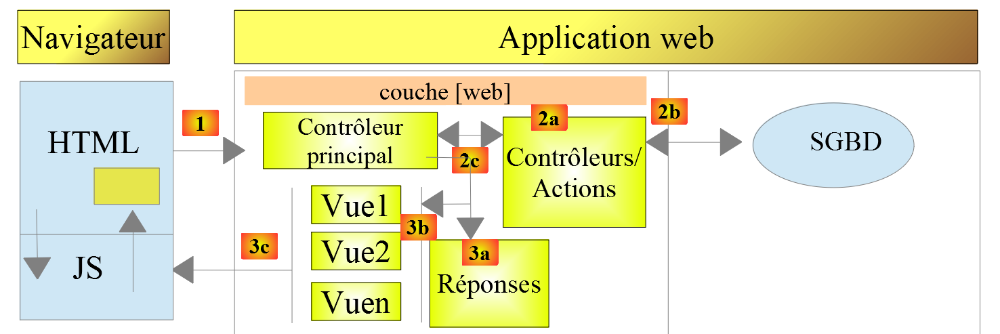
في المثال أعلاه، تتضمن كل من [وحدة التحكم / الإجراء] أجزاءً من طبقتي [الأعمال] و[DAO]. في طبقة [الويب]، لدينا بالفعل بنية MVC، لكن التطبيق ككل لا يتبع بنية متعددة الطبقات. فهنا، توجد طبقة واحدة فقط تتولى كل المهام.
الآن، دعونا ننظر في بنية ويب متعددة الطبقات:

يمكن تنفيذ طبقة [الويب] دون اتباع نموذج MVC. وبذلك يكون لدينا بنية متعددة الطبقات، لكن طبقة الويب لا تنفذ نموذج MVC.
على سبيل المثال، في عالم .NET، يمكن تنفيذ طبقة [الويب] أعلاه باستخدام ASP.NET MVC، مما ينتج عنه بنية ذات طبقات مع طبقة [ويب] على غرار MVC. بعد القيام بذلك، يمكننا استبدال طبقة ASP.NET MVC هذه بطبقة ASP.NET كلاسيكية (WebForms) مع الحفاظ على بقية العناصر (منطق الأعمال، DAO، برنامج التشغيل) دون تغيير. وبذلك نحصل على بنية متعددة الطبقات مع طبقة [الويب] التي لم تعد قائمة على MVC.
في MVC، قلنا إن نموذج M هو نموذج عرض V، أي مجموعة البيانات التي يعرضها عرض V. وهناك تعريف آخر لنموذج M في MVC:

يعتبر العديد من المؤلفين أن ما يقع على يمين طبقة [الويب] يشكل نموذج M في MVC. لتجنب الغموض، يمكننا الإشارة إلى:
- نموذج المجال عند الإشارة إلى كل ما يقع على يمين طبقة [الويب]؛
- نموذج العرض عند الإشارة إلى البيانات المعروضة بواسطة عرض V؛
23.2. شجرة مشروع NetBeans
بالنسبة لمشروع NetBeans، سنعتمد بنية تعكس نموذج MVC:
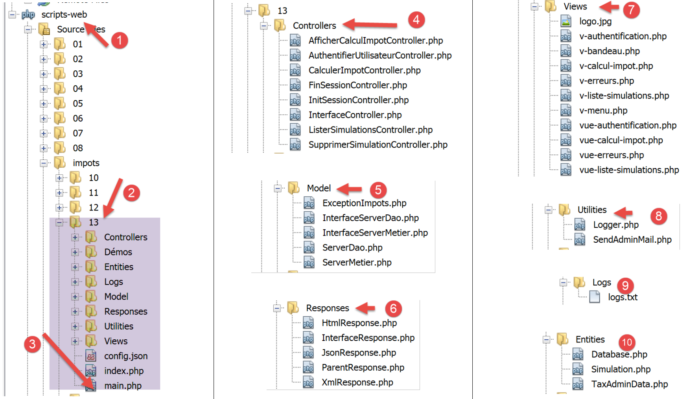
- [3]: [main.php] هو وحدة التحكم الرئيسية في نموذج MVC الخاص بنا. وهو يمثل الحرف C في MVC؛
- [4]: سيحتوي المجلد [Controllers] على وحدات التحكم الثانوية. كل منها يتولى إجراءً محددًا. ويُشار إلى هذا الإجراء في عنوان URL، على سبيل المثال […/main.php?action=authenticate-user]. وبهذا الإجراء، ستختار [وحدة التحكم الرئيسية] [main.php] [وحدة تحكم ثانوية]، وهي في هذه الحالة [AuthentifierUtilisateurController]، للتعامل مع الإجراء المطلوب. وتُعد وحدات التحكم هذه أيضًا جزءًا من حرف C في MVC؛
- [5]: سيحتوي المجلد [Model] على طبقات [business] و [DAO] للتطبيق. وفقًا للمصطلحات المعتمدة سابقًا، تمثل هذه العناصر نموذج المجال، ووفقًا للمصطلحات المعتمدة لـ M، يمكن أن تمثل M في MVC؛
- [6]: يحتوي المجلد [Responses] على الفئات المسؤولة عن إرسال الاستجابة إلى العميل. توجد فئة واحدة لكل نوع استجابة مرغوب فيه:
- [JsonResponse]: لاستجابة JSON؛
- [XmlResponse]: للاستجابة XML؛
- [HtmlResponse]: للاستجابة HTML؛
- [7]: يحتوي المجلد [Views] على طرق عرض HTML عندما يكون الرد HTML مطلوبًا. هذا هو V في MVC. يتم تنشيطها بواسطة فئة [HtmlResponse]، التي تمرر لها البيانات المراد عرضها. هذه البيانات هي نموذج العرض. اعتمادًا على المصطلحات المعتمدة لـ M، يمكن أن تمثل هذه البيانات M في MVC؛
- [8]: يحتوي المجلد [Utilities] على برامج المساعدة:
- [Logger]: الفئة التي تسمح لك بالتسجيل في ملف نصي؛
- [Sendmail]: الفئة التي تسمح لك بإرسال رسائل البريد الإلكتروني؛
- [9]: يحتوي المجلد [Logs] على ملف السجل [logs.txt]؛
- [10]: يحتوي مجلد [Entities] على الفئات التي تستخدمها وحدات التحكم المختلفة؛
باستخدام بنية الدليل هذه، يمكننا وصف مسار المعالجة لعملية طلبها العميل:
- [main.php] [3] يستقبل الطلب؛
- بعد إجراء بعض الفحوصات الأولية (هل الإجراء من الإجراءات المقبولة؟)، يقوم بإعادة توجيه الطلب إلى وحدة التحكم الثانوية [4] المسؤولة عن معالجة هذا الإجراء؛
- تقوم وحدة التحكم الثانوية بمهمتها. وللقيام بذلك، قد تحتاج إلى طبقات [business] و [DAO] [5] بالإضافة إلى الكيانات الموجودة في المجلد [10]. ثم تعيد استجابتها إلى وحدة التحكم الرئيسية [main.php] التي قامت بتنشيطها؛
- اعتمادًا على نوع الاستجابة [JSON، XML، HTML] التي طلبها العميل، يقوم وحدة التحكم الرئيسية [main.php] بتنشيط إحدى الاستجابات من مجلد [Responses] [6]؛
- تقوم استجابات [JsonResponse] و [XmlResponse] بإرسال استجابة JSON أو XML إلى العميل، على التوالي؛
- يستخدم [HtmlResponse] أحد العروض من المجلد [Views] [7] لإرسال استجابة HTML إلى العميل؛
- تتمتع وحدات التحكم المختلفة بإمكانية الوصول إلى فئة [Logger] الموجودة في المجلد [8] لكتابة السجلات في ملف السجل الموجود في المجلد [9]. يتم تسجيل ما يلي:
- الإجراء المطلوب؛
- استجابة وحدة التحكم. يتم تسجيل ذلك بتنسيق JSON بغض النظر عن النوع المطلوب [JSON، XML، HTML]؛
- في حالة حدوث خطأ فادح (HTTP_INTERNAL_SERVER_ERROR)، ترسل وحدة التحكم الرئيسية [main.php] بريدًا إلكترونيًا إلى المسؤول باستخدام فئة [SendMail] الموجودة في المجلد [8]؛
23.3. إجراءات التطبيق
يرسل العميل الإجراء المطلوب تنفيذه إلى خادم الويب كمعلمة [action] في عنوان URL [/main.php?action=xxx]. يتم سرد الإجراءات المسموح بها في ملف [config.json] الذي يقوم بتكوين وحدة التحكم الرئيسية [main.php]:
"actions":
{
"init-session": "\\InitSessionController",
"authentifier-utilisateur": "\\AuthentifierUtilisateurController",
"calculer-impot": "\\CalculerImpotController",
"lister-simulations": "\\ListerSimulationsController",
"supprimer-simulation": "\\SupprimerSimulationController",
"fin-session": "\\FinSessionController",
"afficher-calcul-impot": "\\AfficherCalculImpotController"
},
- السطر 1: مفتاح [actions] في قاموس JSON؛
- الأسطر 3-9: قاموس [action:controller]. يرتبط كل إجراء بالوحدة الثانوية المسؤولة عن معالجته؛
- السطر 3: [init-session]: يبدأ جلسة محاكاة لحساب الضرائب. يحدد هذا الإجراء نوع الاستجابة المطلوب [JSON، XML، HTML]؛
- السطر 4: بمجرد تعيين نوع الجلسة، يجب على العميل المصادقة باستخدام الإجراء [authenticate-user]. إلى أن تتم مصادقة العميل، تُحظر جميع الإجراءات الأخرى باستثناء [init-session]؛
- السطر 5: بمجرد المصادقة، يمكن للعميل إجراء سلسلة من حسابات الضرائب باستخدام الإجراء [calculate-tax]؛
- السطر 6: في أي وقت، يمكن للعميل طلب عرض قائمة المحاكاة التي أجراها باستخدام الإجراء [list-simulations]؛
- السطر 7: يمكنه حذف بعضها باستخدام الإجراء [delete-simulation]؛
- السطر 8: ينهي العميل جلسة المحاكاة باستخدام الإجراء [end-session]. ومن ذلك الحين فصاعدًا، سيحتاج إلى تسجيل الدخول مرة أخرى إذا أراد استخدام التطبيق؛
- السطر 9: في تطبيق HTML، يعرض الإجراء [display-tax-calculation] النموذج المستخدم لحساب الضريبة؛
23.4. تكوين تطبيق الويب
يتم تكوين التطبيق بواسطة ملف JSON التالي [config.json]:
{
"databaseFilename": "database.json",
"rootDirectory": "C:/myprograms/laragon-lite/www/php7/scripts-web/impots/version-12",
"relativeDependencies": [
"/Entities/BaseEntity.php",
"/Entities/Simulation.php",
"/Entities/Database.php",
"/Entities/TaxAdminData.php",
"/Entities/ExceptionImpots.php",
"/Utilities/Logger.php",
"/Utilities/SendAdminMail.php",
"/Model/InterfaceServerDao.php",
"/Model/ServerDao.php",
"/Model/ServerDaoWithSession.php",
"/Model/InterfaceServerMetier.php",
"/Model/ServerMetier.php",
"/Responses/InterfaceResponse.php",
"/Responses/ParentResponse.php",
"/Responses/JsonResponse.php",
"/Responses/XmlResponse.php",
"/Responses/HtmlResponse.php",
"/Controllers/InterfaceController.php",
"/Controllers/InitSessionController.php",
"/Controllers/ListerSimulationsController.php",
"/Controllers/AuthentifierUtilisateurController.php",
"/Controllers/CalculerImpotController.php",
"/Controllers/SupprimerSimulationController.php",
"/Controllers/FinSessionController.php",
"/Controllers/AfficherCalculImpotController.php"
],
"absoluteDependencies": [
"C:/myprograms/laragon-lite/www/vendor/autoload.php",
"C:/myprograms/laragon-lite/www/vendor/predis/predis/autoload.php"
],
"users": [
{
"login": "admin",
"passwd": "admin"
}
],
"adminMail": {
"smtp-server": "localhost",
"smtp-port": "25",
"from": "guest@localhost",
"to": "guest@localhost",
"subject": "plantage du serveur de calcul d'impôts",
"tls": "FALSE",
"attachments": []
},
"logsFilename": "Logs/logs.txt",
"actions":
{
"init-session": "\\InitSessionController",
"authentifier-utilisateur": "\\AuthentifierUtilisateurController",
"calculer-impot": "\\CalculerImpotController",
"lister-simulations": "\\ListerSimulationsController",
"supprimer-simulation": "\\SupprimerSimulationController",
"fin-session": "\\FinSessionController",
"afficher-calcul-impot": "\\AfficherCalculImpotController"
},
"types": {
"json": "\\JsonResponse",
"html": "\\HtmlResponse",
"xml": "\\XmlResponse"
},
"vues": {
"vue-authentification.php": [700, 221, 400],
"vue-calcul-impot.php": [200, 300, 341, 350, 800],
"vue-liste-simulations.php": [500, 600]
},
"vue-erreurs": "vue-erreurs.php"
}
تعليقات
- السطر 2: اسم ملف JSON الذي يحتوي على تكوين الوصول إلى قاعدة البيانات؛
- الأسطر 3–39: تكوين تبعيات المشروع. يتم سرد جميع نصوص PHP في شجرة دليل المشروع هنا؛
- الأسطر 40–44: المستخدم المصرح له باستخدام التطبيق؛
- الأسطر 46–54: عنوان البريد الإلكتروني لمسؤول التطبيق؛
- السطر 55: المسار إلى ملف السجل؛
- الأسطر 56–65: الارتباطات [الإجراء => وحدة التحكم الثانوية المسؤولة عن معالجته]؛
- الأسطر 66–70: التعيينات [نوع الاستجابة => فئة الاستجابة المسؤولة عن إرسال الاستجابة إلى العميل]؛
- الأسطر 71–75: التعيينات [عرض HTML => جدول رموز الحالة المؤدية إلى هذا العرض]؛
- السطر 76: يتم عرض العرض [error-view] في جلسة HTML كلما حدث خطأ غير عادي:
- عادةً ما يتم الاستعلام عن تطبيق JSON أو XML باستخدام عميل مبرمج. يمرر هذا العميل معلمات إلى الخادم قد تكون مفقودة أو غير صحيحة. تتعامل وحدات التحكم مع هذه الحالات وترسل رموز الخطأ إلى العميل. يجب التعامل مع جميع حالات الخطأ المحتملة؛
- مع تطبيق HTML، الأمر مختلف قليلاً. في ظل الاستخدام العادي، يستخدم تطبيق الويب فقط مجموعة فرعية من حالات الاستخدام المحتملة لعملاء JSON و XML. لنأخذ مثالاً: يتوقع الإجراء [calculate-tax] ثلاثة معلمات منشورة (مرسلة عبر طلب POST): [married, children, salary].
- إذا كان لدينا عميل JSON يسمح بإدخال عناوين URL يدويًا، فيمكننا طلب الإجراء [calculate-tax] باستخدام طلب GET بدلاً من POST، أو باستخدام طلب POST لا يحتوي على معلمات عندما تكون هناك حاجة إلى ثلاث معلمات، وما إلى ذلك. يجب أن يتعامل خادم JSON مع كل هذه الحالات؛
- مع تطبيق الويب، سيتم طلب الإجراء [calculate-tax] عبر نموذج ويب حيث لا يمكن حدوث أي من الحالتين السابقتين: سيتم طلب الإجراء [calculate-tax] عبر طلب POST مع المعلمات الثلاثة [married، children، salary]. قد تحتوي بعض هذه المعلمات على قيمة غير صحيحة، لكنها ستكون موجودة. ومع ذلك، يمكن للمستخدم إعادة إنتاج أخطاء معينة عن طريق كتابة عناوين URL في المتصفح بنفسه. لأسباب أمنية، يجب علينا التعامل مع هذه الحالة؛
- سيتم عرض [error-view] كلما أعاد وحدة تحكم ثانوية رمز حالة غير متوافق مع تطبيق الويب، أي رمز حالة غير مدرج في الأسطر 72–74 من ملف التكوين. نختار هذا الحل لأغراض تعليمية. خيار آخر ممكن هو عدم القيام بأي شيء وإعادة عرض العرض المعروض حاليًا في متصفح العميل ببساطة حتى يحصل المستخدم على انطباع بأن الخادم لا يستجيب لعناوين URL التي صاغها يدويًا؛
23.5. تثبيت الأدوات والمكتبات
23.5.1. Postman
[Postman] هي الأداة التي ستسمح لنا بالاستعلام عن عناوين URL المختلفة لتطبيق الويب الخاص بنا. وهي تتيح لنا:
- استخدام أي عنوان URL: يتم إنشاؤها يدويًا؛
- الاستعلام عن خادم الويب باستخدام GET و POST و PUT و OPTIONS وغيرها؛
- تحديد معلمات GET أو POST؛
- تعيين رؤوس HTTP للطلب؛
- تلقي استجابة بتنسيق JSON أو XML أو HTML؛
- الوصول إلى رؤوس HTTP للاستجابة. وهذا يتيح لنا الوصول إلى استجابة HTTP الكاملة للخادم؛
نظرًا لأننا نقوم بإنشاء عناوين URL التي يتم الاستعلام عنها يدويًا، فسنتمكن من اختبار جميع سيناريوهات الأخطاء المحتملة ومعرفة كيفية تفاعل الخادم.
[Postman] متاح على الرابط [https://www.getpostman.com/downloads/]. الإصدار المتوفر في يونيو 2019 هو 7.2. يحتوي هذا الإصدار على خطأ: عند إجراء طلبات متتالية إلى خادم الويب، لا يقوم عميل [Postman 7.2] تلقائيًا بإرجاع ملفات تعريف الارتباط المرسلة من الخادم، ولا سيما ملف تعريف ارتباط الجلسة. للحفاظ على الجلسة، يجب نسخ ملف تعريف ارتباط الجلسة يدويًا إلى رؤوس HTTP للطلبات اللاحقة. هذا الأمر ليس معقدًا للغاية، ولكنه غير عملي. هذا خطأ لم يكن موجودًا في الإصدارات السابقة. وإدراكًا لهذا الخطأ، قام فريق [Postman] بإصلاحه في إصدار ألفا (قد يكون غير مستقر) يسمى [Postman Canary]، وهو متاح على الرابط [https://www.getpostman.com/downloads/canary]. هذا هو الإصدار المستخدم هنا. سنشرح كيفية تثبيته. إذا كان هناك إصدار مستقر [Postman 7.3] أو أحدث متاح، يمكنك تنزيله: من المرجح أن يكون الخلل قد تم إصلاحه.
تابع تثبيت إصدار [Postman] الخاص بك. أثناء التثبيت، سيُطلب منك إنشاء حساب: لن تكون هناك حاجة إلى ذلك هنا. يُستخدم حساب [Postman] لمزامنة الأجهزة المختلفة بحيث يتم نسخ تكوين جهاز ما على جهاز آخر. لا حاجة إلى أي من ذلك هنا.
بمجرد التثبيت، يعرض [Postman] الواجهة التالية:

- في [2-3]، يمكنك الوصول إلى إعدادات المنتج؛

- في [6]، الإصدار المستخدم في هذا المستند؛
- إذا كنت قد أنشأت حسابًا، فستتم المزامنة بين جهاز الكمبيوتر الخاص بك وخادم [Postman] البعيد. ويُشار إلى ذلك من خلال العجلة الدوارة [7] التي تظهر كلما أجريت تغييرات على مشروع [Postman]. لإيقاف هذه المزامنة غير الضرورية، قم بتسجيل الخروج عبر [8-9]؛
23.5.2. مكتبة Symfony / Serializer
لتسلسل الكائنات إلى JSON و XML، سنستخدم مكتبة [Symfony / Serializer]. وهي توفر ميزتين في هذا الصدد:
- إنها متسقة في استخدامها للتسلسل إلى JSON أو XML: وهذا يتجنب الحاجة إلى تعلم مكتبتين بواجهات برمجة تطبيقات (API) مختلفة؛
- بشكل أصلي، يمكنها تسلسل الكائنات إلى JSON أو XML، حتى لو كانت سماتها خاصة. تذكر أنه في JSON، لتسلسل كائن، كان على فئته تنفيذ واجهة [\JsonSerializable]. وكانت النتيجة التي تم الحصول عليها عبارة عن سلسلة JSON لمصفوفة ترابطية تحتوي على سمات الفئة كمفاتيح. وعند إزالة التسلسل عن سلسلة JSON هذه، كنا نسترد المصفوفة الترابطية الأولية، والتي كان يتعين بعد ذلك تحويلها إلى كائن من الفئة التي تم تسلسلها. مع [Symfony / Serializer]، ينتج عن إزالة التسلسل على الفور كائن من الفئة التي تم تسلسلها. وهذا أبسط؛
تتوفر وثائق مكتبة [Symfony / Serializer] على الرابط: [https://symfony.com/doc/current/components/serializer.html] (يونيو 2019).
لتثبيت هذه المكتبة، افتح محطة Laragon (انظر قسم الروابط) واكتب الأمر التالي:

- في [1]، الأمر لتثبيت مكتبة [symfony/serializer]؛
- في [2]، مكتبة أخرى مطلوبة لمشروعنا: تتيح تسلسل الكائنات؛

23.6. كيانات التطبيق

تم استخدام الكيانات [BaseEntity، Database، ExceptionImports، TaxAdminData] منذ الإصدار 08 من خدمة الويب (انظر قسم الروابط).
سيتم استخدام فئة [Simulation] لتغليف عناصر محاكاة حساب الضريبة:
<?php
namespace Application;
class Simulation extends BaseEntity {
// attributes of a tax calculation simulation
protected $marié;
protected $enfants;
protected $salaire;
protected $impôt;
protected $surcôte;
protected $décôte;
protected $réduction;
protected $taux;
// getters
public function getMarié() {
return $this->marié;
}
public function getEnfants() {
return $this->enfants;
}
public function getSalaire() {
return $this->salaire;
}
public function getImpôt() {
return $this->impôt;
}
public function getSurcôte() {
return $this->surcôte;
}
public function getDécôte() {
return $this->décôte;
}
public function getRéduction() {
return $this->réduction;
}
public function getTaux() {
return $this->taux;
}
}
تعليقات
- السطر 5: تمتد فئة [Simulation] من فئة [BaseEntity] وبالتالي ترث الطرق التالية:
- [setFromArrayOfAttributes($arrayOfAttributes)]: التي تسمح لك بتهيئة سمات الفئة؛
- [__toString]: التي تُرجع سلسلة JSON للكائن؛
- الأسطر 7–14: سمات المحاكاة؛
- الأسطر 16–47: طرق الحصول على القيم في الفئة؛
23.7. أدوات المساعدة الخاصة بالتطبيق

تسمح لك فئة [Logger] بتسجيل الأحداث في ملف نصي. يتم وصف هذه الفئة في القسم المرتبط.
تسمح لك فئة [SendAdminMail] بإرسال بريد إلكتروني إلى مسؤول التطبيق. هذه الفئة موصوفة في القسم المرتبط.
23.8. طبقات [business] و [DAO]


يتم تجميع الفئات والواجهات الخاصة بطبقتي [business] و [DAO] في مجلد [Model]. وقد تم تعريفها جميعًا واستخدامها في الإصدارات السابقة:
ExceptionImports | الفئة الخاصة بالاستثناءات التي تطلقها طبقة [DAO]. تم تعريفها في القسم المرتبط. |
InterfaceServerDao | واجهة تم تنفيذها بواسطة طبقة [dao] للخادم. تم تعريفها في القسم المرتبط. |
ServerDao | تنفيذ واجهة [InterfaceServerDao]. تنفذ طبقة [dao] للخادم. محددة في قسم الرابط. |
ServerDaoWithSession | تنفيذ واجهة [InterfaceServerDao]. تنفذ طبقة [dao] للخادم. محددة في قسم "الرابط". |
InterfaceServerMetier | واجهة يتم تنفيذها بواسطة طبقة [business] الخاصة بالخادم. محددة في قسم الارتباط. |
ServerBusiness | تنفيذ واجهة [InterfaceMetier]. ينفذ طبقة [business] للخادم. محدد في قسم "link". |
يستخدم التطبيق الذي يجري تطويره حاليًا بشكل مكثف العناصر التي تم عرضها واستخدامها بالفعل:
- طبقات [business] و [DAO]؛
- الأدوات المساعدة [Logger] و [SendAdminMail]؛
- الكيانات [ExceptionImpots و TaxAdminData و Database]؛
سنركز على طبقة [الويب] في التطبيق:

23.9. وحدة التحكم الرئيسية [main.php]
23.9.1. مقدمة

- [1-2]: يتم تكوين وحدة التحكم الرئيسية [main.php] [1] بواسطة ملف [config.json] [2]؛
دعونا نستعرض موقع وحدة التحكم الرئيسية في بنية MVC الخاصة بنا:
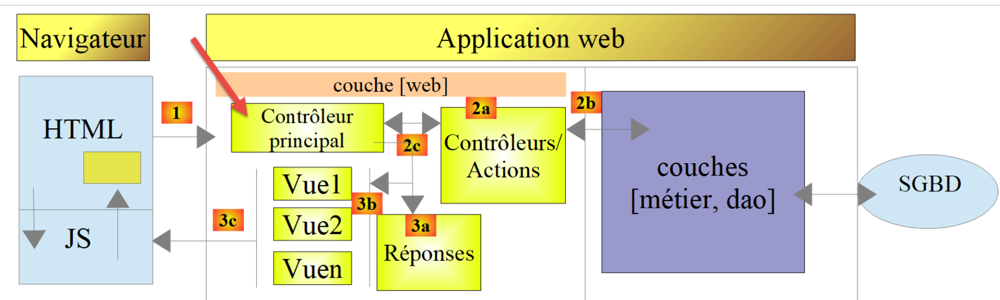
في [1]، تعد وحدة التحكم الرئيسية [main.php] العنصر الأول في بنية MVC الذي يعالج طلب العميل. ولها عدة أدوار:
- أولاً، تقوم بإجراء فحوصات أساسية:
- هل ملف التكوين الخاص بها موجود وهل هو صالح؛
- تحميل جميع تبعيات المشروع. وهذا يعني تحميل جميع عناصر بنية MVC؛
- هل تم تحديد الإجراء المطلوب؟ إذا كان الأمر كذلك، فهل هو صالح؟
- إذا كان الإجراء المطلوب صالحًا، فحدد [2a] وحدة التحكم الثانوية التي ستعالجه وقم بتمرير المعلومات التي تحتاجها إليها: طلب HTTP، والجلسة، وتكوين التطبيق؛
- استرداد [2c] الاستجابة من وحدة التحكم الثانوية. اعتمادًا على نوع التطبيق (JSON، XML، HTML) المطلوب من قبل العميل، حدد [3a] الاستجابة (JsonResponse، XmlResponse، HtmlResponse) المسؤولة عن إرسال الاستجابة إلى العميل وقم بتمرير جميع المعلومات التي تحتاجها (طلب HTTP، الجلسة، تكوين التطبيق، الاستجابة من وحدة التحكم الثانوية)؛
- بمجرد إرسال هذا الرد [3c]، قم بتحرير أي موارد قد تم تخصيصها لمعالجة الطلب؛
23.9.2. [main.php] - 1
فيما يلي كود وحدة التحكم الرئيسية [main.php]:
<?php
// strict adherence to declared types of function parameters
declare (strict_types=1);
// namespace
namespace Application;
// symfony dependencies
use Symfony\Component\HttpFoundation\Request;
use Symfony\Component\HttpFoundation\Response;
use Symfony\Component\HttpFoundation\Session\Session;
// error handling by PHP
//ini_set("display_errors", "0");
error_reporting(E_ALL && !E_WARNING && !E_NOTICE);
// we retrieve the configuration
$configFilename = "config.json";
$fileContents = \file_get_contents($configFilename);
$erreur = FALSE;
// mistake?
if (!$fileContents) {
// we note the error
$état = 131;
$erreur = TRUE;
$message = "Le fichier de configuration [$configFilename] n'existe pas";
}
if (!$erreur) {
// retrieve the JSON code from the configuration file in an associative array
$config = \json_decode($fileContents, true);
// mistake?
if (!$config) {
// we note the error
$erreur = TRUE;
$état = 132;
$message = "Le fichier de configuration [$configFilename] n'a pu être exploité correctement";
}
}
// mistake?
if ($erreur) {
// preparation of JSON server response
// you can't use the configuration file
// symfony dependencies
require_once "C:/myprograms/laragon-lite/www/vendor/autoload.php";
// response preparation
$response = new Response();
$response->headers->set("content-type", "application/json");
$response->setCharset("utf-8");
// status code
$response->setStatusCode(Response::HTTP_INTERNAL_SERVER_ERROR);
// content
$response->setContent(json_encode(["action" => "", "état" => $état, "réponse" => $message], JSON_UNESCAPED_UNICODE));
// shipping
$response->send();
// end
exit;
}
…
تعليقات
- الأسطر 10–12: يستخدم وحدة التحكم الرئيسية كائنات Symfony التالية:
- [Request]: طلب HTTP الذي يجري معالجته حاليًا؛
- [Session]: جلسة تطبيق الويب؛
- [Response]: استجابة HTTP للعميل؛
- السطر 15: طوال عملية التطوير، سيظل هذا السطر معلقًا: يتم بعد ذلك تضمين أخطاء PHP في دفق النص المرسل إلى العميل. إذا كان العميل متصفحًا، فإن هذا يسمح للمستخدم برؤية الأخطاء التي واجهها الخادم. وهذا يساعد في تصحيح الأخطاء؛
- السطر 16: يتم الإبلاغ عن جميع الأخطاء (E_ALL) باستثناء التحذيرات (! E_WARNING) والإشعارات غير الخطيرة (! E_NOTICE). على سبيل المثال، إذا تعذر فتح ملف، يقوم PHP بإنشاء خطأ [E_NOTICE]. إذا كان السطر 15 يتيح عرض الأخطاء، فسيظهر خطأ فتح الملف في متصفح العميل. هذا جيد إذا نسيت اختبار نتيجة فتح الملف، ولكنه أقل جودة إذا كنت تخطط لاختباره: حيث يؤدي سطر [notice] إلى ازدحام استجابة الخادم للعميل. أثناء التطوير، يجب أيضًا تعليق السطر 16: فأنت لا تريد أن تفوت أي أخطاء؛
- السطر 19: يتم قراءة ملف التكوين؛
- الأسطر 22-27: إذا فشلت عملية القراءة هذه، يتم تسجيل الخطأ (السطر 25)، ويتم تعيين التطبيق إلى الحالة [131]، ويتم إعداد رسالة خطأ؛
- السطر 30: يتم فك تشفير سلسلة JSON من ملف التكوين؛
- الأسطر 32-37: إذا فشل فك التشفير، يتم تسجيل الخطأ (السطر 34)، ويتم تعيين التطبيق إلى الحالة [132]، ويتم إعداد رسالة خطأ؛
- الأسطر 40-57: إذا حدث خطأ أثناء قراءة ملف التكوين، لا يمكننا المتابعة. ثم نقوم بإعداد استجابة JSON للعميل:
- السطر 44: نظرًا لعدم قراءة ملف التكوين، يجب استيراد ملف [autoload] المطلوب من قبل [Symfony] يدويًّا؛
- السطران 46-47: يتم إعداد استجابة JSON؛
- السطر 50: سيكون رمز حالة HTTP للاستجابة هو 500 INTERNAL_SERVER_ERROR؛
- السطر 52: نقوم بتعيين محتوى JSON للاستجابة. ستحتوي جميع الاستجابات التي تم إنشاؤها بواسطة تطبيق الويب قيد النظر على ثلاثة مفاتيح:
- [action]: الإجراء المطلوب من قبل العميل؛
- [status]: حالة التطبيق بعد تنفيذ هذا الإجراء؛
- [response]: استجابة خادم الويب؛
- السطر 54: يتم إرسال استجابة JSON إلى العميل؛
23.9.3. [Postman] الاختبارات - 1
سنقوم بالتحقق من سلوك الخادم في حالة فقدان ملف التكوين أو عدم صحته:

سنقوم بتنظيم الطلبات المختلفة التي سيرسلها عميل [Postman] الخاص بنا إلى خادم الضرائب في مجموعات.
- في [1]، قم بإنشاء مجموعة جديدة؛
- في [2]، قم بتسميتها؛
- في [3]، الوصف اختياري؛

- في المجموعات [4]، تظهر الآن مجموعة باسم [impots-server-tests-version12] [5]؛
- في [6]، يمكنك إضافة طلب جديد إلى المجموعة؛

- في [7]، يتم تسمية الاستعلام؛
- في [8]، الوصف اختياري؛
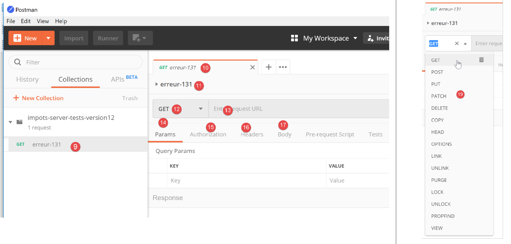
- في [9-11]، تتم إضافة الطلب إلى المجموعة؛
- في [12]، حدد نوع الطلب؛ هنا، طلب [GET]. في [19]، أنواع الطلبات المختلفة المتاحة؛
- في [13]، أدخل عنوان URL للخادم هنا؛
- في [14]، أدخل المعلمات المضافة إلى عنوان URL هنا؛ وستكون هذه معلمات GET. وتتمثل ميزة إدخالها هنا بدلاً من إدخالها مباشرةً في عنوان URL في أن [Postman] سيقوم بترميزها. إذا أدخلتها مباشرةً في عنوان URL، فستحتاج إلى ترميزها بنفسك؛
- في [15]، تُستخدم [Authorization] لتحديد المستخدم الذي سيقوم بتسجيل الدخول. لن نحتاج إلى استخدام هذا الخيار؛
- في [16]، رؤوس HTTP التي سترافق الطلب. يتم تضمين عدد من الرؤوس تلقائيًا في الطلب. يمكنك إضافة رؤوس جديدة هنا؛
- في [17]، يشير [Body] إلى معلمات عملية [POST]. سنحتاج إلى استخدام هذا الخيار؛
سنقوم بإجراء الاختبار التالي:
- في [main.php]، نحدد أن ملف التكوين هو [config2.json]، وهو غير موجود:
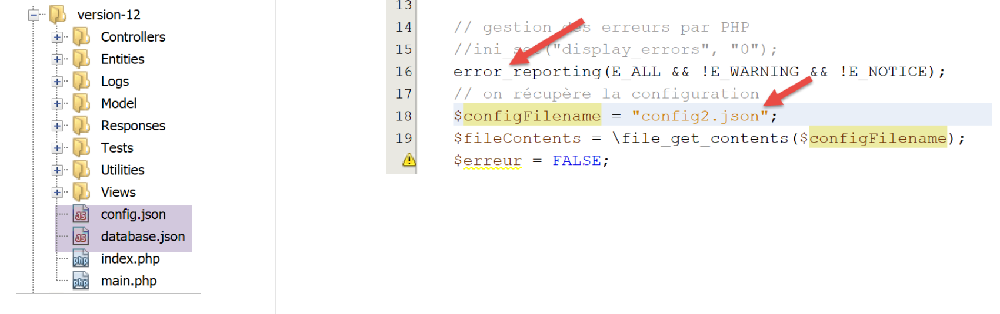
- يجب إزالة التعليق عن السطر 16 من الكود؛
- السطر 18: الخطأ المتعلق باسم ملف التكوين؛
لنفتح [Postman] [13، 20]، وندخل عنوان URL لخادم الويب الخاص بحساب الضرائب، وننفذه [21]:

الاستجابة التي يرد بها الخادم (يجب بالطبع أن يكون Laragon قيد التشغيل) هي كما يلي:

- في [22]، أرجع الخادم رمز HTTP [500 Internal Server Error]؛
- في [23]، يشير [Body] إلى نص الاستجابة، أي المستند الذي أرسله الخادم خلف رؤوس HTTP [28]؛
- في [26]، نرى أن [Postman] تلقى استجابة JSON؛
- في [27]، استجابة JSON المنسقة؛
- في [28]، استجابة JSON الأولية بدون تنسيق؛
- في [29]، يُستخدم وضع [Preview] عندما يكون الرد بتنسيق HTML. ثم يعرض وضع [Preview] الصفحة المستلمة؛
- في [30]، استجابة JSON من الخادم. هذه هي بالفعل الاستجابة التي كنا نتوقعها؛
في [25]، تكون رؤوس HTTP المرسلة في استجابة الخادم كما يلي:

- في [32]، نوع JSON للاستجابة؛
سمح لنا هذا الاختبار الأولي بمعرفة أننا:
- يمكننا إرسال أي نوع من الطلبات إلى الخادم الذي تم اختباره؛
- يمكننا تعيين معلمات GET أو POST؛
- لدينا الاستجابة الكاملة: رؤوس HTTP والوثيقة التي تلي هذه الرؤوس [Body]؛
الآن، دعونا نجري اختبارًا ثانيًا:

- في [1-3]، ملف [config3.json] هو ملف JSON غير صحيح من الناحية النحوية؛
- في [4]، تم تكوين [main.php] لاستخدام [config3.json]؛
نضيف طلبًا جديدًا في [Postman]:

- [1-3]، انقر بزر الماوس الأيمن على [2] واختر خيار [duplicate] لتكرار الطلب [2]؛
- في [4]، يحتوي الطلب الجديد على اسم افتراضي، نقوم بتغييره في [5]؛

- في [6]، الطلب الذي تم تغيير اسمه؛
- في [9-10]، نرسل نفس طلب GET كما في السابق؛

- في [11]، استجابة JSON من الخادم؛
هنا أوضحنا كيف سيتم اختبار الإجراءات المختلفة لخدمة الويب الخاصة بحساب الضرائب.
23.9.4. [main.php] – 2
نستأنف استعراضنا لرمز وحدة التحكم الرئيسية [main.php]:
<?php
// strict adherence to declared types of function parameters
declare (strict_types=1);
// namespace
namespace Application;
// symfony dependencies
use Symfony\Component\HttpFoundation\Request;
use Symfony\Component\HttpFoundation\Response;
use Symfony\Component\HttpFoundation\Session\Session;
// error handling by PHP
//ini_set("display_errors", "0");
error_reporting(E_ALL && !E_WARNING && !E_NOTICE);
// we retrieve the configuration
$configFilename = "config.json";
…
// include the necessary script dependencies
$rootDirectory = $config["rootDirectory"];
foreach ($config["relativeDependencies"] as $dependency) {
require_once "$rootDirectory$dependency";
}
// absolute dependencies (third-party libraries)
foreach ($config["absoluteDependencies"] as $dependency) {
require_once "$dependency";
}
// log file creation
try {
$logger = new Logger($config['logsFilename']);
} catch (ExceptionImpots $ex) {
// log file could not be created - internal server error
$état = 133;
(new JsonResponse())->send(
NULL, NULL, $config,
Response::HTTP_INTERNAL_SERVER_ERROR,
["action" => "non déterminée", "état" => $état, "réponse" => "Le fichier de logs [{$config['logsFilename']}] n'a pu être créé"],
[]);
// completed
exit;
}
تعليقات
- السطر 18: لدينا الآن ملف تكوين [config.json] موجود وصحيح من الناحية النحوية. يجب علينا أيضًا التحقق من وجود المفاتيح المتوقعة في هذا الملف. سنفترض أن هذا جزء من عملية التصحيح العادية للمطور. كان بإمكاننا تطبيق نفس المنطق على الخطأين السابقين؛
- الأسطر 20–28: نقوم بتضمين جميع التبعيات المطلوبة لمشروع الويب. وقد صادفنا هذا الكود عدة مرات من قبل؛
- الأسطر 31–43: نحاول إنشاء كائن [Logger]، الذي سيسمح لنا بتسجيل الأحداث في الملف [$config['logsFilename']]. قد يفشل هذا الإنشاء؛
- الأسطر 33–43: معالجة الخطأ عند إنشاء كائن [Logger]؛
- السطر 35: نحدد رقم الحالة؛
- الأسطر 36–40: نرسل استجابة JSON؛
- السطر 42: نوقف البرنامج النصي؛
جميع الاستجابات المرسلة إلى العميل تنفذ واجهة [InterfaceResponse] التالية:

فيما يلي كود واجهة [InterfaceResponse]:
<?php
namespace Application;
// symfony dependencies
use Symfony\Component\HttpFoundation\Request;
use Symfony\Component\HttpFoundation\Session\Session;
interface InterfaceResponse {
// Request $request : requête en cours de traitement
// Session $session: the web application session
// array $config: application configuration
// int statusCode: HTTP response status code
// array $content: server response
// array $headers: HTTP headers to be added to the response
// Logger $logger: the logger for writing logs
public function send(
Request $request = NULL,
Session $session = NULL,
array $config,
int $statusCode,
array $content,
array $headers,
Logger $logger = NULL): void;
}
- الأسطر 19–27: تحتوي واجهة [InterfaceResponse] على طريقة واحدة [send] لإرسال الاستجابة إلى العميل؛
- الأسطر 11–17: معنى المعلمات المختلفة لطريقة [send]؛
- الأسطر 23–25: المعلمات [$statusCode، $content، $headers] هي جزء من المخرجات القياسية لوحدات التحكم الثانوية للتطبيق. ومع ذلك، قد تتطلب الاستجابة معلومات إضافية. ولذلك، نزودها بالمعلمات الثلاثة الأولى (الأسطر 20–22)، والتي تتيح لها الوصول إلى جميع المعلومات المتعلقة بالطلب والجلسة والتكوين؛
- السطر 26: تتطلب الاستجابة [Logger] لأنها ستسجل الاستجابة المرسلة إلى العميل؛
تنفذ فئة [JsonResponse] واجهة [InterfaceResponse] على النحو التالي:
<?php
namespace Application;
// symfony dependencies
use Symfony\Component\Serializer\Encoder\JsonEncode;
use Symfony\Component\Serializer\Encoder\JsonEncoder;
use Symfony\Component\Serializer\Normalizer\ObjectNormalizer;
use Symfony\Component\Serializer\Serializer;
use \Symfony\Component\HttpFoundation\Request;
use \Symfony\Component\HttpFoundation\Session\Session;
class JsonResponse extends ParentResponse implements InterfaceResponse {
// Request $request : requête en cours de traitement
// Session $session: the web application session
// array $config: application configuration
// int statusCode: HTTP response status code
// array $content: server response
// array $headers: HTTP headers to be added to the response
// Logger $logger: the logger for writing logs
public function send(
Request $request = NULL,
Session $session = NULL,
array $config,
int $statusCode,
array $content,
array $headers,
Logger $logger = NULL): void {
// symfony serializer preparation
$serializer = new Serializer(
[
// required for object serialization
new ObjectNormalizer()],
// encoder jSON
// for options, make OU between the different options
[new JsonEncoder(new JsonEncode([JsonEncode::OPTIONS => JSON_UNESCAPED_UNICODE]))]
);
// serialization jSON
$json = $serializer->serialize($content, 'json');
// headers
$headers = array_merge($headers, ["content-type" => "application/json"]);
// sending reply
parent::sendResponse($statusCode, $json, $headers);
// log
if ($logger !== NULL) {
$logger->write("réponse=$json\n");
}
}
}
تعليقات
- السطر 13: تنفذ الفئة واجهة [InterfaceResponse]؛
- السطر 13: الفئة تمتد من فئة [ParentResponse]. جميع أنواع [Response] تمتد من هذه الفئة. هذه الفئة الأم هي التي ترسل الاستجابة إلى العميل (السطر 46). ولأن هذا الكود كان مشتركًا بين جميع أنواع [Response]، فقد تم تجميعه في فئة أم؛
- الأسطر 33-40: إنشاء مثيل لمُسلسل [Symfony]، الذي سيحول استجابة الخادم [$content] إلى سلسلة JSON (السطر 42)؛
- الأسطر 34–36: المعلمة الأولى لمُنشئ [Serializer] هي مصفوفة. نضع فيها مثيلًا لفئة [ObjectNormalizer] المطلوبة لتسلسل الكائنات. في هذا التطبيق، يحدث هذا مع قائمة من المحاكاة حيث كل محاكاة هي مثيل لفئة [Simulation]؛
- السطر 39: المعلمة الثانية لمُنشئ [Serializer] هي أيضًا مصفوفة: تحتوي على جميع المُشفِّرات المستخدمة في التسلسل (XML، JSON، CSV، إلخ)؛
- السطر 39: سيكون هناك مُشفر واحد فقط هنا، من النوع [JsonEncoder]. كان من الممكن أن يكون المُنشئ الخالي من المعلمات كافياً. هنا، قمنا بتمرير معلمة [JsonEncode] إلى المُنشئ، فقط لتمرير خيارات ترميز JSON؛
- السطر 39: معلمة منشئ [JsonEncode] هي مصفوفة من الخيارات. هنا نستخدم خيار [JSON_UNESCAPED_UNICODE] لطلب عرض أحرف UTF-8 في سلسلة JSON بشكل أصلي بدلاً من "الهروب"؛
- السطر 42: يتم تسلسل نص استجابة HTTP إلى JSON باستخدام أداة التسلسل السابقة؛
- السطر 44: نضيف رأس HTTP الذي يُخبر العميل بأننا نرسل JSON؛
- السطر 46: يُطلب من الفئة الأصلية إرسال الاستجابة إلى العميل؛
- الأسطر 48–50: نقوم بتسجيل استجابة JSON؛
فيما يلي كود الفئة الأصلية [ParentResponse]:
<?php
namespace Application;
// symfony dependencies
use Symfony\Component\HttpFoundation\Response;
class ParentResponse {
// int $statusCode: HTTP response status code
// string $content: the body of the response to be sent
// depending on the case, this is a jSON, XML, HTML string
// array $headers: HTTP headers to be added to the response
public function sendResponse(
int $statusCode,
string $content,
array $headers): void {
// preparing the server's text response
$response = new Response();
$response->setCharset("utf-8");
// status code
$response->setStatusCode($statusCode);
// headers
foreach ($headers as $text => $value) {
$response->headers->set($text, $value);
}
// we send the answer
$response->setContent($content);
$response->send();
}
}
تعليقات
- الأسطر 10–13: معنى المعلمات الثلاثة لطريقة [send]؛
- السطر 17: لاحظ أن نص الاستجابة من النوع [string] وبالتالي جاهز للإرسال (السطر 30)؛
- السطر 22: ستحتوي الاستجابة على أحرف UTF-8؛
- السطر 24: رمز حالة HTTP للاستجابة؛
- الأسطر 26-28: إضافة رؤوس HTTP التي يوفرها كود الاستدعاء؛
- الأسطر 30-31: إرسال الاستجابة إلى العميل؛
لقد قمنا بتفصيل دورة حياة استجابة JSON بالكامل. لن نعود إلى هذا لاحقًا. ما عليك سوى تذكر توقيع واجهة [InterfaceResponse]:
interface InterfaceResponse {
// Request $request : requête en cours de traitement
// Session $session: the web application session
// array $config: application configuration
// int statusCode: HTTP response status code
// array $content: server response
// array $headers: HTTP headers to be added to the response
// Logger $logger: the logger for writing logs
public function send(
Request $request = NULL,
Session $session = NULL,
array $config,
int $statusCode,
array $content,
array $headers,
Logger $logger = NULL): void;
}
يجب أن تلتزم وحدة التحكم الرئيسية [main.php] بهذا التوقيع في كل مرة تطلب فيها إرسال استجابة إلى العميل.
23.9.5. الاختبارات [Postman] – 2
نقوم بتعديل ملف [config.json] على النحو التالي:

- في [1]، نحدد أن ملف السجل هو [Logs]، وهو مجلد [2]. وبالتالي، من المفترض أن يفشل إنشاء ملف [Logs]؛
نقوم بإنشاء طلب [Postman] جديد [3]، باسم [error-133]:

- [2-4]: نحدد نفس الطلب كما في الاختبارين السابقين؛
- [5-7]: نسترد بنجاح استجابة JSON المتوقعة؛
23.9.6. [main.php] – 3
لنواصل استعراضنا لوحدة التحكم الرئيسية [main.php]:
<?php
// strict adherence to declared types of function parameters
declare (strict_types=1);
// namespace
namespace Application;
// symfony dependencies
use Symfony\Component\HttpFoundation\Request;
use Symfony\Component\HttpFoundation\Response;
use Symfony\Component\HttpFoundation\Session\Session;
// error handling by PHP
…
// log file creation
…
// 1st log
$logger->write("\n---nouvelle requête\n");
// current query
$request = Request::createFromGlobals();
// session
$session = new Session();
$session->start();
// error list
$erreurs = [];
$erreur = FALSE;
// we manage the requested action
if (!$request->query->has("action")) {
$erreurs[] = "paramètre [action] manquant";
$erreur = TRUE;
$état = 101;
$action = "";
} else {
// memorize the action
$action = strtolower($request->query->get("action"));
}
// we log the action
$logger->write("action [$action] demandée\n");
// does the action exist?
if (!$erreur && !array_key_exists($action, $config["actions"])) {
$erreurs[] = "action [$action] invalide";
$erreur = TRUE;
$état = 102;
}
// the session type must be known before performing certain actions
if (!$erreur && !$session->has("type") && $action !== "init-session") {
$erreurs[] = "pas de session en cours. Commencer par action [init-session]";
$erreur = TRUE;
$état = 103;
}
// some actions require authentication
if (!$erreur && !$session->has("user") && $action !== "authentifier-utilisateur" && $action !== "init-session") {
$erreurs[] = "action demandée par utilisateur non authentifié";
$erreur = TRUE;
$état = 104;
}
// mistakes?
if ($erreurs) {
// we prepare the answer without sending it
$statusCode = Response::HTTP_BAD_REQUEST;
$content = ["réponse" => $erreurs];
$headers = [];
} else {
// ---------------------------
// execute the action using its controller
$controller = __NAMESPACE__ . $config["actions"][$action];
$logger->write("contrôleur : $controller\n");
list($statusCode, $état, $content, $headers) = (new $controller())->execute($config, $request, $session);
}
// --------------------- we send the answer
// cas de l'erreur fatale HTTP_INTERNAL_SERVER_ERROR
// send an e-mail to the administrator if you can
if ($statusCode === Response::HTTP_INTERNAL_SERVER_ERROR && $config['adminMail'] != NULL) {
$infosMail = $config['adminMail'];
$infosMail['message'] = json_encode($content, JSON_UNESCAPED_UNICODE);
$sendAdminMail = new SendAdminMail($infosMail, $logger);
$sendAdminMail->send();
}
// the answer depends on the session type
if ($session->has("type")) {
// the session type is in the session
$type = $session->get("type");
} else {
// if no type in session, then the default response is jSON
$type = "json";
}
// we add the keys [action, state] to the controller response
$content = ["action" => $action, "état" => $état] + $content;
// instantiate the [Response] object responsible for sending the response to the client
$response = __NAMESPACE__ . $config["types"][$type]["response"];
(new $response())->send($request, $session, $config, $statusCode, $content, $headers, $logger);
// the reply has been sent - resources are released
$logger->close();
exit;
تعليقات
- بمجرد إجراء الفحوصات الأولية وتأكدها من إمكانية المتابعة، تركز وحدة التحكم الرئيسية على الإجراء المطلوب منها: يجب أن تستوفي شروطًا معينة؛
- السطر 21: نسجل حقيقة أن لدينا طلبًا جديدًا. لم نتمكن من القيام بذلك من قبل لأننا لم نكن متأكدين من وجود ملف سجل صالح؛
- السطر 23: نقوم بتغليف جميع المعلومات الواردة في طلب العميل في كائن Symfony [Request]؛
- السطر 26: نبدأ جلسة جديدة أو نسترد الجلسة الحالية إن وجدت؛
- السطر 27: يتم تنشيط الجلسة؛
- السطر 29: مصفوفة من رسائل الخطأ؛
- السطر 30: قيمة منطقية تخبرنا، أثناء تشغيل الاختبارات، ما إذا كان قد حدث خطأ أم لا؛
- السطر 32: يجب تضمين المعلمة [action] في عنوان URL بالشكل [main.php?action=someAction]. ثم يتم تضمين المعلمة [action] في معلمات [$request→query]؛
- الأسطر 33-36: الحالة التي تكون فيها المعلمة [action] غائبة عن عنوان URL. يتم تسجيل الخطأ وتعيين رمز الحالة [101] له؛
- السطر 39: إذا كانت المعلمة [action] موجودة في عنوان URL، يتم تخزينها؛
- السطر 42: يتم تسجيل نوع الإجراء؛
- الأسطر 45-49: إذا كانت المعلمة [action] موجودة، فيجب أن تكون صالحة. يتم تعريف جميع الإجراءات المصرح بها في المصفوفة الترابطية [$config["actions"]]؛
- الأسطر 46-48: إذا كان الإجراء غير صالح، يتم تسجيل الخطأ وتعيين الحالة [102] له؛
- الأسطر 52-56: لدينا إجراء صالح. يجب أن يستوفي شروطًا أخرى. يوفر تطبيق الويب ثلاثة أنواع من الاستجابات (JSON، XML، HTML). يتم تعيين هذا النوع بواسطة الإجراء [init-session]. يضع هذا الإجراء نوع الجلسة في المفتاح [type]؛
- السطر 52: خارج الإجراء [init-session]، يجب أن يحدث أي إجراء آخر مع وجود مفتاح [type] في الجلسة؛
- الأسطر 53-55: إذا لم يكن الأمر كذلك، يتم تسجيل الخطأ وتعيين الحالة [103] له؛
- الأسطر 58-63: خارج إجراءات [init-session] و [authenticate-user]، يجب أن تحدث جميع الإجراءات الأخرى بعد المصادقة. ويتم ذلك باستخدام الإجراء [authenticate-user]، الذي يضع مفتاح [user] في الجلسة إذا نجحت المصادقة؛
- السطر 59: إذا لم يكن الإجراء هو [init-session] ولا [authenticate-user] ولم يكن المفتاح [user] موجودًا في الجلسة، فسيحدث خطأ؛
- الأسطر 60–62: يتم تسجيل الخطأ وتعيين الحالة [104] له؛
- الأسطر 66–71: نتحقق مما إذا كان المصفوف [$errors] غير فارغ. إذا كان كذلك، فإن الإجراء المطلوب أو سياق تنفيذه غير صحيح؛
- الأسطر 68-70: يتم إعداد الاستجابة لإرسالها إلى العميل ولكن لا يتم إرسالها بعد؛
- السطر 68: رمز حالة HTTP؛
- السطر 69: نص الرد؛
- السطر 70: الرؤوس المراد إضافتها إلى الرد؛ لا يوجد هنا؛
- السطر 73: لدينا إجراء صالح. سنطلب من وحدة التحكم (الثانوية) الخاصة به معالجته؛
- السطر 74: نقوم بإنشاء اسم فئة وحدة التحكم المراد تنفيذها. [__NAMESPACE__] هو مساحة الاسم التي نحن فيها، وهنا [Application] (السطر 7)؛
- توجد أسماء فئات وحدة التحكم الثانوية في ملف [config.json]:
"actions":
{
"init-session": "\\InitSessionController",
"authentifier-utilisateur": "\\AuthentifierUtilisateurController",
"calculer-impot": "\\CalculerImpotController",
"lister-simulations": "\\ListerSimulationsController",
"supprimer-simulation": "\\SupprimerSimulationController",
"fin-session": "\\FinSessionController",
"afficher-calcul-impot": "\\AfficherCalculImpotController"
},
كل إجراء يتوافق مع وحدة تحكم ثانوية. إذا كان الإجراء هو [authenticate-user]، فإن المتغير [$controller] في السطر 74 سيكون له القيمة [Application/AuthentifierUtilisateurController]؛
- السطر 75: نقوم بتسجيل اسم وحدة التحكم الثانوية للتحقق منها أثناء التطوير؛
- السطر 76: يتم تنفيذ وحدة التحكم الثانوية. سنعود إلى وحدات التحكم الثانوية لاحقًا؛
- السطر 76: جميع وحدات التحكم الثانوية تُرجع نفس نوع النتيجة، وهي مصفوفة:
- العنصر الأول من المصفوفة [$statusCode] هو رمز حالة HTTP للاستجابة المراد إرسالها؛
- العنصر الثاني [$state] هو حالة التطبيق بعد تنفيذ وحدة التحكم؛
- العنصر الثالث [$content] هو مصفوفة ترابطية بمفتاح واحد [response]، وهو نص الاستجابة المراد إرسالها إلى العميل؛
- العنصر الرابع [$headers] هو مصفوفة من رؤوس HTTP التي سيتم إضافتها إلى الاستجابة المرسلة إلى العميل؛
- السطر 79: نصل هنا:
- إما بسبب حدوث خطأ (الأسطر 68–70)؛
- أو بعد تنفيذ وحدة التحكم (الأسطر 72-76)؛
- في كلتا الحالتين، تكون العناصر [$statusCode، $status، $content، $headers] اللازمة لإنشاء الرد للعميل معروفة؛
- الأسطر 82-87: تعالج الحالة المحددة لرمز الحالة [500 Internal Server Error]. إذا قام وحدة تحكم بتعيين رمز الحالة هذا، فهذا يعني أن التطبيق لا يمكنه العمل. هذا هو الحال، على سبيل المثال، مع حسابات الضرائب إذا لم يتم تشغيل نظام إدارة قواعد البيانات المستخدم أو لم يعد يستجيب. ثم يتم إرسال بريد إلكتروني إلى مسؤول التطبيق لإخطاره. لن نعلق بشكل خاص على هذا الكود. تم بالفعل عرض استخدام فئة [SendAdminMail] (انظر القسم المرتبط)؛
- الأسطر 89–95: نحدد نوع [jSON، XML، HTML] لتطبيق الويب. إذا تم تنفيذ الإجراء [init-session] بنجاح، فإن هذا النوع موجود في الجلسة المرتبطة بالمفتاح [type] (السطر 91). وإذا لم يكن الأمر كذلك، فإننا نحدد نوعًا للاستجابة بشكل تعسفي، وهو نوع JSON (السطر 94)؛
- السطر 97: [$content] هو مصفوفة تحتوي على مفتاح واحد [response] وقيمة واحدة، وهي نص الاستجابة التي سيتم إرسالها إلى العميل. يتم إضافة المفتاحين [action] و [status] إليها. سيسهل المفتاح [action] تتبع السجلات في ملف [logs.txt]. سيخدم المفتاح [status] غرضين:
- سيسمح لعملاء JSON و XML بمعرفة الحالة التي وضع فيها الإجراء المنفذ تطبيق الويب؛
- في حالة استجابة HTML، سيسمح لنا باختيار عرض HTML لإرساله إلى متصفح العميل؛
- السطر 99: نختار نوع فئة [Response] لتنفيذه من أجل إرسال الاستجابة إلى العميل؛
لقد قدمنا بالفعل فئة [JsonResponse] في القسم السابق. وهي تنفذ واجهة [InterfaceResponse] وتمتد إلى فئة [ParentResponse]. وينطبق هذا أيضًا على الفئتين الأخريين، [XmlResponse] و[HtmlResponse].
يتم تجميع الاستجابات في مجلد [Responses]:

تنفذ جميع هذه الفئات واجهة [InterfaceResponse]، والتي ترد أيضًا في القسم المرتبط:
<?php
namespace Application;
// symfony dependencies
use Symfony\Component\HttpFoundation\Request;
use Symfony\Component\HttpFoundation\Session\Session;
interface InterfaceResponse {
// Request $request : requête en cours de traitement
// Session $session: the web application session
// array $config: application configuration
// int statusCode: HTTP response status code
// array $content: server response
// array $headers: HTTP headers to be added to the response
// Logger $logger: the logger for writing logs
public function send(
Request $request = NULL,
Session $session = NULL,
array $config,
int $statusCode,
array $content,
array $headers,
Logger $logger = NULL): void;
}
تحتوي هذه الواجهة على طريقة واحدة، [send]، مسؤولة عن إرسال الاستجابة إلى العميل. تحتوي هذه الطريقة على 7 معلمات موصوفة في الأسطر 11–17. جميع الفئات والواجهات الموجودة في المجلد [Responses] موجودة في مساحة الاسم [Application] (السطر 3).
لنعد إلى الكود في [main.php]:
…
// on ajoute les clés [action, état] à la réponse du contrôleur
$content = ["action" => $action, "état" => $état] + $content;
// on instancie l'objet [Response] chargée d'envoyer la réponse au client
$response = __NAMESPACE__ . $config["types"][$type];
(new $response())->send($request, $session, $config, $statusCode, $content, $headers, $logger);
// la réponse a été envoyée - on libère les ressources
$logger->close();
exit;
- السطر 5: نقوم بإنشاء مثيل لفئة [Response] التي تتوافق مع نوع التطبيق. يتم تعريف هذه الفئات في ملف [config.json] على النحو التالي:
"types": {
"json": "\\JsonResponse",
"html": "\\HtmlResponse",
"xml": "\\XmlResponse"
},
- السطر 5: يُسبق اسم الفئة بمساحة اسمها؛
- السطر 6: يتم إنشاء مثيل لفئة [Response] ويتم استدعاء أسلوبها [send] بالمعلمات السبعة المتوقعة. هذه المعلمات هي معلمات واجهة [InterfaceResponse] التي تنفذها جميع فئات الاستجابة. يؤدي هذا إلى إرسال الاستجابة إلى العميل؛
- السطر 9: يتم إغلاق ملف السجل؛
- السطر 10: انتهت وحدة التحكم الرئيسية من عملها؛
23.9.7. اختبارات [Postman] – 3
سنقوم باختبار حالات خطأ مختلفة لمعلمة [action] في عنوان URL.

- في [1]:
- [error-101]: الحالة التي يكون فيها المعلمة [action] مفقودة من عنوان URL؛
- [error-102]: الحالة التي يكون فيها المعلمة [action] موجودة في عنوان URL ولكن لم يتم التعرف عليها؛
- [error-103]: الحالة التي يكون فيها المعلمة [action] موجودة في عنوان URL ومُعترف بها، ولكن نوع الاستجابة المتوقع [json، xml، html] لم يتم تعريفه؛
يتم تنفيذ كل طلب. نقدم النتائج مباشرة:
أعلاه:
- في [2-4]، طلب بدون المعلمة [action] في عنوان URL [4]؛
- في [5-7]، نتيجة JSON؛
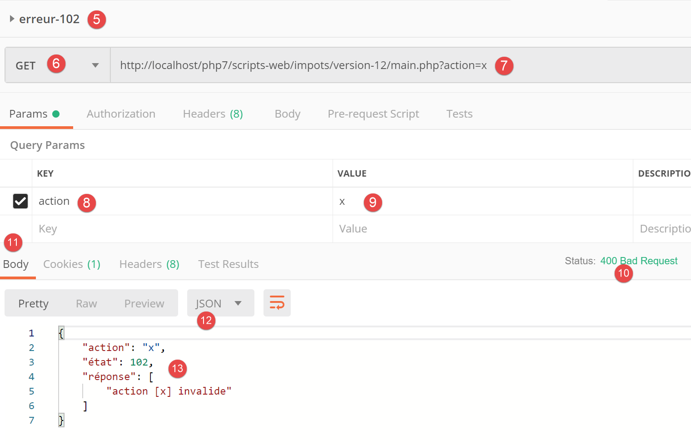
أعلاه:
- في [5-9]، طلب مع معلمة [action] غير صالحة؛
- في [10-13]، استجابة JSON؛

أعلاه:
- في [14-19]، إجراء تم التعرف عليه ولكن لم يتم تحديد النوع (json، xml، html) بعد؛
- في [20-23]، استجابة JSON من الخادم؛
23.10. وحدات التحكم الثانوية
يتم تنفيذ كل إجراء بواسطة أحد وحدات التحكم الموجودة في مجلد [Controllers]:


في البنية العامة للتطبيق أعلاه، توجد وحدات التحكم الثانوية في [2a].
تنفذ كل وحدة تحكم واجهة [InterfaceController] التالية:
<?php
namespace Application;
// symfony dependencies
use Symfony\Component\HttpFoundation\Request;
use Symfony\Component\HttpFoundation\Session\Session;
interface InterfaceController {
// $config is the application configuration
// traitement d'une requête Request
// session and can modify it
// $infos is additional information specific to each controller
// renders an array [$statusCode, $état, $content, $headers]
public function execute(
array $config,
Request $request,
Session $session,
array $infos=NULL): array;
}
تعليقات
- يتم تنفيذ جميع وحدات التحكم الثانوية عبر طريقة [execute] في السطر 17. نمرر المعلومات المعروفة من وحدة التحكم الرئيسية إلى هذه الطريقة:
- السطر 18: [array $config]، الذي يغلف تكوين التطبيق؛
- السطر 19: [Request $request]، وهو طلب HTTP الذي يتم معالجته حاليًا؛
- السطر 20: [Session $session]، وهي الجلسة الحالية لتطبيق الويب؛
- السطر 21: [array $infos=NULL]، وهو مصفوفة إضافية من المعلومات لوحدة التحكم في حالة عدم كفاية المعلمات الثلاثة الأولى للطريقة. في هذا التطبيق، لم يتم استخدام هذه المعلمة مطلقًا. تم تضمينها كإجراء احترازي؛
- السطر 21: تُرجع الطريقة [execute] المصفوفة [$statusCode, $status, $content, $headers]
- [int $statusCode]: رمز حالة استجابة HTTP؛
- [int $state]: حالة التطبيق في نهاية التنفيذ؛
- [array $content]: مصفوفة ترابطية [response=>result] حيث [result] من أي نوع: هذه هي النتيجة التي أنتجتها وحدة التحكم وسيتم إرسالها إلى العميل بمجرد تسلسلها كسلسلة؛
- [array $headers]: قائمة رؤوس HTTP التي سيتم تضمينها في استجابة HTTP للخادم؛
يتم استدعاء كل وحدة تحكم ثانوية بواسطة الكود التالي في وحدة التحكم الرئيسية:
// on exécute l'action à l'aide de son contrôleur
$controller = __NAMESPACE__ . $config["actions"][$action];
list($statusCode, $état, $content, $headers) = (new $controller())->execute($config, $request, $session);
في السطر 3، نلاحظ أن المعلمة الرابعة [array $infos=NULL] لطريقة [execute] غير مستخدمة.
23.11. الإجراءات
سنستعرض الآن الإجراءات المختلفة الممكنة لخدمة الويب:
الإجراء | الدور | سياق التنفيذ |
init-session | يُستخدم لتعيين نوع (json، xml، html) الاستجابات المطلوبة | طلب GET main.php?action=init-session&type=x يمكن إرساله في أي وقت |
authenticate-user | يوافق على تسجيل دخول المستخدم أو يرفضه | طلب POST main.php?action=authenticate-user يجب أن يحتوي الطلب على معلمتين مرسلتين [user, password] لا يمكن إصداره إلا إذا كان نوع الجلسة (json، xml، html) معروفًا |
حساب الضريبة | يقوم بمحاكاة حساب الضريبة | طلب POST إلى main.php?action=calculate-tax يجب أن يحتوي الطلب على ثلاثة معلمات مرسلة [married، children، salary] لا يمكن إصداره إلا إذا كان نوع الجلسة (json، xml، html) معروفًا وتم مصادقة المستخدم |
list-simulations | طلب لعرض قائمة المحاكاة التي تم إجراؤها منذ بداية الجلسة | طلب GET main.php?action=list-simulations لا يقبل الطلب أي معلمات أخرى لا يمكن إصداره إلا إذا كان نوع الجلسة (json، xml، html) معروفًا وتم توثيق المستخدم |
delete-simulation | يحذف محاكاة من قائمة المحاكاة | طلب GET main.php?action=list-simulations&number=x لا يقبل الطلب أي معلمات أخرى لا يمكن إصداره إلا إذا كان نوع الجلسة (json، xml، html) معروفًا وتم توثيق المستخدم |
إنهاء الجلسة | ينهي جلسة المحاكاة. | من الناحية الفنية، يتم حذف جلسة الويب القديمة وإنشاء جلسة جديدة لا يمكن إصداره إلا إذا كان نوع الجلسة (json، xml، html) معروفًا وتم توثيق المستخدم |
تعمل جميع وحدات التحكم الثانوية بنفس الطريقة:
- تتحقق من معلماتها. توجد هذه المعلمات في كائن [Request→query] بالنسبة للمعلمات الموجودة في عنوان URL وفي كائن [Request→request] بالنسبة لتلك التي يتم إرسالها (طلب POST)؛
- يشبه وحدة التحكم دالة أو طريقة تتحقق من صحة معلماتها. لكن الأمر أكثر تعقيدًا بالنسبة لوحدة التحكم:
- قد تكون المعلمات المتوقعة مفقودة؛
- المعلمات المتوقعة كلها سلاسل، في حين أن الدالة يمكنها تحديد نوع معلماتها. إذا كانت المعلمة المتوقعة رقمًا، فيجب عليك التحقق من أن سلسلة المعلمة هي بالفعل رقم؛
- بمجرد التحقق من وجود المعلمات المتوقعة وصحة صياغتها، يجب عليك التحقق من صحتها في سياق التنفيذ الحالي. هذا السياق موجود في الجلسة. مثال المصادقة هو مثال على سياق التنفيذ. يجب معالجة بعض الإجراءات فقط بعد مصادقة العميل. بشكل عام، يشير مفتاح في الجلسة إلى ما إذا كانت هذه المصادقة قد تمت أم لا؛
- بمجرد اكتمال الفحوصات السابقة، يمكن للوحدة التحكم الثانوية المضي قدمًا. عملية التحقق من المعلمات هذه مهمة جدًا. لا يمكننا قبول أن يرسل لنا العميل بيانات عشوائية في أي مرحلة من مراحل دورة حياة التطبيق. يجب أن نحافظ على السيطرة الكاملة على دورة حياة التطبيق؛
- بمجرد انتهاء عملها، تعيد وحدة التحكم الثانوية المصفوفة [$statusCode, $state, $content, $headers] التي تتوقعها وحدة التحكم الرئيسية التي استدعتها؛
سنستعرض الآن الوحدات المتحكم المختلفة — أو بعبارة أخرى، الإجراءات المختلفة التي تحرك دورة حياة تطبيق الويب.
23.11.1. الإجراء [init-session]
يتم التعامل مع الإجراء [init-session] بواسطة [InitSessionController] التالي:
<?php
namespace Application;
// symfony dependencies
use Symfony\Component\HttpFoundation\Request;
use Symfony\Component\HttpFoundation\Response;
use Symfony\Component\HttpFoundation\Session\Session;
class InitSessionController implements InterfaceController {
// $config is the application configuration
// traitement d'une requête Request
// session and can modify it
// $infos is additional information specific to each controller
// renders an array [$statusCode, $état, $content, $headers]
public function execute(
array $config,
Request $request,
Session $session,
array $infos = NULL): array {
// you must have a GET and a single parameter other than [action]
$method = strtolower($request->getMethod());
$erreur = $method !== "get" || $request->query->count() != 2;
if ($erreur) {
$état = 701;
$message = "méthode GET exigée avec paramètres [action, type] dans l'URL";
return [Response::HTTP_BAD_REQUEST, $état, ["réponse" => $message], []];
}
// retrieve the GET parameters
$erreur = FALSE;
// type
if (!$request->query->has("type")) {
$erreur = TRUE;
$état = 702;
$message = "paramètre [type] manquant";
} else {
$type = strtolower($request->query->get("type"));
}
// type verification
if (!$erreur && !array_key_exists($type, $config["types"])) {
$erreur = TRUE;
$état = 703;
$message = "paramètre type [$type] invalide";
}
// mistake?
if ($erreur) {
return [Response::HTTP_BAD_REQUEST, $état, ["réponse" => $message], []];
}
// put the session type in the session
$session->set("type", $type);
// message of success
$message = "session démarrée avec type [$type]";
$état = 700;
return [Response::HTTP_OK, $état, ["réponse" => $message], []];
}
}
تعليقات
- نتوقع طلب [GET main.php?action=init-session&type=xxx]
- السطور 25-26: نتحقق من أن الطلب هو طلب GET مع معلمتين في عنوان URL؛
- الأسطر 27–31: إذا لم يكن الأمر كذلك، نسجل الخطأ ونرسل استجابة [$statusCode, $status, $content, $headers] إلى وحدة التحكم الرئيسية؛
- الأسطر 35-39: نتحقق من وجود المعلمة [type] في عنوان URL. إذا لم يكن الأمر كذلك، نقوم بتسجيل الخطأ؛
- السطر 40: تسجيل نوع الجلسة؛
- الأسطر 43–47: نتحقق من أن نوع الجلسة هو أحد المصطلحات (json، xml، html). إذا لم يكن كذلك، نسجل الخطأ؛
- الأسطر 49-51: في حالة حدوث خطأ، يتم إرسال نتيجة [$statusCode، $status، $content، $headers] إلى وحدة التحكم الرئيسية؛
- السطر 53: يتم تخزين نوع الجلسة في جلسة تطبيق الويب؛
- الأسطر 55–57: انتهت وحدة التحكم من عملها. يتم إرسال استجابة نجاح [$statusCode، $status، $content، $headers] إلى وحدة التحكم الرئيسية؛
دعونا نستعرض ما تفعله وحدة التحكم الرئيسية بالاستجابات الواردة من وحدات التحكم الثانوية:
// erreurs ?
if ($erreurs) {
// on prépare la réponse sans l'envoyer
$statusCode = Response::HTTP_BAD_REQUEST;
$content = ["réponse" => $erreurs];
$headers = [];
} else {
// ---------------------------
// on exécute l'action à l'aide de son contrôleur
$controller = __NAMESPACE__ . $config["actions"][$action];
$logger->write("contrôleur : $controller\n");
list($statusCode, $état, $content, $headers) = (new $controller())->execute($config, $request, $session);
}
// --------------------- on envoie la réponse
// cas de l'erreur fatale HTTP_INTERNAL_SERVER_ERROR
// on envoie un mail à l'administrateur si on peut
if ($statusCode === Response::HTTP_INTERNAL_SERVER_ERROR && $config['adminMail'] != NULL) {
$infosMail = $config['adminMail'];
$infosMail['message'] = json_encode($content, JSON_UNESCAPED_UNICODE);
$sendAdminMail = new SendAdminMail($infosMail, $logger);
$sendAdminMail->send();
}
// la réponse dépend du type de la session
if ($session->has("type")) {
// le type de session est dans la session
$type = $session->get("type");
} else {
// si pas de type dans session, alors par défaut ce sera une réponse en jSON
$type = "json";
}
// on ajoute les clés [action, état] à la réponse du contrôleur
$content = ["action" => $action, "état" => $état] + $content;
// on instancie l'objet [Response] chargée d'envoyer la réponse au client
$response = __NAMESPACE__ . $config["types"][$type]["response"];
(new $response())->send($request, $session, $config, $statusCode, $content, $headers, $logger);
// la réponse a été envoyée - on libère les ressources
$logger->close();
exit;
- السطر 12: يسترد وحدة التحكم الرئيسية النتيجة من وحدة التحكم الثانوية؛
- السطران 35-36: بعد إجراء بعض الفحوصات، ترسل الاستجابة عن طريق إنشاء مثيل لإحدى الفئات [JsonResponse، XmlResponse، HtmlResponse] اعتمادًا على نوع (json، xml، html) الجلسة الحالية؛
بعد ذلك، سنجري اختبارات [Postman] كجزء من جلسة محاكاة باستخدام النوع [json]. تم عرض وظائف فئة [JsonResponse] في القسم المرتبط.
23.11.2. اختبارات [Postman]

أعلاه:
- في [2]، ثلاثة اختبارات جديدة؛
- في [3-7]، إجراء [init-session] مع فقدان المعلمة [type]؛
- في [8-11]، استجابة JSON للخادم؛

أعلاه:
- في [1-7]، الإجراء [init-session] مع معلمة [type] غير صحيحة؛
- في [8-11]، استجابة JSON من الخادم؛
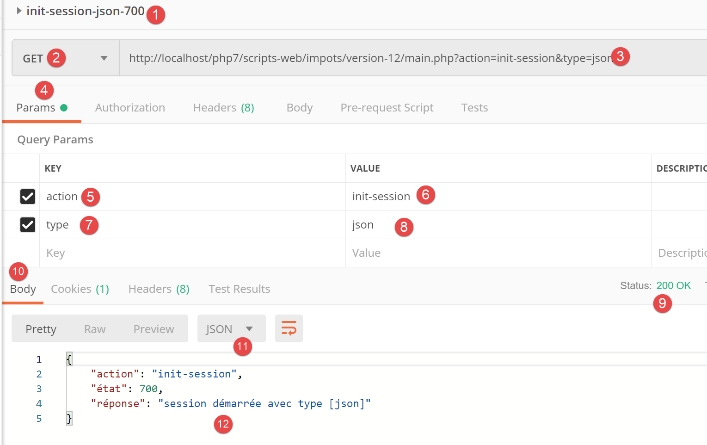
أعلاه:
- في [1-8]، الإجراء [init-session] بنوع JSON؛
- في [9-12]، استجابة JSON من الخادم؛
23.11.3. إجراء [authenticate-user]
يتم تنفيذ الإجراء [authenticate-user] بواسطة وحدة التحكم [AuthentifierUtilisateurController] التالية:
<?php
namespace Application;
// symfony dependencies
use \Symfony\Component\HttpFoundation\Response;
use \Symfony\Component\HttpFoundation\Request;
use \Symfony\Component\HttpFoundation\Session\Session;
class AuthentifierUtilisateurController implements InterfaceController {
// $config is the application configuration
// traitement d'une requête Request
// session and can modify it
// $infos is additional information specific to each controller
// renders an array [$statusCode, $état, $content, $headers]
public function execute(
array $config,
Request $request,
Session $session,
array $infos = NULL): array {
// you must have a POST and a single GET parameter
$method = strtolower($request->getMethod());
$erreur = $method !== "post" || $request->query->count() != 1;
if ($erreur) {
$état = 201;
$message = "méthode POST requise, paramètre [action] dans l'URL, paramètres postés [user,password]";
// return the result to the main controller
return [Response::HTTP_BAD_REQUEST, $état, ["réponse" => $message], []];
}
// retrieve POST parameters
$erreurs = [];
// user
$état = 210;
if (!$request->request->has("user")) {
$état += 2;
$erreurs[] = "paramètre [user] manquant";
} else {
$user = $request->request->get("user");
}
// password
if (!$request->request->has("password")) {
$état += 4;
$erreurs[] = "paramètre [password] manquant";
} else {
$password = trim($request->request->get("password"));
}
// mistake?
if ($erreurs) {
// return the result to the main controller
return [Response::HTTP_BAD_REQUEST, $état, ["réponse" => $erreurs], []];
}
// verification of user credentials
// does the user exist?
$users = $config["users"];
$i = 0;
$trouvé = FALSE;
while (!$trouvé && $i < count($users)) {
$trouvé = ($user === $users[$i]["login"] && $users[$i]["passwd"] === $password);
$i++;
}
// found?
if (!$trouvé) {
// error message
$message = "Echec de l'authentification [$user, $password]";
$état = 221;
// return the result to the main controller
return [Response::HTTP_UNAUTHORIZED, $état, ["réponse" => $message], []];
} else {
// we note in the session that we have authenticated the user
$session->set("user", TRUE);
// message of success
$message = "Authentification réussie [$user, $password]";
$état = 200;
// return the result to the main controller
return [Response::HTTP_OK, $état, ["réponse" => $message], []];
}
}
}
تعليقات
- نتوقع طلب [POST main.php?action=authentifier-utilisateur] مع معلمتين [user, password]؛
- السطور 24–25: نتحقق من وجود طلب POST بمعلمة واحدة في عنوان URL؛
- الأسطر 26–31: إذا كان هناك خطأ، نقوم بتسجيله وإرجاع نتيجة [$statusCode, $status, $content, $headers] إلى وحدة التحكم الرئيسية؛
- الأسطر 36–39: نتحقق من وجود المعلمة [user] في القيم المرسلة. إذا لم تكن موجودة، نقوم بتسجيل الخطأ؛
- الأسطر 43-45: نتحقق من وجود المعلمة [password] في القيم المرسلة. إذا لم تكن موجودة، نسجل الخطأ؛
- الأسطر 50–53: إذا كانت أي من القيم المنشورة مفقودة، يتم إرجاع نتيجة [$statusCode, $status, $content, $headers] إلى وحدة التحكم الرئيسية؛
- الأسطر 56–62: نتحقق من وجود الزوج [$user,$password] المسترد في المصفوفة [$config[‘users’]] في ملف التكوين؛
- الأسطر 64–69: إذا لم يكن الأمر كذلك، يتم تسجيل الخطأ. يتم تعيين رمز حالة HTTP إلى [Response::HTTP_UNAUTHORIZED] ويتم إرجاع النتيجة [$statusCode, $status, $content, $headers] إلى وحدة التحكم الرئيسية؛
- السطر 72: تمت المصادقة بنجاح. يتم تسجيل ذلك في الجلسة عن طريق تعيين المفتاح [user]. يشير وجود هذا المفتاح إلى نجاح المصادقة؛
- الأسطر 73–77: يتم إرجاع نتيجة النجاح [$statusCode, $status, $content, $headers] إلى وحدة التحكم الرئيسية؛
23.11.4. اختبارات [Postman]
نجري اختبارات [Postman] على وحدة التحكم [AuthentifierUtilisateurController] في وضع JSON؛

أعلاه:
- في [1-6]، الإجراء [authenticate-user] باستخدام GET [2]، في حين أن المطلوب هو POST؛
- في [7-10]، استجابة JSON من الخادم؛
دعونا نستبدل GET بـ POST [2] دون تضمين أي معلمات في نص الاستجابة [7]:

أعلاه:
- في [1-7]، طلب POST بدون معلمات تم إرساله في [7]؛
- في [8-11]، استجابة JSON من الخادم؛
والآن دعونا نضيف معلمة [password] إلى نص الطلب [4]:

أعلاه:
- في [1-6]، طلب POST [2] مع معلمة [password] تم إرسالها [4-6]. يجب إضافة المعلمات المرسلة إلى نص الطلب [4]. هناك عدة طرق لإرسال القيم إلى الخادم. نختار طريقة [x-www-form-urlencoded] [5]؛
- في [8-10]، استجابة JSON من الخادم؛
الآن دعونا نحدد المعلمة [user] بدون المعلمة [password]:
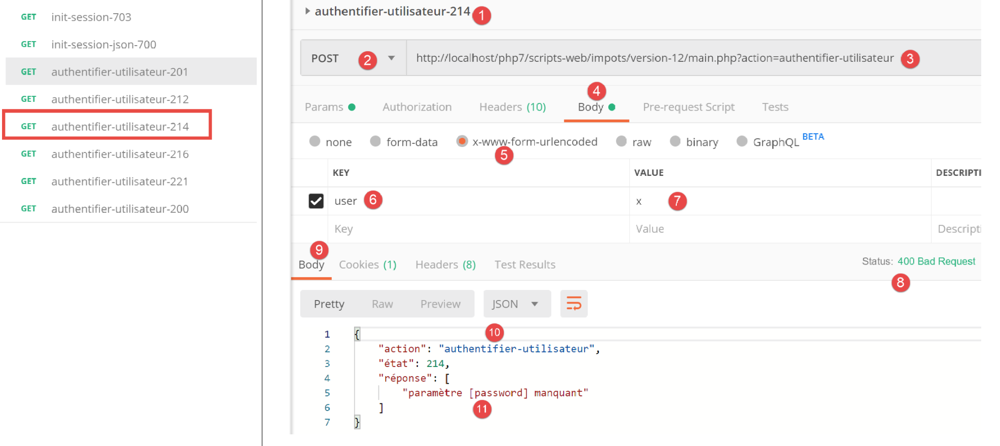
أعلاه:
- في [1-7]، طلب POST بدون المعلمة [password] [4-7]؛
- في [8-11]، استجابة JSON من الخادم؛
الآن دعونا نحدد المعلمتين [user، password] ولكن بقيم تؤدي إلى فشل المصادقة:

أعلاه:
- في [1-9]، طلب POST بمعلمات [user, password] غير صحيحة؛
- في [10-13]، استجابة JSON من الخادم. لاحظ رمز الحالة [401 غير مصرح به] [10] في الاستجابة؛
الآن طلب POST مع بيانات اعتماد صالحة:

أعلاه:
- في [1-9]، طلب POST [2] مع بيانات اعتماد صالحة [6-9]؛
- في [10-13]، استجابة JSON من الخادم. لاحظ رمز حالة HTTP [200 OK] في [10]؛
23.11.5. إجراء [calculate-tax]
يتم التعامل مع الإجراء [calculer-impot] بواسطة وحدة التحكم [CalculerImpotController] التالية:
<?php
namespace Application;
// symfony dependencies
use \Symfony\Component\HttpFoundation\Response;
use \Symfony\Component\HttpFoundation\Request;
use \Symfony\Component\HttpFoundation\Session\Session;
// layer alias [dao]
use \Application\ServerDaoWithSession as ServerDaoWithRedis;
class CalculerImpotController implements InterfaceController {
// $config is the application configuration
// traitement d'une requête Request
// session and can modify it
// $infos is additional information specific to each controller
// renders an array [$statusCode, $état, $content, $headers]
public function execute(
array $config,
Request $request,
Session $session,
array $infos = NULL): array {
// you must have one GET parameter and three POST parameters
$method = strtolower($request->getMethod());
$erreur = $method !== "post" || $request->query->count() != 1;
if ($erreur) {
// we note the error
$message = "il faut utiliser la méthode [post] avec [action] dans l'URL et les paramètres postés [marié, enfants, salaire]";
$état = 301;
// return result to main controller
return [Response::HTTP_BAD_REQUEST, $état, ["réponse" => $message], []];
}
// retrieve POST parameters
$erreurs = [];
$état = 310;
// marital status
if (!$request->request->has("marié")) {
$état += 2;
$erreurs[] = "paramètre [marié] manquant";
} else {
$marié = trim(strtolower($request->request->get("marié")));
$erreur = $marié !== "oui" && $marié !== "non";
if ($erreur) {
$état += 4;
$erreurs[] = "valeur [$marié] invalide pour le paramètre [marié]";
}
}
// the number of children
if (!$request->request->has("enfants")) {
$état += 8;
$erreurs[] = "paramètre [enfants] manquant";
} else {
$enfants = trim($request->request->get("enfants"));
$erreur = !preg_match("/^\d+$/", $enfants);
if ($erreur) {
$état += 9;
$erreurs[] = "valeur [$enfants] invalide pour le paramètre [enfants]";
}
}
// we recover the annual salary
if (!$request->request->has("salaire")) {
$erreurs[] = "paramètre [salaire] manquant";
$état += 16;
} else {
$salaire = trim($request->request->get("salaire"));
$erreur = !preg_match("/^\d+$/", $salaire);
if ($erreur) {
$état += 17;
$erreurs[] = "valeur [$salaire] invalide pour le paramètre [salaire]";
}
}
// mistake?
if ($erreurs) {
// return result to main controller
return [Response::HTTP_BAD_REQUEST, $état, ["réponse" => $erreurs], []];
}
// we have everything you need to work
// Redis
\Predis\Autoloader::register();
try {
// customer [predis]
$redis = new \Predis\Client();
// connect to the server to see if it's there
$redis->connect();
} catch (\Predis\Connection\ConnectionException $ex) {
// it didn't go well
// return result with error to main controller
$état = 350;
return [Response::HTTP_INTERNAL_SERVER_ERROR, $état,
["réponse" => "[redis], " . utf8_encode($ex->getMessage())], []];
}
// we have valid parameters
// creation of the [dao] layer
if (!$redis->get("taxAdminData")) {
try {
// retrieve tax data from the database
$dao = new ServerDaoWithRedis($config["databaseFilename"], NULL);
// put the recovered data into redis
$redis->set("taxAdminData", $dao->getTaxAdminData());
} catch (\RuntimeException $ex) {
// it didn't go well
// return result with error to main controller
$état = 340;
return [Response::HTTP_INTERNAL_SERVER_ERROR, $état,
["réponse" => utf8_encode($ex->getMessage())], []];
}
} else {
// tax data are taken from the [application] scope memory
$arrayOfAttributes = \json_decode($redis->get("taxAdminData"), true);
$taxAdminData = (new TaxAdminData())->setFromArrayOfAttributes($arrayOfAttributes);
// istanciation of the [dao] layer
$dao = new ServerDaoWithRedis(NULL, $taxAdminData);
}
// creation of the [business] layer
$métier = new ServerMetier($dao);
// we have everything we need to work - tax calculation
$résultat = $métier->calculerImpot($marié, (int) $enfants, (int) $salaire);
// we add the simulation just run to the session
$simulation = new Simulation();
$résultat = ["marié" => $marié, "enfants" => $enfants, "salaire" => $salaire] + $résultat;
$simulation->setFromArrayOfAttributes($résultat);
// is there a list of in-session simulations?
if (!$session->has("simulations")) {
$simulations = [];
} else {
$simulations = $session->get("simulations");
}
// add simulation to simulation list
$simulations[] = $simulation;
// simulations are put back into session
$session->set("simulations", $simulations);
// return result to main controller
$état = 300;
return [Response::HTTP_OK, $état, ["réponse" => $résultat], []];
}
}
تعليقات
- الطلب المتوقع هو [POST main.php?action=calculate-tax] مع ثلاثة معلمات مرسلة [married, children, salary]:
- يجب أن تكون [married] إما [yes] أو [no]؛
- يجب أن تكون [children، salary] أعدادًا صحيحة موجبة أو صفرًا؛
- السطور 26–27: نتحقق من وجود طلب POST مع معلمة واحدة في عنوان URL؛
- الأسطر 28–34: إذا لم يكن الأمر كذلك، يتم إرسال نتيجة خطأ إلى وحدة التحكم الرئيسية؛
- السطر 36: سنقوم بتجميع رسائل الخطأ في المصفوفة [$errors]؛
- الأسطر 39-41: نتحقق من وجود المعلمة [متزوج]. إذا لم تكن موجودة، يتم تسجيل الخطأ؛
- الأسطر 43-49: نتحقق من أن [married] لها قيمة في [yes، no]. إذا لم يكن الأمر كذلك، يتم تسجيل الخطأ؛
- الأسطر 51-54: نتحقق من وجود المعلمة [children]. إذا لم تكن موجودة، يتم تسجيل خطأ؛
- الأسطر 55–61: نتحقق من أن قيمة المعلمة [children] هي عدد موجب أو صفر. إذا لم يكن الأمر كذلك، يتم تسجيل خطأ؛
- الأسطر 63–66: نتحقق من وجود المعلمة [الراتب]. إذا لم تكن موجودة، يتم تسجيل خطأ؛
- الأسطر 67–72: نتحقق من أن قيمة المعلمة [salary] هي عدد موجب أو صفر. إذا لم يكن الأمر كذلك، يتم تسجيل خطأ؛
- الأسطر 75-78: إذا لم يكن المصفوف [$errors] فارغًا، فهذا يعني حدوث أخطاء. نقوم بتضمين مصفوفة الأخطاء في الاستجابة وإرجاع النتيجة إلى وحدة التحكم الرئيسية؛
- السطر 80: لدينا معلمات صالحة. يمكننا حساب الضريبة. للقيام بذلك، نحتاج إلى إنشاء طبقات [dao] و[business] التي تعرف كيفية إجراء هذا الحساب؛
- الأسطر 82-94: نقوم بإنشاء عميل [Redis]؛
- الأسطر 88–94: إذا لم نتمكن من الاتصال بخادم [Redis]، نرسل رمز [500 Internal Server Error] إلى العميل؛
- السطر 98: نتحقق مما إذا كان خادم [Redis] يحتوي على المفتاح [taxAdminData]. يمثل هذا المفتاح بيانات إدارة الضرائب. إذا لم يكن المفتاح موجودًا، فيجب استرداد بيانات الضرائب من قاعدة البيانات؛
- السطر 101: إنشاء طبقة [dao] عندما يتعين استرداد البيانات الضريبية من قاعدة البيانات. تم وصف فئة [ServerDaoWithRedis] في القسم المرتبط؛
- السطر 103: يتم تخزين البيانات المسترجعة من قاعدة البيانات في [Redis] باستخدام المفتاح [taxAdminData]؛
- الأسطر 104-110: إذا فشل استعلام قاعدة البيانات، يتم تسجيل الخطأ الذي أرجعته طبقة [dao] وإدراجه في النتيجة المرسلة إلى وحدة التحكم الرئيسية؛
- السطر 109: يتم ترميز رسالة الخطأ التي ترجعها طبقة [PDO] بترميز [iso-8859-1]. يتم ترميزها بترميز [utf-8]؛
- الأسطر 111–117: إذا كان المفتاح [taxAdminData] موجودًا في مخزن [Redis]، يتم تمرير بيانات الضرائب مباشرةً إلى مُنشئ طبقة [DAO]؛
- السطر 119: يتم إنشاء طبقة [business]. وقد تم وصف فئة [ServerMetier] في قسم الروابط؛
- الأسطر 124–126: باستخدام مبلغ الضريبة المحسوب، يتم إنشاء كائن [Simulation]. تغلف فئة [Simulation] بيانات المحاكاة وقد تم وصفها في قسم الروابط؛
- الأسطر 128–132: يجب إضافة المحاكاة التي تم إنشاؤها للتو إلى قائمة المحاكاة التي تم حسابها بالفعل. توجد هذه القائمة في الجلسة ما لم يتم إجراء أي محاكاة بعد؛
- الأسطر 133–136: تتم إضافة المحاكاة إلى قائمة المحاكاة، ويتم إرجاع القائمة إلى الجلسة؛
- الأسطر 137–139: يتم إرجاع النتيجة إلى وحدة التحكم الرئيسية؛
23.11.6. اختبارات [Postman]
نجري اختبارات [Postman] على وحدة التحكم [CalculerImpotController] في وضع JSON؛

أعلاه:
- في [1-7]، نقوم بإرسال طلب [GET] بدلاً من طلب [POST]؛
- في [8-11]، استجابة JSON من الخادم؛
الآن، دعونا نستخدم طريقة [POST]، مع أو بدون معلمات مرسلة، وكذلك مع معلمات مرسلة غير صالحة:

أعلاه:
- نقوم بإرسال طلب [POST] [2] مع معلمات منشورة غير صالحة [6-11] [married, children, salary]. يمكنك حذف إحدى هذه المعلمات عن طريق إلغاء تحديد المربع الخاص بها في [16]. سيسمح لك ذلك باختبار سيناريوهات مختلفة. في لقطة الشاشة أعلاه، توجد المعلمات الثلاث جميعها وجميعها غير صالحة؛
- في [12-15]، استجابة JSON من الخادم؛
الآن دعونا نلغي تحديد اثنين من المعلمات الثلاثة المرسلة:

أعلاه،
- في [5-8]، يتم إرسال المعلمة [salary] فقط، علاوة على ذلك، فهي غير صالحة؛
- في [9-11]، نتيجة JSON من الخادم؛
الآن دعونا نجري حساب الضريبة باستخدام معلمات صالحة:

أعلاه:
- في [11-18]، طلب بمعلمات صالحة [6-8]؛
- في [12-14]، استجابة JSON من الخادم؛
23.11.7. إجراء [lister-simulations]
يتم التعامل مع الإجراء [lister-simulations] بواسطة وحدة التحكم الثانوية التالية [ListerSimulationsController]:
<?php
namespace Application;
// symfony dependencies
use \Symfony\Component\HttpFoundation\Response;
use \Symfony\Component\HttpFoundation\Request;
use \Symfony\Component\HttpFoundation\Session\Session;
class ListerSimulationsController {
// $config is the application configuration
// traitement d'une requête Request
// useful session and can modify it
// $infos is additional information specific to each controller
// renders an array [$statusCode, $état, $content, $headers]
public function execute(
array $config,
Request $request,
Session $session,
array $infos = NULL): array {
// you must have a single parameter GET
$method = strtolower($request->getMethod());
$erreur = $method !== "get" || $request->query->count() != 1;
if ($erreur) {
$état = 501;
$message = "GET requis, avec l'unique paramètre [action] dans l'URL";
// return an error result to the main controller
return [Response::HTTP_BAD_REQUEST, $état, ["réponse" => $message], []];
}
// retrieve the list of simulations in the session
if (!$session->has("simulations")) {
$simulations = [];
} else {
$simulations = $session->get("simulations");
}
// a successful result is returned to the main controller
$état = 500;
return [Response::HTTP_OK, $état, ["réponse" => $simulations], []];
}
}
تعليقات
- request [GET main.php?action=list-simulations];
- السطران 24-25: نتحقق من وجود طلب GET بمعلمة واحدة؛
- الأسطر 26–31: إذا لم يكن الأمر كذلك، يتم إرجاع نتيجة خطأ إلى وحدة التحكم الرئيسية؛
- الأسطر 33-37: استرداد قائمة المحاكاة من الجلسة إذا كانت موجودة (السطر 36)، وإلا تكون القائمة فارغة (السطر 34)؛
- السطران 39-40: إرجاع قائمة المحاكاة إلى وحدة التحكم الرئيسية؛
23.11.8. الاختبارات [Postman]
سننشئ اختبارين، أحدهما للخطأ والآخر للنجاح.

أعلاه:
- في [1-8]، نقوم بإرسال طلب [GET] مع معلمة إضافية [param1] في عنوان URL [3، 7-8]؛
- في [9-12]، استجابة JSON من الخادم؛
الآن دعونا نرسل طلبًا صالحًا:

أعلاه:
- في [1-5]، طلب صالح؛
نتيجة الطلب هي كما يلي:

- في [3-6]، استجابة JSON من الخادم. قبل هذا الاختبار، تم تشغيل اختبار [Postman] [calculate-tax-300] عدة مرات لإنشاء محاكاة في جلسة الويب الخاصة بالخادم؛
23.11.9. إجراء [delete-simulation]
يتم التعامل مع الإجراء [delete-simulation] بواسطة وحدة التحكم الثانوية التالية [DeleteSessionController]:
<?php
namespace Application;
// symfony dependencies
use \Symfony\Component\HttpFoundation\Response;
use \Symfony\Component\HttpFoundation\Request;
use \Symfony\Component\HttpFoundation\Session\Session;
class SupprimerSimulationController {
/// $config is the application configuration
// traitement d'une requête Request
// useful session and can modify it
// $infos is additional information specific to each controller
// renders an array [$statusCode, $état, $content, $headers]
public function execute(
array $config,
Request $request,
Session $session,
array $infos = NULL): array {
// you must have two GET parameters
$method = strtolower($request->getMethod());
$erreur = $method !== "get" || $request->query->count() != 2;
$état = 600;
if ($erreur) {
$état += 2;
$message = "GET requis, avec les paramètres [action, numéro]";
}
// parameter [number] must exist
if (!$erreur) {
$état += 4;
$erreur = !$request->query->has("numéro");
if ($erreur) {
$message = "paramètre [numéro] manquant";
}
}
// parameter [number] must be valid
if (!$erreur) {
$état += 8;
$numéro = $request->query->get("numéro");
$erreur = !preg_match("/^\d+$/", $numéro);
if ($erreur) {
$message = "paramètre [$numéro] invalide";
}
}
// parameter [number] must be in the range [0,n-1]
// if n is the number of simulations
if (!$erreur) {
$numéro = (int) $numéro;
$erreur = !$session->has("simulations");
if (!$erreur) {
$simulations = $session->get("simulations");
$erreur = $numéro < 0 || $numéro >= count($simulations);
}
if ($erreur) {
$état += 16;
$message = "la simulation n° [$numéro] n'existe pas";
}
}
// mistake?
if ($erreur) {
// return the result to the main controller
return [Response::HTTP_BAD_REQUEST, $état, ["réponse" => $message], []];
}
// delete the $numéro simulation
unset($simulations[$numéro]);
$simulations = array_values($simulations);
// put the simulations back in the session
$session->set("simulations", $simulations);
// we return the list of simulations to the customer
$état = 600;
return [Response::HTTP_OK, $état, ["réponse" => $simulations], []];
}
}
تعليقات
- request [GET main.php?action=delete-simulation&number=x];
- الأسطر 24–30: نتحقق من وجود طلب GET مع معلمتين؛
- الأسطر 32–38: نتحقق من وجود المعلمة [number] في معلمات عنوان URL؛
- الأسطر 40-47: نتحقق من أن قيمة المعلمة [number] صحيحة من الناحية النحوية؛
- الأسطر 50–61: نتحقق من أن المحاكاة #[number] موجودة بالفعل. هناك حالتان للخطأ:
- لا يمكن العثور على قائمة المحاكاة في الجلسة (السطر 52)؛
- رقم المحاكاة [number] المراد حذفه غير موجود في قائمة المحاكاة؛
- الأسطر 63-66: في حالة حدوث خطأ، يتم إرجاع نتيجة الخطأ إلى وحدة التحكم الرئيسية؛
- السطر 68: يتم حذف المحاكاة #[number]؛
- السطر 69: لا تغير عملية [unset] مؤشرات [0، n-1] في القائمة. لتحديثها، نسترد القيم من المصفوفة [$simulations] لإزالة المحاكاة المفقودة؛
- السطر 71: يتم إعادة إدراج المصفوفة الجديدة للمحاكاة في الجلسة؛
- السطران 73-74: يتم إرجاع قائمة المحاكاة الجديدة إلى وحدة التحكم الرئيسية؛
23.11.10. [Postman] الاختبارات
سنقوم بإجراء اختبارات النجاح والفشل:

أعلاه:
- في [1-6]، طلب GET بدون المعلمة [number]؛
- في [7-10]، استجابة JSON من الخادم؛
الآن طلب برقم غير صحيح من الناحية النحوية:

أعلاه:
- في [1-5]، طلب GET مع معلمة [رقم] غير صالحة [3، 5]؛
- في [6-9]، استجابة JSON من الخادم؛
الآن طلب برقم محاكاة غير موجود:

أعلاه:
- في [1-5]، طلب برقم محاكاة يساوي 100 غير موجود في قائمة المحاكاة؛
- في [6-9]، استجابة JSON من الخادم؛
الآن، سنقوم بإزالة المحاكاة رقم 0 من القائمة، أي المحاكاة الأولى. أولاً، دعونا نطلب هذه القائمة مرة أخرى باستخدام طلب [lister-simulations-500]:

- في [1]، يوجد حالياً محاكيتان؛
نحذف المحاكاة الأولى (رقم 0):

أعلاه:
- في [1-5]، نحذف المحاكاة رقم 0 [5]؛
- في [6-9]، استجابة JSON من الخادم. يمكننا أن نرى أن المحاكاة رقم 0 قد تمت إزالتها؛
دعونا نكرر هذه الخطوة:

أعلاه:
- في [1]، لم يعد هناك أي محاكاة متبقية في جلسة الويب الخاصة بالخادم؛
23.11.11. إجراء [end-session]
يتم التعامل مع إجراء [end-session] بواسطة وحدة التحكم الثانوية التالية [FinSessionController]:
<?php
namespace Application;
// symfony dependencies
use \Symfony\Component\HttpFoundation\Response;
use \Symfony\Component\HttpFoundation\Request;
use \Symfony\Component\HttpFoundation\Session\Session;
class FinSessionController implements InterfaceController {
// $config is the application configuration
// traitement d'une requête Request
// session and can modify it
// $infos is additional information specific to each controller
// renders an array [$statusCode, $état, $content, $headers]
public function execute(
array $config,
Request $request,
Session $session,
array $infos = NULL): array {
// you must have a single parameter GET
$method = strtolower($request->getMethod());
$erreur = $method !== "get" || $request->query->count() != 1;
// mistake?
if ($erreur) {
$état = 401;
// result to main controller
$message = "GET requis avec le seul paramètre [action] dans l'URL";
return [Response::HTTP_BAD_REQUEST, $état, ["réponse" => $message], []];
}
// memorize the session type
$type = $session->get("type");
// the current session is invalidated
$session->invalidate();
// put the type back in the new session
$session->set("type", $type);
// reply sent
$état = 400;
// result to main controller
$content = ["réponse" => "session supprimée"];
return [Response::HTTP_OK, $état, $content, []];
}
}
تعليقات
- طلب [GET main.php?action=end-session];
- الأسطر 25–33: نتحقق من أن الإجراء هو GET مع المعلمة الوحيدة [end-action]؛
- السطر 38: إبطال صلاحية الجلسة الحالية. يؤدي هذا إلى حذف البيانات المخزنة فيها وبدء جلسة جديدة؛
- السطر 36: قبل إنهاء الجلسة، نقوم بتخزين نوعها [json، xml، html]؛
- السطر 40: يتم تعيين نوع الجلسة السابقة في الجلسة الجديدة. وأخيرًا، ننتقل إلى جلسة جديدة تحتوي على المفتاح الوحيد [type]؛
- السطران 44-45: يتم إرجاع النتيجة إلى وحدة التحكم الرئيسية؛
23.11.12. الاختبارات [Postman]
سنقوم بإجراء اختبار خطأ واختبار نجاح:

أعلاه:
- في [1-5]، نطلب إنهاء الجلسة [5] باستخدام POST [2] بدلاً من GET المتوقع؛
- في [6-9]، استجابة JSON من الخادم؛
الآن، مثال على اختبار ناجح. أولاً، لنلقِ نظرة على ملف تعريف الارتباط الخاص بالجلسة الذي تم تبادله بين العميل [Postman] والخادم أثناء الاختبار الأخير الذي تم إجراؤه:

أعلاه:
- في [3]، ملف تعريف الارتباط للجلسة الذي أرسله العميل [Postman] إلى الخادم؛
الآن دعونا نلقي نظرة على رؤوس HTTP التي أرسلها الخادم في رده:

أعلاه:
- في [3-4]، لا يظهر ملف تعريف الارتباط الخاص بالجلسة في استجابة الخادم. وهذا أمر طبيعي. فالخادم يرسله مرة واحدة فقط: عند بدء جلسة ويب جديدة؛
الآن دعونا ننفذ إجراء [logout] صالحًا:

أعلاه:
- في [1-3]، إجراء [end-session] صالح؛
- في [4-7]، استجابة JSON من الخادم؛
دعونا نلقي نظرة على رؤوس HTTP المرسلة في استجابة الخادم:

- في [3]، يرسل الخادم رأس [Set-Cookie]، مما يشير إلى بدء جلسة ويب جديدة؛
23.12. أنواع استجابات الخادم
23.12.1. مقدمة
دعونا نراجع البنية العامة للتطبيق:

سنعرض أنواع الاستجابات الممكنة [3a]. وهي مجمعة في مجلد [Responses] الخاص بالمشروع:

لقد قدمنا بالفعل فئة [JsonResponse] في القسم المرتبط. وهي تنفذ واجهة [InterfaceResponse] وتمتد من فئة [ParentResponse]. وينطبق الأمر نفسه على الفئتين الأخريين، [XmlResponse] و[HtmlResponse].
دعونا نراجع تعريف واجهة [InterfaceResponse]:
<?php
namespace Application;
// symfony dependencies
use Symfony\Component\HttpFoundation\Request;
use Symfony\Component\HttpFoundation\Session\Session;
interface InterfaceResponse {
// Request $request : requête en cours de traitement
// Session $session: the web application session
// array $config: application configuration
// int statusCode: HTTP response status code
// array $content: server response
// array $headers: HTTP headers to be added to the response
// Logger $logger: the logger for writing logs
public function send(
Request $request = NULL,
Session $session = NULL,
array $config,
int $statusCode,
array $content,
array $headers,
Logger $logger = NULL): void;
}
- الأسطر 19–27: تحتوي واجهة [InterfaceResponse] على طريقة واحدة [send] لإرسال الاستجابة إلى العميل؛
- الأسطر 11–17: معنى المعلمات المختلفة لطريقة [send]؛
- الأسطر 23–25: المعلمات [$statusCode، $content، $headers] هي الاستجابة القياسية من وحدات التحكم الثانوية للتطبيق. ومع ذلك، قد تتطلب الاستجابة معلومات إضافية. لذلك، نزودها بالمعلمات الثلاثة الأولى (الأسطر 20–22)، والتي تمنحها الوصول إلى جميع المعلومات المتعلقة بالطلب والجلسة والتكوين؛
- السطر 26: يتطلب الرد [Logger] لأنه سيسجل الرد المرسل إلى العميل؛
لنراجع الآن كود فئة [ParentResponse]، وهي الفئة الأم لأنواع الاستجابة الثلاثة التي تلخص ما تشترك فيه: الإرسال الفعلي لاستجابة نصية إلى العميل:
<?php
namespace Application;
// symfony dependencies
use Symfony\Component\HttpFoundation\Response;
class ParentResponse {
// int $statusCode: HTTP response status code
// string $content: the body of the response to be sent
// depending on the case, this is a jSON, XML, HTML string
// array $headers: HTTP headers to be added to the response
public function sendResponse(
int $statusCode,
string $content,
array $headers): void {
// preparing the server's text response
$response = new Response();
$response->setCharset("utf-8");
// status code
$response->setStatusCode($statusCode);
// headers
foreach ($headers as $text => $value) {
$response->headers->set($text, $value);
}
// we send the answer
$response->setContent($content);
$response->send();
}
}
تعليقات
- الأسطر 10–13: معنى المعلمات الثلاثة لطريقة [send]؛
- السطر 17: لاحظ أن نص الاستجابة من النوع [string] وبالتالي جاهز للإرسال (السطر 30)؛
- السطر 22: ستحتوي الاستجابة على أحرف UTF-8؛
- السطر 24: رمز حالة HTTP للاستجابة؛
- الأسطر 26-28: إضافة رؤوس HTTP التي يوفرها كود الاستدعاء؛
- الأسطر 30-31: إرسال الاستجابة إلى العميل؛
أخيرًا، دعونا نراجع كود وحدة التحكم الرئيسية التي تطلب إرسال الرد إلى العميل:
// on ajoute les clés [action, état] à la réponse du contrôleur
$content = ["action" => $action, "état" => $état] + $content;
// on instancie l'objet [Response] chargée d'envoyer la réponse au client
$response = __NAMESPACE__ . $config["types"][$type]["response"];
(new $response())->send($request, $session, $config, $statusCode, $content, $headers, $logger);
// la réponse a été envoyée - on libère les ressources
$logger->close();
exit;
- السطر 4: نحدد اسم فئة [Response] التي سيتم إنشاء مثيل لها؛
- السطر 5: نقوم بإنشاء مثيل لها وإرسال الاستجابة إلى العميل باستخدام طريقة [send($request, $session, $config, $statusCode, $content, $headers, $logger)]. نظرًا لأنها تنفذ نفس واجهة [InterfaceResponse]، فإن طرق [send] لأنواع الاستجابة المختلفة لها جميعًا نفس التوقيع؛
23.12.2. فئة [JsonResponse]
تم عرضها بالفعل في القسم المرتبط. ومع ذلك، فإننا نعيد عرض كودها هنا لتسليط الضوء بشكل أفضل على اتساق فئات الاستجابة الثلاث:
تنفذ فئة [JsonResponse] واجهة [InterfaceResponse] على النحو التالي:
<?php
namespace Application;
// symfony dependencies
use Symfony\Component\Serializer\Encoder\JsonEncode;
use Symfony\Component\Serializer\Encoder\JsonEncoder;
use Symfony\Component\Serializer\Normalizer\ObjectNormalizer;
use Symfony\Component\Serializer\Serializer;
use \Symfony\Component\HttpFoundation\Request;
use \Symfony\Component\HttpFoundation\Session\Session;
class JsonResponse extends ParentResponse implements InterfaceResponse {
// Request $request : requête en cours de traitement
// Session $session: the web application session
// array $config: application configuration
// int statusCode: HTTP response status code
// array $content: server response
// array $headers: HTTP headers to be added to the response
// Logger $logger: the logger for writing logs
public function send(
Request $request = NULL,
Session $session = NULL,
array $config,
int $statusCode,
array $content,
array $headers,
Logger $logger = NULL): void {
// symfony serializer preparation
$serializer = new Serializer(
[
// required for object serialization
new ObjectNormalizer()],
// encoder jSON
// for options, make OU between the different options
[new JsonEncoder(new JsonEncode([JsonEncode::OPTIONS => JSON_UNESCAPED_UNICODE]))]
);
// serialization jSON
$json = $serializer->serialize($content, 'json');
// headers
$headers = array_merge($headers, ["content-type" => "application/json"]);
// sending reply
parent::sendResponse($statusCode, $json, $headers);
// log
if ($logger !== NULL) {
$logger->write("réponse=$json\n");
}
}
}
تعليقات
- السطر 13: تنفذ الفئة واجهة [InterfaceResponse]؛
- السطر 13: الفئة تمتد من فئة [ParentResponse]. جميع أنواع [Response] تمتد من هذه الفئة. هذه الفئة الأم هي التي ترسل الاستجابة إلى العميل (السطر 46). ولأن هذا الكود كان مشتركًا بين جميع أنواع [Response]، فقد تم تجميعه في فئة أم؛
- الأسطر 33-40: إنشاء مثيل لمُسلسل [Symfony]، الذي سيحول استجابة الخادم [$content] إلى سلسلة JSON (السطر 42)؛
- الأسطر 34–36: المعلمة الأولى لمُنشئ [Serializer] هي مصفوفة. نضع فيها مثيلًا لفئة [ObjectNormalizer] المطلوبة لتسلسل الكائنات. في هذا التطبيق، يحدث هذا مع قائمة من المحاكاة حيث كل محاكاة هي مثيل لفئة [Simulation]؛
- السطر 39: المعلمة الثانية لمُنشئ [Serializer] هي أيضًا مصفوفة: نضع فيها جميع المُشفِّرات المستخدمة في التسلسل (XML، JSON، CSV، إلخ)؛
- السطر 39: سيكون هناك مشفر واحد فقط هنا، من النوع [JsonEncoder]. ربما كان المنشئ بدون معلمات كافياً. هنا، قمنا بتمرير معلمة [JsonEncode] إلى المنشئ، فقط لتمرير خيارات ترميز JSON؛
- السطر 39: المعلمة [JsonEncode] لمُنشئ هي مصفوفة من الخيارات. هنا نستخدم الخيار [JSON_UNESCAPED_UNICODE] لطلب عرض أحرف UTF-8 في سلسلة JSON بشكل أصلي بدلاً من "الهروب"؛
- السطر 42: يتم تسلسل نص استجابة HTTP إلى JSON باستخدام أداة التسلسل السابقة؛
- السطر 44: نضيف رأس HTTP الذي يُخبر العميل بأننا نرسل JSON؛
- السطر 46: يُطلب من الفئة الأصلية إرسال الاستجابة إلى العميل؛
- الأسطر 48-50: نقوم بتسجيل استجابة JSON؛
23.12.3. فئة [XmlResponse]
تنفذ فئة [XmlResponse] واجهة [InterfaceResponse] على النحو التالي:
<?php
namespace Application;
// symfony dependencies
use Symfony\Component\HttpFoundation\Request;
use Symfony\Component\HttpFoundation\Session\Session;
use Symfony\Component\Serializer\Encoder\JsonEncode;
use Symfony\Component\Serializer\Encoder\JsonEncoder;
use Symfony\Component\Serializer\Encoder\XmlEncoder;
use Symfony\Component\Serializer\Normalizer\ObjectNormalizer;
use Symfony\Component\Serializer\Serializer;
class XmlResponse extends ParentResponse implements InterfaceResponse {
// Request $request : requête en cours de traitement
// Session $session: the web application session
// array $config: application configuration
// int statusCode: HTTP response status code
// array $content: server response
// array $headers: HTTP headers to be added to the response
// Logger $logger: the logger for writing logs
public function send(
Request $request = NULL,
Session $session = NULL,
array $config,
int $statusCode,
array $content,
array $headers,
Logger $logger = NULL): void {
// symfony serializer preparation
$serializer = new Serializer(
// required for object serialization
[new ObjectNormalizer()],
[
// serialization XML
new XmlEncoder(
[
XmlEncoder::ROOT_NODE_NAME => 'root',
XmlEncoder::ENCODING => 'utf-8'
]
),
// serialization jSON
new JsonEncoder(new JsonEncode([JsonEncode::OPTIONS => JSON_UNESCAPED_UNICODE]))
]
);
// serialization XML
$xml = $serializer->serialize($content, 'xml');
// headers
$headers = array_merge($headers, ["content-type" => "application/xml"]);
// sending reply
parent::sendResponse($statusCode, $xml, $headers);
// log
if ($logger !== NULL) {
// log in jSON
$log = $serializer->serialize($content, 'json');
$logger->write("réponse=$log\n");
}
}
}
تعليقات
- الأسطر 34–48: إنشاء مثيل لمُسلسل Symfony. يقبل المُنشئ معلمتين من نوع المصفوفة؛
- السطر 36: المصفوفة الأولى تحتوي على مثيل من نوع [ObjectNormalizer] يُستخدم في تسلسل الكائنات؛
- الأسطر 37–47: المصفوفة الثانية تحتوي على المشفرات المستخدمة للتسلسل. يمكن تكوين أنواع مختلفة من التسلسل باستخدام نفس أداة التسلسل؛
- الأسطر 38–44: مشفر XML؛
- السطر 41: يتم تعيين جذر كود XML الذي تم إنشاؤه. سيكون على شكل <root>[علامات XML أخرى]</root>؛
- السطر 42: سيستخدم الترميز أحرف UTF-8؛
- السطر 46: مشفر JSON. سيُستخدم هذا لتسجيل الاستجابة في ملف [logs.txt]، الذي يكون بتنسيق JSON؛
- السطر 50: يتم تسلسل نص الاستجابة المرسلة إلى العميل في XML؛
- السطر 52: نضيف إلى الرؤوس المستلمة كمعلمات (السطر 30) رأس HTTP الذي يخبر العميل بأننا نرسل مستند XML؛
- السطر 54: ترسل الفئة الأصلية الاستجابة فعليًا إلى العميل؛
- الأسطر 56–60: سجل JSON للاستجابة؛
23.12.4. الاختبارات [Postman]
لقد أجرينا بالفعل جميع اختبارات الأخطاء الممكنة في JSON. لا يوجد شيء آخر يمكن القيام به في XML. نعرض مثالين على استجابات XML:

أعلاه:
- في [1-3]، طلب بدء الجلسة في XML؛
- في [4-7]، استجابة XML من الخادم؛
من الآن فصاعدًا، ستكون جميع استجابات الخادم بتنسيق XML. يمكننا إعادة استخدام جميع الطلبات التي تم استخدامها بالفعل في [Postman] دون تغييرها، وسنحصل على استجابة XML لكل منها. لنقم بإجراء مصادقة ناجحة، على سبيل المثال:

أعلاه:
- في [1-3]، طلب مصادقة صالح؛
- في [4-7]، استجابة XML من الخادم؛
23.12.5. [HtmlResponse]
عندما يكون نوع الجلسة [html]، يتم إنشاء مثيل لكائن من نوع [HtmlResponse] لإرسال الاستجابة إلى العميل. سيؤدي ذلك إلى إرسال دفق HTML إلى العميل يعتمد على رمز الحالة الذي تم إرجاعه بواسطة وحدة التحكم الثانوية التي عالجت الإجراء. يتم تعريف هذا التعيين [status=>view] في ملف التكوين [config.json] على النحو التالي:
"vues": {
"vue-authentification.php": [700, 221, 400],
"vue-calcul-impot.php": [200, 300, 341, 350, 800],
"vue-liste-simulations.php": [500, 600]
},
"vue-erreurs": "vue-erreurs.php"
يُقرأ هذا التكوين على النحو التالي: [‘اسم العرض’ => ‘الحالات المرتبطة بهذا العرض’]
- السطر 2: إذا أعاد المتحكم الثانوي حالة من المصفوفة [700, 221, 400]، فيجب عرض العرض [vue-authentification.php]؛
- السطر 3: إذا أعاد وحدة التحكم الثانوية مصفوفة [200, 300, 341, 350, 800]، فعندئذ يتم عرض العرض [tax-calculation-view.php]؛
- السطر 4: إذا أعاد المتحكم الثانوي مصفوفة [500، 600]، فعندئذ يتم عرض العرض [view-simulation-list.php]؛
- السطر 6: إذا أعاد المتحكم الثانوي قيمة غير موجودة في أي من المصفوفات السابقة، فعندئذ يتم عرض العرض [vue-erreurs.php]؛
توجد طرق العرض في مجلد [Views] الخاص بالمشروع:

فيما يلي كود فئة [HtmlResponse]:
<?php
namespace Application;
// symfony dependencies
use Symfony\Component\HttpFoundation\Request;
use Symfony\Component\HttpFoundation\Session\Session;
use Symfony\Component\Serializer\Encoder\JsonEncode;
use Symfony\Component\Serializer\Encoder\JsonEncoder;
use Symfony\Component\Serializer\Normalizer\ObjectNormalizer;
use Symfony\Component\Serializer\Serializer;
class HtmlResponse extends ParentResponse implements InterfaceResponse {
// Request $request : requête en cours de traitement
// Session $session: the web application session
// array $config: application configuration
// int statusCode: HTTP response status code
// array $content: server response
// array $headers: HTTP headers to be added to the response
// Logger $logger: the logger for writing logs
public function send(
Request $request = NULL,
Session $session = NULL,
array $config,
int $statusCode,
array $content,
array $headers,
Logger $logger = NULL): void {
// symfony serializer preparation
$serializer = new Serializer(
[
// for object serialization
new ObjectNormalizer()],
[
// for jSON serialization of the response log
new JsonEncoder(new JsonEncode([JsonEncode::OPTIONS => JSON_UNESCAPED_UNICODE]))
]
);
// the HTML response depends on the status code returned by the controller
$état = $content["état"];
// a view corresponds to a state - look for it in the application configuration
// view list
$vues = array_keys($config["vues"]);
$trouvé = false;
$i = 0;
// browse the list of views
while (!$trouvé && $i < count($vues)) {
// states associated with view n° i
$états = $config["vues"][$vues[$i]];
// is the state you're looking for in the states associated with view n° I?
if (in_array($état, $états)) {
// the view displayed will be view n° i
$vueRéponse = $vues[$i];
$trouvé = true;
}
// next view
$i++;
}
// found?
if (!$trouvé) {
// if no view exists for the current state of the application
// render error view
$vueRéponse = $config["vue-erreurs"];
}
// retrieve the HTML view to be displayed in a character string
ob_start();
require __DIR__ . "/../Views/$vueRéponse";
$html = ob_get_clean();
// we indicate in the headers that we're going to send HTML
$headers = array_merge($headers, ["content-type" => "text/html"]);
// the parent class handles the actual sending of the response
parent::sendResponse($statusCode, $html, $headers);
// log in jSON of the response without the HTML
if ($logger !== NULL) {
// log in jSON of the response from the secondary controller that processed the action
$log = $serializer->serialize($content, 'json');
$logger->write("réponse=$log\n");
}
}
}
تعليقات
- الأسطر 32–41: نقوم بإنشاء مثيل لمُسلسل Symfony. وهذا ضروري لسجل JSON للاستجابة من وحدة التحكم التي عالجت الإجراء (الأسطر 72–82)؛
- الأسطر 42–57: نبحث في تكوين التطبيق عن العرض الذي يجب عرضه. يعتمد هذا على رمز الحالة الذي أعاده وحدة التحكم التي عالجت الإجراء. يوجد هذا الرمز في [$content[‘status’]] (السطر 43)؛
- الأسطر 42–61: يتم البحث عن العرض المطابق لهذه الحالة؛
- الأسطر 62–67: إذا لم يتم العثور على عرض، فإن تطبيق HTML يكون في حالة غير طبيعية. سنشرح مفهوم الحالات غير الطبيعية هذا بمزيد من التفصيل لاحقًا. في هذه الحالة، يتم عرض عرض الخطأ؛
- الأسطر 68–70: يتم تفسير كود PHP للعرض المحدد، ويتم تخزين النتيجة في المتغير [$html] (السطر 71)؛
- يستدعي هذا الكود بعض التوضيح. لنفترض أن العرض المحدد هو [vue-authentification.php]، الذي يعرض نموذج مصادقة ويب:
- السطر 69: تبدأ الدالة [ob_start] ما تسميه الوثائق مخزن الإخراج المؤقت. يتم وضع كل ما يتم كتابته بواسطة print و require والعمليات المماثلة — والتي عادةً ما يتم إرسالها على الفور إلى العميل — في مخزن الإخراج المؤقت (ob=output buffer) دون إرسالها إلى العميل؛
- السطر 70: يتم تحميل العرض [authentication-view.php]؛ وهو عرض HTML ديناميكي يحتوي على كود PHP. ثم يحدث أمران:
- يتم تحميل كود PHP في عرض [vue-authentification.php] وتفسيره. والنتيجة هي عرض سنسميه [vue-authentification.html]، والذي يحتوي فقط على كود HTML — وربما CSS و JavaScript — ولكن لا يحتوي على PHP؛
- يتم إرسال كود HTML هذا عادةً إلى العميل. وهذا هو الحال فعليًا لأي نص يصادفه مترجم PHP ولا يكون كود PHP. وبسبب التخزين المؤقت للإخراج، يتم وضع كود HTML هذا في المخزن المؤقت للإخراج دون إرساله إلى العميل؛
- السطر 71: تقوم الدالة [ob_get_clean] بأمرين:
- تضع محتويات مخزن الإخراج المؤقت في المتغير [$html]، أي صفحة [vue-authentification.html] التي تم وضعها هناك؛
- تقوم بمسح مخزن الإخراج المؤقت. فيما يتعلق بالمخزن المؤقت، يبدو الأمر كما لو أن شيئًا لم يحدث. علاوة على ذلك، لم يتلق العميل أي شيء بعد؛
- السطر 70: نحن نقوم حاليًا بتنفيذ فئة [HtmlResponse]، الموجودة في المجلد [Responses]. وللعثور على العرض، يجب علينا بالتالي الصعود مستوى واحدًا [..] ثم الانتقال إلى المجلد [Views]. [__DIR__] هو المسار المطلق للمجلد الذي يحتوي على البرنامج النصي قيد التنفيذ حاليًا؛ في مثالنا، المجلد [C:/myprograms/laragon-lite/www/php7/scripts-web/impots/13/Responses]؛
- السطر 73: نضيف إلى رؤوس HTTP المستلمة كمعلمات (السطر 29) الرأس الذي يخبر العميل أننا سنرسل له HTML؛
- السطر 75: نطلب من الفئة الأصلية إرسال الاستجابة فعليًا إلى العميل؛
- الأسطر 77–81: تسجيل الاستجابة [$content] المقدمة من وحدة التحكم الثانوية التي عالجت الإجراء الحالي في JSON؛
23.12.6. الاختبارات [Postman]
لاختبار وضع HTML للجلسة بشكل فعلي، سنحتاج إلى مراجعة جميع طرق العرض. سنقوم بذلك لاحقًا. سنجري الاختبار التالي:
دعونا نلقي نظرة على قائمة طرق العرض في ملف التكوين:
"vues": {
"vue-authentification.php": [700, 221, 400],
"vue-calcul-impot.php": [200, 300, 341, 350, 800],
"vue-liste-simulations.php": [500, 600]
},
"vue-erreurs": "vue-erreurs.php"
يمكننا تحديد السياق الذي يولد بعض رموز الحالة المذكورة أعلاه من خلال فحص اختبارات [Postman] التي تم إجراؤها:

يمكننا أن نرى أن رمز الحالة [700] يتوافق مع إجراء [init-session] الناجح [2]. أعلاه، لدينا استجابة JSON، ولكن يمكن أن تكون أيضًا XML أو HTML. الحالة الأخيرة هي التي سيتم اختبارها. وفقًا لملف التكوين، تشكل طريقة العرض [vue-authentification.php] استجابة HTML. دعونا نتحقق من ذلك.

أعلاه:
- في [1-3]، نقوم بتهيئة جلسة عمل HTML. لذلك نتوقع استجابة HTML؛
- في [4-8]، استجابة HTML من الخادم؛
- يوفر علامة التبويب [8] معاينة لرمز HTML المستلم؛

- في [8-9]، معاينة لعرض HTML؛
23.13. تطبيق الويب HTML
23.13.1. نظرة عامة على طرق العرض
سيستخدم تطبيق الويب HTML أربعة عروض:
طريقة عرض المصادقة:
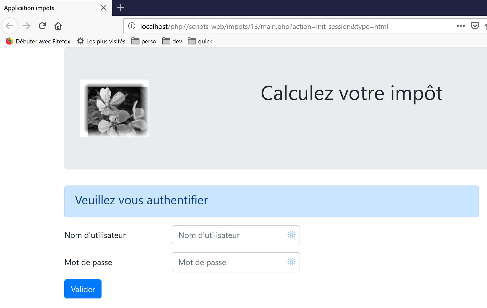
طريقة عرض حساب الضرائب:

عرض قائمة المحاكاة:

عرض الأخطاء غير المتوقعة:

سنقوم بوصف هذه العروض واحدة تلو الأخرى.
23.13.2. عرض المصادقة
23.13.2.1. نظرة عامة على العرض
تبدو شاشة المصادقة كما يلي:
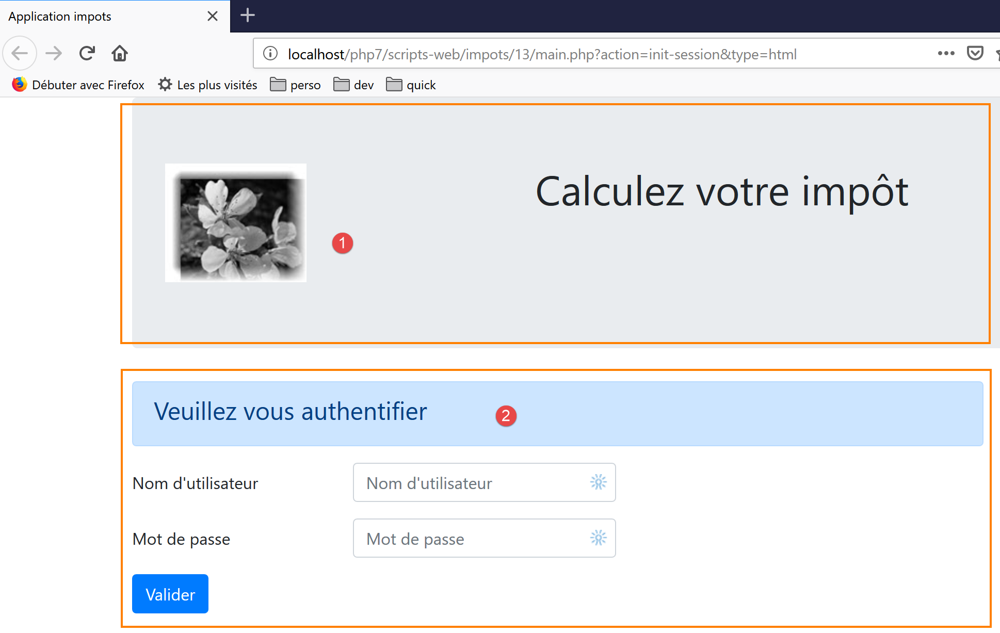
تتكون طريقة العرض من عنصرين سنسميهما "أجزاء":
- يتم إنشاء الجزء [1] بواسطة برنامج نصي [v-banner.php]؛
- يتم إنشاء الجزء [2] بواسطة البرنامج النصي [v-authentication.php]؛
يتم إنشاء عرض المصادقة بواسطة الصفحة التالية [vue-authentification.php]:
<?php
// page test data
// encapsulate paged data in $page
…
?>
<!doctype html>
<html lang="fr">
<head>
<!-- Required meta tags -->
<meta charset="utf-8">
<meta name="viewport" content="width=device-width, initial-scale=1, shrink-to-fit=no">
<!-- Bootstrap CSS -->
<link rel="stylesheet" href="https://stackpath.bootstrapcdn.com/bootstrap/4.1.3/css/bootstrap.min.css" integrity="sha384-MCw98/SFnGE8fJT3GXwEOngsV7Zt27NXFoaoApmYm81iuXoPkFOJwJ8ERdknLPMO" crossorigin="anonymous">
<title>Application impots</title>
</head>
<body>
<div class="container">
<!-- bandeau sur 1 ligne et 12 colonnes -->
<?php require "v-bandeau.php"; ?>
<!-- formulaire d'authentification sur 9 colonnes -->
<div class="row">
<div class="col-md-9">
<?php require "v-authentification.php" ?>
</div>
</div>
<?php
// if error - displays an error alert
if ($modèle->error) {
print <<<EOT
<div class="row">
<div class="col-md-9">
<div class="alert alert-danger" role="alert">
Les erreurs suivantes se sont produites :
<ul>$modèle->erreurs</ul>
</div>
</div>
</div>
EOT;
}
?>
</div>
</body>
</html>
تعليقات
- السطر 7: يبدأ مستند HTML بهذا السطر؛
- الأسطر 8–44: صفحة HTML محاطة بعلامتي <html> و </html>؛
- الأسطر 9–16: رأس مستند HTML (head)؛
- السطر 11: تشير علامة <meta charset> إلى أن المستند مشفر بـ UTF-8؛
- السطر 12: تحدد علامة <meta name='viewport'> عرض نافذة العرض الأولي: عبر العرض الكامل للشاشة التي تعرضها (width) بحجمها الأولي (initial-scale) دون تغيير الحجم لتناسب شاشة أصغر (shrink-to-fit)؛
- السطر 14: تحدد علامة <link rel='stylesheet'> ملف CSS الذي يحكم مظهر نافذة العرض. هنا، نستخدم إطار عمل Bootstrap 4.1.3 CSS [https://getbootstrap.com/docs/4.0/getting-started/introduction/] ؛
- السطر 15: تحدد علامة title عنوان الصفحة:

- الأسطر 17–43: يتم تضمين نص الصفحة الإلكترونية بين علامتي body و/body؛
- الأسطر 18–42: تحدد علامة <div> قسمًا من الصفحة المعروضة. تشير سمات [class] المستخدمة في العرض إلى إطار عمل Bootstrap CSS. تحدد علامة <div class=’container’> حاوية Bootstrap؛
- السطر 20: نقوم بتضمين البرنامج النصي [v-banner.php]. يقوم هذا البرنامج النصي بإنشاء شعار الصفحة [1]. سنقوم بوصفه بعد قليل؛
- الأسطر 22–26: تحدد علامة <div class=’row’> صفًا في Bootstrap. تتكون هذه الصفوف من 12 عمودًا؛
- السطر 23: تحدد العلامة <div class=’col-md-9’> قسمًا مكونًا من 9 أعمدة؛
- السطر 24: نضمّن البرنامج النصي [v-authentification.php] الذي يعرض نموذج المصادقة للصفحة [2]. سنشرح ذلك لاحقًا؛
- السطر 27: تدرج علامة <?php كود PHP في صفحة HTML. يتم تنفيذ هذا الكود قبل عرض صفحة HTML ويمكنه تعديلها؛
- السطر 29: سيتم تغليف جميع البيانات الديناميكية في العرض المعروض في كائن [$model] من النوع [stdClass]. هذا اختيار تعسفي. كان بإمكاننا اختيار مصفوفة ترابطية بدلاً من ذلك لتحقيق نفس النتيجة؛
- السطر 29: تفشل المصادقة إذا أدخل المستخدم بيانات اعتماد غير صحيحة. في هذه الحالة، يتم إعادة عرض عرض المصادقة مع رسالة خطأ. تشير السمة [$model→error] إلى ما إذا كان يجب عرض رسالة الخطأ هذه أم لا؛
- الأسطر 30–39: تُخرج هذه الصيغة كل النص الموجود بين رموز PHP <<<EOT (السطر 30—يمكنك استخدام أي نص تريده بدلاً من EOT=End Of Text) ورمز EOT في السطر 39 (يجب أن يكون مطابقًا للرمز المستخدم في السطر 30). يجب كتابة الرمز في العمود الأول من السطر 39. يتم تفسير متغيرات PHP الموجودة في النص بين رمزي EOT؛
- الأسطر 33–36: تحدد منطقة بخلفية وردية (class="alert alert-danger") (السطر 33)؛

- السطر 34: نص؛
- السطر 35: تعرض علامة HTML <ul> (قائمة غير مرتبة) قائمة ذات نقاط. يجب أن يكون لكل عنصر في القائمة الصيغة <li>item</li>؛
دعونا نلاحظ العناصر الديناميكية التي سيتم تعريفها في هذا الكود:
- [$model→error]: لعرض رسالة خطأ؛
- [$template→errors]: قائمة (بالمعنى HTML) برسائل الخطأ؛
23.13.2.2. جزء [v-bandeau.php]
يعرض جزء [v-bandeau.php] الشعار العلوي لجميع طرق العرض في تطبيق الويب:

فيما يلي كود جزء [v-banner.php]:
<!-- Bootstrap Jumbotron -->
<div class="jumbotron">
<div class="row">
<div class="col-md-4">
<img src="<?= $logo ?>" alt="Cerisier en fleurs" />
</div>
<div class="col-md-8">
<h1>
Calculez votre impôt
</h1>
</div>
</div>
</div>
تعليقات
- الأسطر 2–13: يتم تغليف الشعار في قسم Bootstrap Jumbotron [<div class="jumbotron">]. تعمل فئة Bootstrap هذه على تصميم المحتوى المعروض بطريقة معينة لجعله بارزًا؛
- الأسطر 3–12: صف Bootstrap؛
- الأسطر 4-6: يتم وضع صورة [img] في الأعمدة الأربعة الأولى من الصف؛
- السطر 5: بناء الجملة [<?= $logo ?>] يعادل بناء الجملة [<?php print $logo ?>]. بعبارة أخرى، ستكون قيمة السمة [src] هي قيمة متغير PHP [$logo]؛
- الأسطر 7–11: سيتم استخدام الأعمدة الثمانية المتبقية من الصف (تذكر أن العدد الإجمالي هو 12) لعرض نص (السطر 9) بخط كبير الحجم (<h1>، الأسطر 8–10)؛
العناصر الديناميكية:
- [$logo]: عنوان URL للصورة المعروضة في الشعار؛
23.13.2.3. جزء [v-authentification.php]
يعرض جزء [v-authentication.php] نموذج المصادقة الخاص بتطبيق الويب:

فيما يلي كود جزء [v-authentication.php]:
<!-- form HTML - post its values with the [authenticate-user] action -->
<form method="post" action="main.php?action=authentifier-utilisateur">
<!-- title -->
<div class="alert alert-primary" role="alert">
<h4>Veuillez vous authentifier</h4>
</div>
<!-- bootstrap form -->
<fieldset class="form-group">
<!-- 1st line -->
<div class="form-group row">
<!-- wording -->
<label for="user" class="col-md-3 col-form-label">Nom d'utilisateur</label>
<div class="col-md-4">
<!-- text input field -->
<input type="text" class="form-control" id="user" name="user"
placeholder="Nom d'utilisateur" value="<?= $modèle->login ?>">
</div>
</div>
<!-- 2nd line -->
<div class="form-group row">
<!-- wording -->
<label for="password" class="col-md-3 col-form-label">Mot de passe</label>
<!-- text input field -->
<div class="col-md-4">
<input type="password" class="form-control" id="password" name="password"
placeholder="Mot de passe">
</div>
</div>
<!-- submit] button on a 3rd line-->
<div class="form-group row">
<div class="col-md-2">
<button type="submit" class="btn btn-primary">Valider</button>
</div>
</div>
</fieldset>
</form>
تعليقات
- الأسطر 2–39: تحدد علامة <form> نموذج HTML. يتميز هذا النموذج عمومًا بالخصائص التالية:
- يحدد حقول الإدخال (علامات <input> في السطرين 17 و27)؛
- يحتوي على زر [submit] (السطر 34) الذي يرسل القيم المدخلة إلى عنوان URL المحدد في سمة [action] لعلامة [form] (السطر 2). يتم تحديد طريقة HTTP المستخدمة لإرسال طلب إلى عنوان URL هذا في سمة [method] لعلامة [form] (السطر 2)؛
- هنا، عندما ينقر المستخدم على زر [Submit] (السطر 34)، سيقوم المتصفح بإرسال (POST) (السطر 2) القيم التي تم إدخالها في النموذج إلى عنوان URL [main.php?action=authentifier-utilisateur] (السطر 2)؛
- القيم المرسلة هي القيم التي أدخلها المستخدم في حقول الإدخال في السطرين 17 و 27. سيتم إرسالها بالتنسيق [user=xx&password=yy]. تتوافق أسماء المعلمات [user, password] مع سمات [name] لحقول الإدخال في السطرين 17 و 27؛
- السطور 5-7: قسم Bootstrap لعرض عنوان على خلفية زرقاء:

- الأسطر 10–37: نموذج Bootstrap. سيتم بعد ذلك تصميم جميع عناصر النموذج بطريقة محددة؛
- الأسطر 12–20: تحدد الصف الأول من النموذج:

- السطر 14 يحدد التسمية [1] عبر ثلاثة أعمدة. تربط السمة [for] لعلامة [label] التسمية بالسمة [id] لحقل الإدخال في السطر 17؛
- الأسطر 15-19: تضع حقل الإدخال ضمن تخطيط مكون من أربعة أعمدة؛
- السطر 17: تحدد علامة HTML [input] حقل إدخال. ولها عدة سمات:
- [type='text']: هذا حقل إدخال نصي. يمكنك كتابة أي شيء فيه؛
- [class='form-control']: نمط Bootstrap لحقل الإدخال؛
- [id='user']: معرف حقل الإدخال. يستخدم هذا المعرف عمومًا بواسطة كود CSS و JavaScript؛
- [name='user']: اسم حقل الإدخال. سيتم إرسال القيمة التي أدخلها المستخدم بواسطة المتصفح تحت هذا الاسم [user=xx]؛
- [placeholder='prompt']: النص المعروض في حقل الإدخال عندما لا يكون المستخدم قد كتب أي شيء بعد؛

- [value='value']: سيتم عرض النص 'value' في حقل الإدخال فور ظهوره، قبل أن يدخل المستخدم أي شيء آخر. تُستخدم هذه الآلية في حالة حدوث خطأ لعرض الإدخال الذي تسبب في الخطأ. هنا، ستكون هذه القيمة هي قيمة متغير PHP [$model->login]؛
- الأسطر 21–30: كود مشابه لحقل إدخال كلمة المرور؛
- السطر 27: [type='password'] ينشئ حقل إدخال نصي (يمكنك كتابة أي شيء) لكن الأحرف التي يتم إدخالها مخفية:

- الأسطر 32–36: سطر ثالث لزر [Submit]؛
- السطر 34: نظرًا لوجود السمة [type="submit"]، يؤدي النقر على هذا الزر إلى قيام المتصفح بإرسال القيم المدخلة إلى الخادم، كما هو موضح سابقًا. تعرض السمة CSS [class="btn btn-primary"] زرًا أزرق اللون:

هناك شيء أخير يجب توضيحه. السطر 2: تحدد السمة [action="main.php?action=authentifier-utilisateur"] عنوان URL غير مكتمل (لا يبدأ بـ http://machine:port/chemin). في مثالنا، تكون جميع عناوين URL الخاصة بالتطبيق بالشكل [http://localhost/php7/scripts-web/impots/version-12/main.php?action=xx]. سيتم الوصول إلى عرض المصادقة عبر عناوين URL مختلفة:
- [http://localhost/php7/scripts-web/impots/version-12/main.php?action=init-session&type=html]؛
- [http://localhost/php7/scripts-web/impots/version-12/main.php?action=authentifier-utilisateur]
تشير عناوين URL هذه إلى مستند [main.php] الموجود في [http://localhost/php7/scripts-web/impots/version-12]. وينطبق هذا على جميع عناوين URL في هذا التطبيق. سيتم إضافة هذا المسار كبادئة للمعلمة [action="main.php?action=authentifier-utilisateur"] عند إرسال القيم المدخلة. وبالتالي، سيتم إرسال هذه القيم إلى عنوان URL [http://localhost/php7/scripts-web/impots/version-12/main.php?action=authentifier-utilisateur].
23.13.2.4. الاختبارات المرئية
يمكننا اختبار طرق العرض جيدًا قبل دمجها في التطبيق. الهدف هنا هو اختبار مظهرها البصري. سنجمع جميع طرق العرض الاختبارية في مجلد [Tests] الخاص بالمشروع:

لاختبار العرض [vue-authentification.php]، نحتاج إلى إنشاء نموذج البيانات الذي سيعرضه:
<?php
// page test data
//
// calculate the view model
$modèle = getModelForThisView();
function getModelForThisView(): object {
// encapsulate paged data in $modèle
$modèle = new \stdClass();
// user code
$modèle->login = "albert";
// error list
$modèle->error = TRUE;
$erreurs = ["erreur1", "erreur2"];
// build a HTML list of errors
$content = "";
foreach ($erreurs as $erreur) {
$content .= "<li>$erreur</li>";
}
$modèle->erreurs = $content;
// banner image
$modèle->logo = "http://localhost/php7/scripts-web/impots/version-12/Tests/logo.jpg";
// we render the model
return $modèle;
}
?>
<!-- document HTML -->
<!doctype html>
<html lang="fr">
<head>
<!-- Required meta tags -->
…
</head>
<body>
….
</body>
</html>
تعليقات
- الأسطر 1–5: تحتوي طريقة عرض المصادقة على أجزاء ديناميكية يتحكم فيها الكائن [$model]. يُسمى هذا الكائن نموذج العرض. وفقًا لأحد التعريفين المقدمين لاختصار MVC، يمثل هذا الحرف M في MVC؛
- السطر 5: يتم حساب نموذج العرض بواسطة الدالة [getModelForThisView]؛
- السطر 9: سيتم تغليف نموذج العرض في نوع [stdClass]؛
- الأسطر 10–22: يتم تعريف قيم الاختبار للعناصر الديناميكية لعرض المصادقة؛
يمكن إجراء الاختبار المرئي من NetBeans:
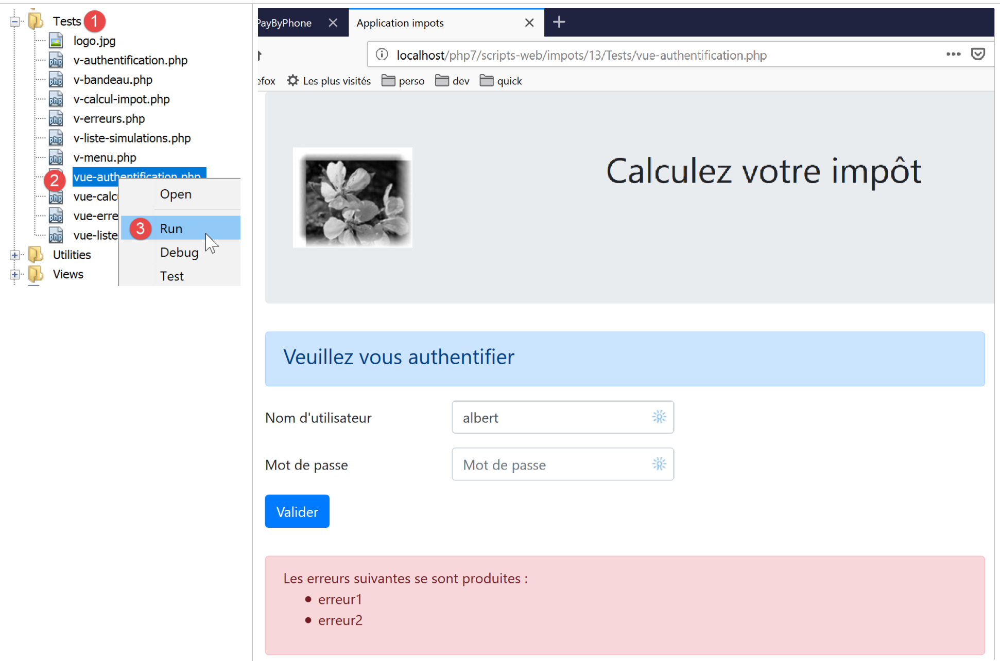
نواصل إجراء هذه الاختبارات المرئية حتى نكون راضين عن النتيجة.
23.13.2.5. حساب نموذج العرض
بمجرد تحديد المظهر البصري للعرض، يمكننا المضي قدمًا في حساب نموذج العرض في ظل ظروف واقعية. دعونا نراجع رموز الحالات التي تؤدي إلى هذا العرض. يمكن العثور عليها في ملف التكوين:
"vues": {
"vue-authentification.php": [700, 221, 400],
"vue-calcul-impot.php": [200, 300, 341, 350, 800],
"vue-liste-simulations.php": [500, 600]
},
"vue-erreurs": "vue-erreurs.php"
إذن، رموز الحالة [700، 221، 400] هي التي تؤدي إلى عرض طريقة عرض المصادقة. لفهم معنى هذه الرموز، يمكننا الرجوع إلى اختبارات [Postman] التي أجريت على تطبيق JSON:
- [init-session-json-700]: 700 هو رمز الحالة الذي يتبع إجراء [init-session] الناجح: ثم يتم عرض نموذج المصادقة فارغًا؛
- [authenticate-user-221]: 221 هو رمز الحالة الذي يظهر عقب فشل إجراء [authenticate-user] (بيانات اعتماد غير معترف بها): ثم يتم عرض نموذج المصادقة لتصحيح بيانات الاعتماد؛
- [end-session-400]: 400 هو رمز الحالة الذي يتبع إجراء [end-session] الناجح: ثم يتم عرض نموذج المصادقة فارغًا؛
الآن بعد أن عرفنا متى يجب عرض نموذج المصادقة، يمكننا حساب قالبه في [authentication-view.php]:

فيما يلي كود حساب قالب العرض [vue-authentification.php]:
<?php
// we inherit the following variables
// Request $request : la requête en cours
// Session $session: the application session
// array $config: application configuration
// array $content: controller response
//
// symfony dependencies
use Symfony\Component\HttpFoundation\Request;
use Symfony\Component\HttpFoundation\Session\Session;
// calculate the view model
$modèle = getModelForThisView($request, $session, $config, $content);
function getModelForThisView(Request $request, Session $session, array $config, array $content): object {
// encapsulate paged data in $modèle
$modèle = new stdClass();
// application status
$état = $content["état"];
// the model depends on the state
switch ($état) {
case 700:
case 400:
// case of empty form display
$modèle->login = "";
// no error to display
$modèle->error = FALSE;
break;
case 221:
// false authentication
// the user initially entered is redisplayed
$modèle->login = $request->request->get("user");
// there is an error to display
$modèle->error = TRUE;
// list HTML of error msg - here only one
$modèle->erreurs = "<li>Echec de l'authentification</li>";
}
// result
return $modèle;
}
?>
<!-- document HTML -->
<!doctype html>
<html lang="fr">
<head>
…
</head>
<body>
…
</body>
</html>
تعليقات
- الأسطر 3–6: يتم إعلان المتغيرات الموروثة من فئة [HtmlResponse]؛ تستخدم هذه الفئة [require] لعرض طريقة العرض [vue-authentification.php]؛
- السطور 9-10: فئات Symfony المستخدمة في كود العرض؛
- الأسطر 15-40: الدالة [getModelForThisView] مسؤولة عن حساب نموذج العرض؛
- السطر 19: يتم استرداد رمز الحالة الذي أعادته وحدة التحكم التي عالجت الإجراء الحالي؛
- الأسطر 21–37: يعتمد النموذج على رمز الحالة هذا؛
- الأسطر 22-28: الحالة التي يجب فيها عرض نموذج مصادقة فارغ؛
- الأسطر 29-37: حالة فشل المصادقة: يتم عرض اسم المستخدم الذي أدخله المستخدم، مع رسالة خطأ. يمكن للمستخدم بعد ذلك محاولة المصادقة مرة أخرى؛
تمت كتابة قالب محدد للبانر [v-bandeau.php]:
<?php
// logo
$scheme = $request->server->get('REQUEST_SCHEME'); // http
$host = $request->server->get('SERVER_NAME'); // localhost
$port = $request->server->get('SERVER_PORT'); // 80
$uri = $request->server->get('REQUEST_URI'); // /php7/scripts-web/impots/version-12/main.php?action=xxx
$champs = [];
preg_match("/(.+)\/.+?$/", $uri, $champs);
$root = $champs[1]; // /php7/scripts-web/impots/version-12
$modèle->logo = "$scheme://$host:$port$root/Views/logo.jpg"; // http://localhost:80/php7/scripts-web/impots/version-12/Views/logo.jpg
?>
<!-- Bootstrap Jumbotron -->
<div class="jumbotron">
<div class="row">
<div class="col-md-4">
<img src="<?= $modèle->logo ?>" alt="Cerisier en fleurs" />
</div>
<div class="col-md-8">
<h1>
Calculez votre impôt
</h1>
</div>
</div>
</div>
تعليقات
- يستخدم السطر 16 المتغير [$template→logo]، وهو عنوان URL لشعار البانر. بدلاً من حساب هذا المتغير أربع مرات للعروض الأربعة للتطبيق، يتم تضمين هذا الحساب في الجزء [v-banner.php]؛
- توضح الأسطر 1–11 كيفية إنشاء عنوان URL [http://localhost:80/php7/scripts-web/impots/version-12/Views/logo.jpg] باستخدام المعلومات الموجودة في بيئة الخادم [$request→server]؛
23.13.2.6. الاختبارات [Postman]
لقد أنشأنا بالفعل طلبات تعرض رموز الحالة [700، 221، 400]، والتي تعرض عرض المصادقة. دعونا نراجعها:
- [init-session-html-700]: 700 هو رمز الحالة الذي يظهر عقب نجاح إجراء [init-session]: ثم يتم عرض نموذج المصادقة الفارغ؛
- [authenticate-user-221]: 221 هو رمز الحالة الذي يتبع إجراء [authenticate-user] الفاشل (بيانات اعتماد غير معترف بها): ثم يتم عرض نموذج المصادقة حتى يمكن تصحيح بيانات الاعتماد؛
- [end-session-400]: 400 هو رمز الحالة الذي يتبع إجراء [end-session] الناجح: ثم يتم عرض نموذج المصادقة الفارغ؛
ما عليك سوى إعادة استخدامها والتحقق مما إذا كانت تعرض طريقة عرض المصادقة بشكل صحيح. سنعرض اختبارين فقط هنا:
- [init-session-html-700]: بدء جلسة عمل HTML؛
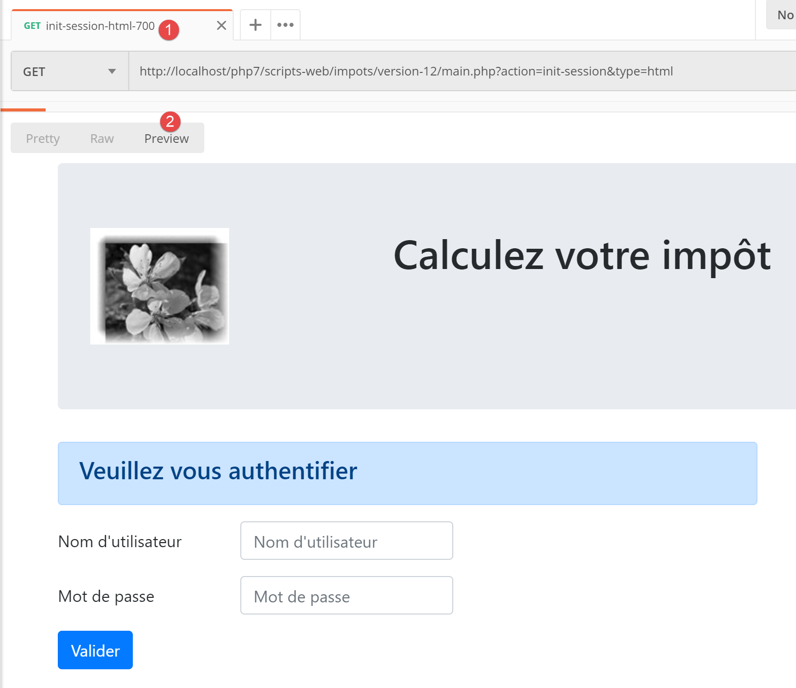
- [authenticate-user-221]: مصادقة المستخدم [x, x]؛

أعلاه:
- أرسل الطلب السلسلة [user=x&password=x]؛
- في [4]، تظهر رسالة خطأ؛
- في [3]، تم عرض المستخدم غير الصحيح مرة أخرى؛
23.13.2.7. الخلاصة
تمكنا من اختبار العرض [vue-authentification.php] دون كتابة العروض الأخرى. كان ذلك ممكنًا للأسباب التالية:
- كتابة جميع وحدات التحكم؛
- [Postman] يسمح لنا بإرسال طلبات إلى الخادم دون الحاجة إلى طرق العرض. عند كتابة وحدات التحكم، يجب أن تدرك أن أي شخص يمكنه القيام بذلك. لذلك يجب أن تكون مستعدًا للتعامل مع الطلبات التي لا تسمح بها أي طريقة عرض. يتم إنشاؤها يدويًا في [Postman]. يجب ألا تفترض مسبقًا أن "هذا الطلب مستحيل". يجب عليك التحقق؛
23.13.3. عرض حساب الضريبة
23.13.3.1. نظرة عامة على العرض
عرض حساب الضريبة هو كما يلي:
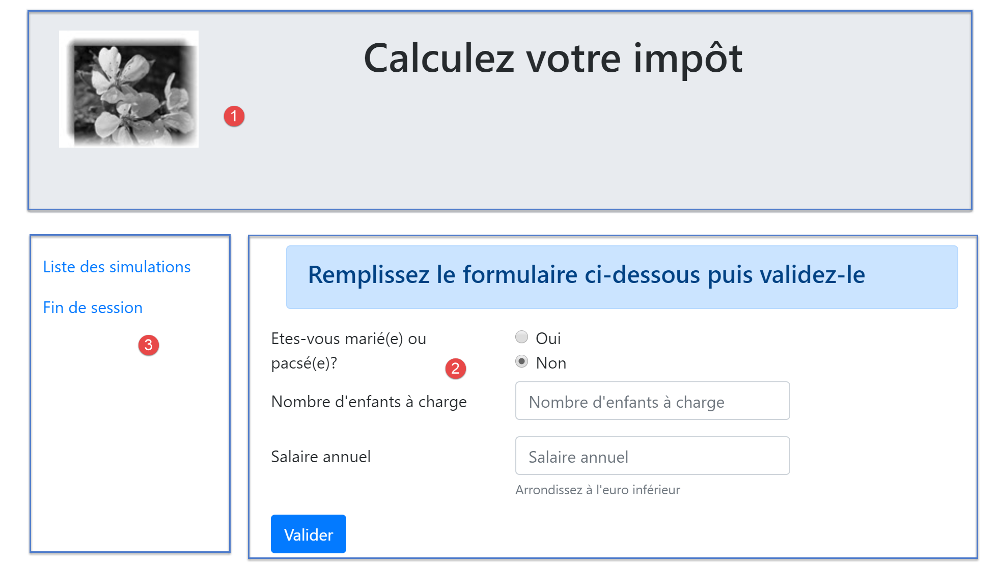
تتكون طريقة العرض من ثلاثة أجزاء:
- 1: يتم إنشاء الشعار العلوي بواسطة الجزء [v-bandeau.php] الذي تم عرضه سابقًا؛
- 2: نموذج حساب الضريبة الذي تم إنشاؤه بواسطة الجزء [v-calcul-impot.php]؛
- 3: قائمة تحتوي على رابطين، تم إنشاؤها بواسطة المقطع [v-menu.php]؛
يتم إنشاء عرض حساب الضريبة بواسطة البرنامج النصي التالي [vue-calcul-impot.php]:

<?php
// we inherit the following variables
// Request $request : la requête en cours
// Session $session: the application session
// array $config: application configuration
// array $content: the response of the controller that processed the action
//
// symfony dependencies
use Symfony\Component\HttpFoundation\Request;
use Symfony\Component\HttpFoundation\Session\Session;
// calculate the view model
$modèle = getModelForThisView($request, $session, $config, $content);
function getModelForThisView(Request $request, Session $session, array $config, array $content): object {
// encapsulate paged data in $modèle
$modèle = new \stdClass();
…
// we render the model
return $modèle;
}
?>
<!-- document HTML -->
<!doctype html>
<html lang="fr">
<head>
<!-- Required meta tags -->
<meta charset="utf-8">
<meta name="viewport" content="width=device-width, initial-scale=1, shrink-to-fit=no">
<!-- Bootstrap CSS -->
<link rel="stylesheet" href="https://stackpath.bootstrapcdn.com/bootstrap/4.1.3/css/bootstrap.min.css" integrity="sha384-MCw98/SFnGE8fJT3GXwEOngsV7Zt27NXFoaoApmYm81iuXoPkFOJwJ8ERdknLPMO" crossorigin="anonymous">
<title>Application impots</title>
</head>
<body>
<div class="container">
<!-- bandeau -->
<?php require "v-bandeau.php"; ?>
<!-- ligne à deux colonnes -->
<div class="row">
<!-- le menu -->
<div class="col-md-3">
<?php require "v-menu.php" ?>
</div>
<!-- le formulaire de calcul -->
<div class="col-md-9">
<?php require "v-calcul-impot.php" ?>
</div>
</div>
<!-- cas du succès -->
<?php
if ($modèle->success) {
// a success alert is displayed
print <<<EOT1
<div class="row">
<div class="col-md-3">
</div>
<div class="col-md-9">
<div class="alert alert-success" role="alert">
$modèle->impôt</br>
$modèle->décôte</br>\n
$modèle->réduction</br>\n
$modèle->surcôte</br>\n
$modèle->taux</br>\n
</div>
</div>
</div>
EOT1;
}
?>
<?php
if ($modèle->error) {
// 9-column error list
print <<<EOT2
<div class="row">
<div class="col-md-3">
</div>
<div class="col-md-9">
<div class="alert alert-danger" role="alert">
L'erreur suivante s'est produite :
<ul>$modèle->erreurs</ul>
</div>
</div>
</div>
EOT2;
}
?>
</div>
</body>
</html>
تعليقات
- نحن نعلق فقط على الميزات الجديدة التي لم نواجهها بعد؛
- السطر 37: إدراج الشعار العلوي للعرض في الصف الأول من Bootstrap الخاص بالعرض؛
- الأسطر 41-43: إدراج القائمة، التي ستشغل ثلاثة أعمدة من الصف الثاني لـ Bootstrap في العرض؛
- الأسطر 45-47: إدراج نموذج حساب الضريبة، الذي سيشغل تسعة أعمدة من الصف الثاني لـ Bootstrap في العرض؛
- الأسطر 51–69: إذا نجح حساب الضريبة [$model→success=TRUE]، فسيتم عرض نتيجة حساب الضريبة في مربع أخضر (الأسطر 59–65). يوجد هذا المربع في الصف الثالث من Bootstrap في العرض (السطر 54) ويشغل تسعة أعمدة (السطر 58) على يمين ثلاثة أعمدة فارغة (الأسطر 55–57). وبالتالي، سيكون هذا المربع أسفل نموذج حساب الضريبة مباشرةً؛
- الأسطر 71–87: إذا فشل حساب الضريبة [$model→error=TRUE]، فسيتم عرض رسالة خطأ في مربع وردي (الأسطر 80–83). يوجد هذا الإطار في الصف الثالث من Bootstrap في العرض (السطر 75) ويشغل تسعة أعمدة (السطر 79) على يمين ثلاثة أعمدة فارغة (الأسطر 76–78). وبالتالي، سيكون هذا الإطار أسفل نموذج حساب الضريبة مباشرةً؛
23.13.3.2. الجزء [v-calcul-impot.php]
يعرض الجزء [v-calcul-impot.php] نموذج تسجيل الدخول إلى تطبيق الويب:

فيما يلي كود الجزء [v-calcul-impot.php]:
<!-- form HTML posted -->
<form method="post" action="main.php?action=calculer-impot">
<!-- 12-column message on blue background -->
<div class="col-md-12">
<div class="alert alert-primary" role="alert">
<h4>Remplissez le formulaire ci-dessous puis validez-le</h4>
</div>
</div>
<!-- form elements -->
<fieldset class="form-group">
<!-- first row of 9 columns -->
<div class="row">
<!-- 4-column wording -->
<legend class="col-form-label col-md-4 pt-0">Etes-vous marié(e) ou pacsé(e)?</legend>
<!-- 5-column radio buttons-->
<div class="col-md-5">
<div class="form-check">
<input class="form-check-input" type="radio" name="marié" id="gridRadios1" value="oui" <?= $modèle->checkedOui ?>>
<label class="form-check-label" for="gridRadios1">
Oui
</label>
</div>
<div class="form-check">
<input class="form-check-input" type="radio" name="marié" id="gridRadios2" value="non" <?= $modèle->checkedNon ?>>
<label class="form-check-label" for="gridRadios2">
Non
</label>
</div>
</div>
</div>
<!-- second row of 9 columns -->
<div class="form-group row">
<!-- 4-column wording -->
<label for="enfants" class="col-md-4 col-form-label">Nombre d'enfants à charge</label>
<!-- 5-column numerical entry field for number of children -->
<div class="col-md-5">
<input type="number" min="0" step="1" class="form-control" id="enfants" name="enfants" placeholder="Nombre d'enfants à charge" value="<?= $modèle->enfants ?>">
</div>
</div>
<!-- third row of 9 columns -->
<div class="form-group row">
<!-- 4-column wording -->
<label for="salaire" class="col-md-4 col-form-label">Salaire annuel</label>
<!-- 5-column numeric input field for wages -->
<div class="col-md-5">
<input type="number" min="0" step="1" class="form-control" id="salaire" name="salaire" placeholder="Salaire annuel" aria-describedby="salaireHelp" value="<?= $modèle->salaire ?>">
<small id="salaireHelp" class="form-text text-muted">Arrondissez à l'euro inférieur</small>
</div>
</div>
<!-- fourth row, [submit] button on 5 columns -->
<div class="form-group row">
<div class="col-md-5">
<button type="submit" class="btn btn-primary">Valider</button>
</div>
</div>
</fieldset>
</form>
تعليقات
- السطر 2: سيتم إرسال النموذج HTML (السمة [method]) إلى عنوان URL [main.php?action=calculer-impot] (السمة [action]). وستكون القيم المرسلة هي قيم حقول الإدخال:
- قيمة زر الاختيار المحدد في النموذج:
- [marié=oui] إذا تم تحديد زر الاختيار [Oui] (الأسطر 16–22). [marié] هي قيمة السمة [name] في السطر 18، و[oui] هي قيمة السمة [value] في السطر 18؛
- [married=no] إذا تم تحديد زر الاختيار [No] (الأسطر 23–28). [married] هي قيمة السمة [name] في السطر 24، و[no] هي قيمة السمة [value] في السطر 24؛
- قيمة حقل الإدخال الرقمي في السطر 37 في النموذج [children=xx]، حيث [children] هي قيمة السمة [name] في السطر 37، و[xx] هي القيمة التي أدخلها المستخدم عبر لوحة المفاتيح؛
- قيمة حقل الإدخال الرقمي في السطر 46 في النموذج [salary=xx]، حيث [salary] هي قيمة السمة [name] في السطر 46، و[xx] هي القيمة التي أدخلها المستخدم عبر لوحة المفاتيح؛
- قيمة زر الاختيار المحدد في النموذج:
وأخيرًا، ستكون القيمة المنشورة بالشكل [married=xx&children=yy&salary=zz].
- سيتم إرسال القيم المدخلة عندما ينقر المستخدم على زر [إرسال] في السطر 53؛
- الأسطر 16–30: زر الاختياران:

يعد زرا الاختيار جزءًا من نفس مجموعة زرا الاختيار لأنهما يحملان نفس سمة [name] (السطران 18 و24). يضمن المتصفح أنه داخل مجموعة زرا الاختيار، يتم تحديد زر واحد فقط في أي وقت. لذلك، يؤدي النقر على أحدهما إلى إلغاء تحديد الزر الذي كان محددًا سابقًا؛
- هذه أزرار اختيار بسبب السمة [type="radio"] (السطران 18 و24)؛
- عند عرض النموذج (قبل الإدخال)، يجب تحديد أحد أزرار الاختيار: للقيام بذلك، ما عليك سوى إضافة السمة [checked=’checked’] إلى علامة <input type="radio"> ذات الصلة. يتم تحقيق ذلك باستخدام المتغيرات الديناميكية:
- [<?= $model->checkedYes ?>] في السطر 18؛
- [<?= $model->checkedNo ?>] في السطر 24؛
ستكون هذه المتغيرات جزءًا من قالب العرض.
- السطر 37: حقل إدخال رقمي [type="number"] بقيمة دنيا تساوي 0 [min="0"]. في المتصفحات الحديثة، يعني هذا أن المستخدم لا يمكنه إدخال سوى رقم >=0. وفي هذه المتصفحات الحديثة نفسها، يمكن إجراء الإدخال باستخدام شريط تمرير يمكن النقر عليه لأعلى أو لأسفل. تشير السمة [step="1"] في السطر 37 إلى أن شريط التمرير سيعمل بزيادات قدرها 1. ونتيجة لذلك، لن يقبل شريط التمرير سوى القيم الصحيحة التي تتراوح من 0 إلى n بزيادات قدرها 1. بالنسبة للإدخال اليدوي، يعني هذا أن الأرقام التي تحتوي على أرقام عشرية لن يتم قبولها؛

- السطر 37: في بعض الشاشات، يجب ملء حقل إدخال الأطفال مسبقًا بآخر إدخال تم إجراؤه في هذا الحقل. للقيام بذلك، نستخدم السمة [value]، التي تحدد القيمة التي سيتم عرضها في حقل الإدخال. ستكون هذه القيمة ديناميكية ويتم إنشاؤها بواسطة المتغير [$model→children]؛
- السطر 46: تنطبق نفس التفسيرات على إدخال الراتب كما تنطبق على الأطفال؛
- السطر 53: زر [submit] الذي يقوم بتشغيل POST للقيم المدخلة إلى عنوان URL [main.php?action=calculer-impot]؛

23.13.3.3. جزء [v-menu.php]
يعرض هذا الجزء قائمة على يسار نموذج حساب الضريبة:

فيما يلي كود هذه القطعة:
<!-- bootstrap menu -->
<nav class="nav flex-column">
<?php
// affichage d'une liste de liens HTML
foreach($modèle->optionsMenu as $texte=>$url){
print <<<EOT3
<a class="nav-link" href="$url">$texte</a>
EOT3;
}
?>
</nav>
تعليقات
- الأسطر 2–11: تحيط علامة HTML [nav] بجزء من مستند HTML يحتوي على روابط تنقل إلى مستندات أخرى؛
- السطر 7: تقدم علامة HTML [a] رابط تنقل:
- [$url]: هو عنوان URL الذي يتم توجيه المستخدم إليه عند النقر على رابط [$text]. ثم يقوم المتصفح بتنفيذ عملية [GET $url]. إذا كان [$url] عنوان URL نسبي، يتم إرفاقه بجذر عنوان URL المعروض حاليًا في شريط عنوان المتصفح. وبالتالي، لإنشاء الرابط [1] عندما يكون عنوان URL الحالي للمتصفح بالصيغة [http://chemin/main.php?paramètres]، نقوم بإنشاء الرابط:
- السطر 5: سيكون قالب الجزء [$modèle→optionsMenu] عبارة عن مصفوفة بالشكل التالي:
[‘ Liste des simulations’=>’main.php?action=liste-simulations’,
‘ Fin de session’=>’main.php?action=fin-session’]
- السطران 2 و7: فئات CSS [nav, flex-column, nav-link] هي فئات Bootstrap التي تحدد مظهر القائمة؛
23.13.3.4. اختبار مرئي
نجمع هذه العناصر المختلفة في مجلد [Tests] وننشئ قالب اختبار للعرض [view-tax-calculation.php]:

سيكون نموذج البيانات لعرض [view-tax-calculation] كما يلي:
<?php
// page test data
//
// calculate the view model
$modèle = getModelForThisView();
function getModelForThisView(): object {
// encapsulate paged data in $modèle
$modèle = new \stdClass();
// form
$modèle->checkedOui = "";
$modèle->checkedNon = 'checked="checked"';
$modèle->enfants = 2;
$modèle->salaire = 300000;
// message of success
$modèle->success = TRUE;
$modèle->impôt = "Montant de l'impôt : 1000 euros";
$modèle->décôte = "Décôte : 15 euros";
$modèle->réduction = "Réduction : 20 euros";
$modèle->surcôte = "Surcôte : 0 euros";
$modèle->taux = "Taux d'imposition : 14 %";
// error message
$modèle->error = TRUE;
$erreurs = ["erreur1", "erreur2"];
// build a HTML list of errors
$content = "";
foreach ($erreurs as $erreur) {
$content .= "<li>$erreur</li>";
}
$modèle->erreurs = $content;
// menu
$modèle->optionsMenu = [
'Liste des simulations' => 'main.php?action=liste-simulations',
'Fin de session' => 'main.php?action=fin-session'];
// banner image
$modèle->logo = "http://localhost/php7/scripts-web/impots/version-12/Tests/logo.jpg";
// we render the model
return $modèle;
}
?>
<!-- document HTML -->
<!doctype html>
<html lang="fr">
<head>
…
</head>
<body>
…
</body>
</html>
تعليقات
- الأسطر 7–39: نقوم بتهيئة جميع الأجزاء الديناميكية للطريقة [vue-calcul-impot.php] والمكونات [v-calcul-impot.php] و[v-menu.php]؛
نقوم باختبار العرض [vue-calcul-impot.php]:

نحصل على النتيجة التالية:

نعمل على هذا العرض حتى نكون راضين عن النتيجة المرئية. يمكننا بعد ذلك المضي قدماً في دمج العرض في تطبيق الويب قيد التطوير حالياً.
23.13.3.5. حساب نموذج العرض

بمجرد تحديد المظهر البصري للعرض، يمكننا المضي قدمًا في حساب نموذج العرض في ظل ظروف واقعية. دعونا نراجع رموز الحالة التي تؤدي إلى هذا العرض. يمكن العثور عليها في ملف التكوين:
"vues": {
"vue-authentification.php": [700, 221, 400],
"vue-calcul-impot.php": [200, 300, 341, 350, 800],
"vue-liste-simulations.php": [500, 600]
},
"vue-erreurs": "vue-erreurs.php"
رموز الحالة هذه [200، 300، 341، 350، 800] هي التي تؤدي إلى عرض شاشة المصادقة. لفهم معنى هذه الرموز، يمكننا الرجوع إلى اختبارات [Postman] التي أجريت على تطبيق JSON:
- [authenticate-user-200]: 200 هو رمز الحالة الذي يتبع إجراء [authenticate-user] الناجح؛ ثم يتم عرض نموذج حساب الضريبة الفارغ؛
- [calculate-tax-300]: 300 هو رمز الحالة الذي يتبع إجراء [calculate-tax] الناجح. ثم يتم عرض نموذج الحساب مع البيانات المدخلة ومبلغ الضريبة. يمكن للمستخدم بعد ذلك إجراء حساب آخر؛
- [end-session-400]: 400 هو رمز الحالة الذي يتبع إجراء [end-session] الناجح: ثم يتم عرض نموذج المصادقة الفارغ؛
- يتم إرجاع رمز الحالة [341] لحساب ضريبة صالح، ولكن عدم وجود اتصال بنظام إدارة قواعد البيانات (DBMS) يتسبب في حدوث خطأ؛
- يتم إرجاع رمز الحالة [350] لحساب ضريبي صالح، ولكن عدم وجود اتصال بخادم [Redis] يتسبب في حدوث خطأ؛
- سيتم عرض رمز الحالة [800] لاحقًا. لم نواجهه بعد؛
- لقد افترضنا هنا أن المستخدم يستخدم متصفحًا حديثًا. وبالتالي، مع النموذج قيد النظر، لا يمكن إدخال أرقام سالبة أو سلاسل أحرف غير رقمية أو أرقام عشرية في حقول الإدخال [الأطفال، الراتب]. مع المتصفحات القديمة، سيكون هذا ممكنًا. سنتعامل مع هذه الأخطاء على أنها أخطاء غير متوقعة ونعرض عرض [vue-erreurs]؛
الآن بعد أن عرفنا متى يجب عرض نموذج حساب الضريبة، يمكننا حساب قالبه في [tax-calculation-view.php]:
<?php
// we inherit the following variables
// Request $request : la requête en cours
// Session $session: the application session
// array $config: application configuration
// array $content: the response of the controller that processed the action
//
// symfony dependencies
use Symfony\Component\HttpFoundation\Request;
use Symfony\Component\HttpFoundation\Session\Session;
// calculate the view model
$modèle = getModelForThisView($request, $session, $config, $content);
function getModelForThisView(Request $request, Session $session, array $config, array $content): object {
// encapsulate paged data in $modèle
$modèle = new \stdClass();
// application status
$état = $content["état"];
// the model depends on the state
switch ($état) {
case 200 :
case 800:
// initial display of an empty form
$modèle->success = FALSE; $modèle->errror = FALSE;
$modèle->checkedNon = 'checked="checked"';
$modèle->checkedOui = "";
$modèle->enfants = "";
$modèle->salaire = "";
break;
case 300:
// successful calculation - result display
$modèle->success = TRUE;
$modèle->error = FALSE;
$modèle->impôt = "Montant de l'impôt : {$content["réponse"]["impôt"]} euros";
$modèle->décôte = "Décôte : {$content["réponse"]["décôte"]} euros";
$modèle->réduction = "Réduction : {$content["réponse"]["réduction"]} euros";
$modèle->surcôte = "Surcôte : {$content["réponse"]["surcôte"]} euros";
$modèle->taux = "Taux d'imposition : " . ($content["réponse"]["taux"] * 100) . " %";
// form restored with values entered
$modèle->checkedOui = $request->request->get("marié") === "oui" ? 'checked="checked"' : "";
$modèle->checkedNon = $request->request->get("marié") === "oui" ? "" : 'checked="checked"';
$modèle->enfants = $request->request->get("enfants");
$modèle->salaire = $request->request->get("salaire");
break;
case 341:
// database HS
case 350:
// redis server HS
// form restored with values entered
$modèle->checkedOui = $request->request->get("marié") === "oui" ? 'checked="checked"' : "";
$modèle->checkedNon = $request->request->get("marié") === "oui" ? "" : 'checked="checked"';
$modèle->enfants = $request->request->get("enfants");
$modèle->salaire = $request->request->get("salaire");
// error
$modèle->success = FALSE;
$modèle->error = TRUE;
$modèle->erreurs = "<li>{$content["réponse"]}</li>";
break;
}
//menu
$modèle->optionsMenu = [
"Liste des simulations" => "main.php?action=lister-simulations",
"Fin de session" => "main.php?action=fin-session"];
// we render the model
return $modèle;
}
?>
<!-- document HTML -->
<!doctype html>
<html lang="fr">
<head>
…
<title>Application impots</title>
</head>
<body>
…
</body>
</html>
تعليقات
- الأسطر 22–30: عرض نموذج فارغ؛
- الأسطر 31–45: حساب الضريبة بنجاح. يتم عرض القيم المدخلة ومبلغ الضريبة مرة أخرى؛
- الأسطر 46–59: حالة فشل حساب الضريبة بسبب عدم توفر أحد الخادمين [Redis] أو [MySQL]؛
- الأسطر 62–64: حساب خياري القائمة؛
23.13.3.6. اختبارات [Postman]
يعرض اختبار [calculate-tax-300] رمز الحالة 300، مما يشير إلى نجاح حساب الضريبة:

- في [3]، القيم التي أدت إلى النتيجة [2]؛
دعونا نجرب حالة خطأ: خطأ [350] بسبب عدم توفر خادم [Redis]:

23.13.4. عرض قائمة المحاكاة
23.13.4.1. نظرة عامة على العرض
تظهر قائمة عمليات المحاكاة على النحو التالي:

يتكون العرض الذي تم إنشاؤه بواسطة البرنامج النصي [vue-liste-simulations] من ثلاثة أجزاء:
- 1: يتم إنشاء الشعار العلوي بواسطة الجزء [v-bandeau.php] الذي تم عرضه سابقًا؛
- 2: جدول المحاكاة الذي تم إنشاؤه بواسطة المقطع [v-simulation-list.php]؛
- 3: قائمة تحتوي على رابطين، تم إنشاؤها بواسطة الجزء [v-menu.php]؛
يتم إنشاء عرض المحاكاة بواسطة البرنامج النصي التالي [simulation-list-view.php]:

<?php
// calculate the view model
$modèle = getModelForThisView();
function getModelForThisView(Request $request, Session $session, array $config, array $content): object {
// encapsulate paged data in $modèle
$modèle = new \stdClass();
…
// we render the model
return $modèle;
}
?>
<!-- document HTML -->
<!doctype html>
<html lang="fr">
<head>
<!-- Required meta tags -->
<meta charset="utf-8">
<meta name="viewport" content="width=device-width, initial-scale=1, shrink-to-fit=no">
<!-- Bootstrap CSS -->
<link rel="stylesheet" href="https://stackpath.bootstrapcdn.com/bootstrap/4.1.3/css/bootstrap.min.css" integrity="sha384-MCw98/SFnGE8fJT3GXwEOngsV7Zt27NXFoaoApmYm81iuXoPkFOJwJ8ERdknLPMO" crossorigin="anonymous">
<title>Application impots</title>
</head>
<body>
<div class="container">
<!-- bandeau -->
<?php require "v-bandeau.php"; ?>
<!-- ligne à deux colonnes -->
<div class="row">
<!-- menu sur trois colonnes-->
<div class="col-md-3">
<?php require "v-menu.php" ?>
</div>
<!-- liste des simulations sur 9 colonnes-->
<div class="col-md-9">
<?php require "v-liste-simulations.php" ?>
</div>
</div>
</div>
</body>
</html>
تعليقات
- السطر 28: إدراج شعار التطبيق [1]؛
- السطر 33: إدراج القائمة [2]. سيتم عرضها في ثلاثة أعمدة أسفل الشعار؛
- السطر 37: إدراج جدول المحاكاة [3]. سيتم عرضه في تسعة أعمدة أسفل الشعار وإلى يمين القائمة؛
لقد علقنا بالفعل على جزأين من الأجزاء الثلاثة لهذا العرض:
الجزء [v-liste-simulations.php] هو كما يلي:
<!-- message on blue background -->
<div class="alert alert-primary" role="alert">
<h4>Liste de vos simulations</h4>
</div>
<!-- simulation table -->
<table class="table table-sm table-hover table-striped">
<!-- headers of the six table columns -->
<thead>
<tr>
<th scope="col">#</th>
<th scope="col">Marié</th>
<th scope="col">Nombre d'enfants</th>
<th scope="col">Salaire annuel</th>
<th scope="col">Montant impôt</th>
<th scope="col">Surcôte</th>
<th scope="col">Décôte</th>
<th scope="col">Réduction</th>
<th scope="col">Taux</th>
<th scope="col"></th>
</tr>
</thead>
<!-- table body (data displayed) -->
<tbody>
<?php
$i = 0;
// on affiche chaque simulation en parcourant le tableau des simulations
foreach ($modèle->simulations as $simulation) {
// affichage d'une ligne du tableau avec 6 colonnes - balise <tr>
// colonne 1 : entête ligne (n° simulation) - balise <th scope='row'>
// colonne 2 : valeur paramètre [marié] - balise <td>
// colonne 3 : valeur paramètre [enfants] - balise <td>
// colonne 4 : valeur paramètre [salaire] - balise <td>
// colonne 5 : valeur paramètre [impôt] (de l'impôt) - balise <td>
// colonne 6 : valeur paramètre [surcôte] - balise <td>
// colonne 7 : valeur paramètre [décôte] - balise <td>
// colonne 8 : valeur paramètre [réduction] - balise <td>
// colonne 9 : valeur paramètre [taux] (de l'impôt) - balise <td>
// colonne 10 : lien de suppression de la simulation - balise <td>
print <<<EOT
<tr>
<th scope="row">$i</th>
<td>{$simulation["marié"]}</td>
<td>{$simulation["enfants"]}</td>
<td>{$simulation["salaire"]}</td>
<td>{$simulation["impôt"]}</td>
<td>{$simulation["surcôte"]}</td>
<td>{$simulation["décôte"]}</td>
<td>{$simulation["réduction"]}</td>
<td>{$simulation["taux"]}</td>
<td><a href="main.php?action=supprimer-simulation&numéro=$i">Supprimer</a></td>
</tr>
EOT;
$i++;
}
?>
</tr>
</tbody>
</table>
تعليقات
- يتم إنشاء جدول HTML باستخدام علامة <table> (السطران 6 و 58)؛
- يتم تضمين عناوين أعمدة الجدول داخل علامة <thead> (رأس الجدول، السطران 8 و21). تحدد علامة <tr> (صف الجدول، السطران 9 و 20) صفًا. الأسطر 10-15: تحدد علامة <th> (رأس الجدول) رأس عمود. وبالتالي، هناك عشرة منها. تشير [scope="col"] إلى أن الرأس ينطبق على العمود. تشير [scope="row"] إلى أن الرأس ينطبق على الصف؛
- الأسطر 23-57: تحيط علامة <tbody> بالبيانات المعروضة في الجدول؛
- الأسطر 40-51: علامة <tr> تحيط بصف من الجدول؛
- السطر 41: تحدد العلامة <th scope=’row’> رأس الصف؛
- الأسطر 42–50: تحدد كل علامة td عمودًا من الصف؛
- السطر 27: توجد قائمة المحاكاة في النموذج [$model→simulations]، وهو مصفوفة ترابطية؛
- السطر 50: رابط لحذف المحاكاة. يستخدم عنوان URL الرقم المعروض في العمود الأول من الجدول (السطر 41)؛
23.13.4.2. الاختبار المرئي
نجمع هذه العناصر المختلفة في المجلد [Tests] وننشئ قالب اختبار للعرض [view-simulation-list.php]:
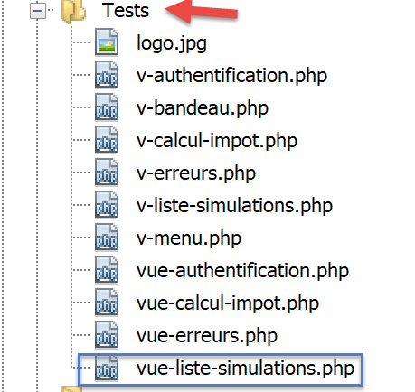
سيكون نموذج البيانات لعرض [simulation-list-view] كما يلي:
<?php
// calculate the view model
$modèle = getModelForThisView();
function getModelForThisView(): object {
// encapsulate paged data in $modèle
$modèle = new \stdClass();
// put the simulations in the format expected by the page
$modèle->simulations = [
[
"marié" => "oui",
"enfants" => 2,
"salaire" => 60000,
"impôt" => 448,
"décôte" => 100,
"réduction" => 20,
"surcôte" => 0,
"taux" => 0.14
],
[
"marié" => "non",
"enfants" => 2,
"salaire" => 200000,
"impôt" => 25600,
"décôte" => 0,
"réduction" => 0,
"surcôte" => 8400,
"taux" => 0.45
]
];
// menu options
$modèle->optionsMenu = [
"Calcul de l'impôt" => "main.php?action=afficher-calcul-impot",
"Fin de session" => "main.php?action=fin-session"];
// banner image
$modèle->logo = "http://localhost/php7/scripts-web/impots/version-12/Tests/logo.jpg";
// we render the model
return $modèle;
}
?>
<!-- document HTML -->
<!doctype html>
<html lang="fr">
<head>
…
</head>
<body>
…
</body>
</html>
تعليقات
- الأسطر 9–30: جدول المحاكاة المعروض بواسطة جدول HTML؛
- الأسطر 32–34: جدول خيارات القائمة؛
دعونا نعرض هذا العرض:

نحصل على النتيجة التالية:

نعمل على هذا العرض حتى نكون راضين عن النتيجة المرئية. يمكننا بعد ذلك المضي قدماً في دمج العرض في تطبيق الويب قيد التطوير حالياً.
23.13.4.3. حساب نموذج العرض

بمجرد تحديد المظهر البصري للعرض، يمكننا المضي قدمًا في حساب نموذج العرض في ظل الظروف الواقعية. دعونا نراجع رموز الحالة التي تؤدي إلى هذا العرض. يمكن العثور عليها في ملف التكوين:
"vues": {
"vue-authentification.php": [700, 221, 400],
"vue-calcul-impot.php": [200, 300, 341, 350, 800],
"vue-liste-simulations.php": [500, 600]
},
"vue-erreurs": "vue-erreurs.php"
وبالتالي، فإن رموز الحالة [500، 600] هي التي تعرض شاشة المحاكاة. وللتعرف على معنى هذه الرموز، يمكننا الرجوع إلى اختبارات [Postman] التي أُجريت على تطبيق JSON:
- [list-simulations-500]: 500 هو رمز الحالة الذي يتبع إجراء [list-simulations] الناجح: ثم يتم عرض قائمة المحاكاة التي أجراها المستخدم؛
- [delete-simulation-600]: 600 هو رمز الحالة الذي يتبع إجراء [delete-simulation] الناجح. ثم يتم عرض قائمة المحاكاة الجديدة التي تم الحصول عليها بعد هذا الحذف؛
الآن بعد أن عرفنا متى يجب عرض قائمة المحاكاة، يمكننا حساب قالبها في [view-simulation-list.php]:
<?php
// we inherit the following variables
// Request $request : la requête en cours
// Session $session: the application session
// array $config: application configuration
// array $content: controller response
// no errors possible
// array $content: controller response
//
// symfony dependencies
use Symfony\Component\HttpFoundation\Request;
use Symfony\Component\HttpFoundation\Session\Session;
// calculate the view model
$modèle = getModelForThisView($request, $session, $config, $content);
function getModelForThisView(Request $request, Session $session, array $config, array $content): object {
// encapsulate paged data in $modèle
$modèle = new \stdClass();
// put the simulations in the format expected by the page
// they are found in the response of the controller that executed the action
// as an array of objects of type [Simulation]
$objetsSimulation = $content["réponse"];
// each [Simulation] object will be transformed into an associative array
$modèle->simulations = [];
foreach ($objetsSimulation as $objetSimulation) {
$modèle->simulations[] = [
"marié" => $objetSimulation->getMarié(),
"enfants" => $objetSimulation->getEnfants(),
"salaire" => $objetSimulation->getSalaire(),
"impôt" => $objetSimulation->getImpôt(),
"surcôte" => $objetSimulation->getSurcôte(),
"décôte" => $objetSimulation->getdécôte(),
"réduction" => $objetSimulation->getRéduction(),
"taux" => $objetSimulation->getTaux()
];
}
// menu options
$modèle->optionsMenu = [
"Calcul de l'impôt" => "main.php?action=afficher-calcul-impot",
"Fin de session" => "main.php?action=fin-session"];
// we render the model
return $modèle;
}
?>
<!-- document HTML -->
<!doctype html>
<html lang="fr">
<head>
…
</head>
<body>
…
</body>
</html>
تعليقات
- الأسطر 26–36: حساب القالب [$template→simulations] المستخدم من قبل الجزء [v-list-simulations.php]؛
- الأسطر 39-41: حساب القالب [$template→optionsMenu] المستخدم من قبل الجزء [v-menu.php]؛
23.13.4.4. [Postman] الاختبارات
يعرض اختبار [list-simulations-500] رمز الحالة 500. وهو يتوافق مع طلب لعرض المحاكاة:

يعرض اختبار [delete-simulation-600] رمز الحالة 600. وهو يتوافق مع الحذف الناجح للمحاكاة رقم 0. والنتيجة المعروضة هي قائمة بالمحاكاة مع فقدان محاكاة واحدة:

23.13.5. عرض الأخطاء غير المتوقعة
هنا، نشير إلى الخطأ غير المتوقع على أنه خطأ لم يكن من المفترض أن يحدث أثناء الاستخدام العادي لتطبيق الويب.
لنأخذ على سبيل المثال اختبار [Postman] [calculate-tax-3xx] المُعرَّف على النحو التالي:
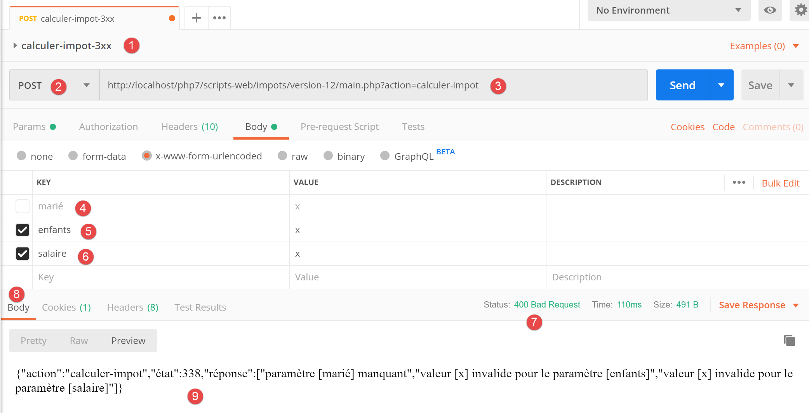
- في [1-3]، طلب POST مع الإجراء [calculer-impot]؛
- في [4-6]: هنا يمكننا تعريف ما نريد للمعلمات الثلاثة لطلب POST:
- [4]: المعلمة [marié] مفقودة؛
- [5-6]: معلمات [children, salary] موجودة ولكنها غير صالحة؛
- في [9]، يتم الإبلاغ عن هذه الأخطاء الثلاثة برمز الحالة 338؛
ومع ذلك، لا يمكن أن يحدث هذا السيناريو في نموذج HTML الخاص بالتطبيق الويب:
- جميع المعلمات موجودة؛
- يجب أن يكون للمعلمة [married]، التي تأخذ قيمتها من سمات [value] لزرين من أزرار الاختيار، إحدى القيمتين [yes] أو [no]؛
- في المتصفحات الحديثة، تضمن سمات <input type='number' min='0' step='1' …> أن تكون قيمتي children و salary بالضرورة أعدادًا صحيحة >=0؛
ومع ذلك، لا شيء يمنع المستخدم من استخدام [Postman] لإرسال اختبار [calcul-impot-3xx] أعلاه إلى خادمنا. وقد رأينا أن تطبيق الويب الخاص بنا يعرف كيفية الاستجابة بشكل صحيح لهذا الطلب. سنشير إلى "خطأ غير متوقع" على أنه خطأ لا ينبغي أن يحدث في سياق تطبيق HTML. إذا حدث ذلك، فمن المحتمل أن يكون هناك شخص ما يحاول "اختراق" التطبيق. لأغراض تعليمية، قررنا عرض صفحة خطأ لهذه الحالات. في الواقع، يمكننا ببساطة إعادة عرض آخر صفحة تم إرسالها إلى العميل. للقيام بذلك، ما عليك سوى تخزين آخر استجابة HTML تم إرسالها في الجلسة. في حالة حدوث خطأ غير متوقع، نقوم بإرجاع هذه الاستجابة. بهذه الطريقة، سيكون لدى المستخدم انطباع بأن الخادم لا يستجيب لأخطائه لأن الصفحة المعروضة لا تتغير.
23.13.5.1. عرض العرض التقديمي
الطريقة التي تعرض الأخطاء غير المتوقعة هي كما يلي:
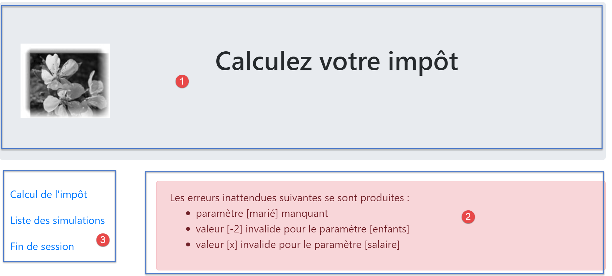
تتكون الصفحة التي تم إنشاؤها بواسطة البرنامج النصي [vue-erreurs.php] من ثلاثة أجزاء:
- 1: يتم إنشاء الشعار العلوي بواسطة جزء [v-banner.php] الذي تم عرضه سابقًا؛
- 2: الأخطاء غير المتوقعة؛
- 3: قائمة تحتوي على ثلاثة روابط، تم إنشاؤها بواسطة الجزء [v-menu.php]؛
يتم إنشاء عرض الأخطاء غير المتوقعة بواسطة البرنامج النصي [vue-erreurs.php] التالي:

<?php
// calculate the view model
$modèle = getModelForThisView();
function getModelForThisView(): object {
// encapsulate paged data in $modèle
$modèle = new \stdClass();
…
// we return the model
return $modèle;
}
?>
<!-- document HTML -->
<!doctype html>
<html lang="fr">
<head>
<!-- Required meta tags -->
<meta charset="utf-8">
<meta name="viewport" content="width=device-width, initial-scale=1, shrink-to-fit=no">
<!-- Bootstrap CSS -->
<link rel="stylesheet" href="https://stackpath.bootstrapcdn.com/bootstrap/4.1.3/css/bootstrap.min.css" integrity="sha384-MCw98/SFnGE8fJT3GXwEOngsV7Zt27NXFoaoApmYm81iuXoPkFOJwJ8ERdknLPMO" crossorigin="anonymous">
<title>Application impots</title>
</head>
<body>
<div class="container">
<!-- bandeau sur 12 colonnes -->
<?php require "v-bandeau.php"; ?>
<!-- ligne à deux colonnes -->
<div class="row">
<!-- menu sur 3 colonnes-->
<div class="col-md-3">
<?php require "v-menu.php" ?>
</div>
<!-- liste des erreurs -->
<div class="col-md-9">
<?php
print <<<EOT
<div class="alert alert-danger" role="alert">
Les erreurs inattendues suivantes se sont produites :
<ul>$modèle->erreurs</ul>
</div>
EOT;
?>
</div>
</div>
</div>
</body>
</html>
تعليقات
- السطر 27: إدراج شعار التطبيق [1]؛
- السطر 32: إدراج القائمة [2]. سيتم عرضها في ثلاثة أعمدة أسفل الشعار؛
- الأسطر 34-44: عرض منطقة الخطأ عبر تسعة أعمدة؛
- الأسطر 37-44: عملية [print] التي تعرض الأخطاء غير المتوقعة؛
- السطر 38: سيظهر هذا العرض في حاوية Bootstrap بخلفية وردية؛
- السطر 39: نص تمهيدي؛
- السطر 40: تحيط علامة <ul> بقائمة نقطية. يتم توفير هذه القائمة النقطية بواسطة النموذج [$model->errors]؛
لقد قمنا بالفعل بالتعليق على جزأين من هذا العرض:
23.13.5.2. الاختبار المرئي
نجمع هذه العناصر المختلفة في مجلد [Tests] وننشئ قالب اختبار للعرض [vue-erreurs.php]:

سيكون نموذج البيانات للعرض [vue-erreurs.php] كما يلي:
<?php
// calculate the view model
$modèle = getModelForThisView();
function getModelForThisView(): object {
// encapsulate paged data in $modèle
$modèle = new \stdClass();
// the table of unexpected errors
$erreurs = ["erreur1", "erreur2"];
// build the HTML list of errors
$modèle->erreurs = "";
foreach ($erreurs as $erreur) {
$modèle->erreurs .= "<li>$erreur</li>";
}
// menu options
$modèle->optionsMenu = [
"Calcul de l'impôt" => "main.php?action=afficher-calcul-impot",
"Liste des simulations" => "main.php?action=lister-simulations",
"Fin de session" => "main.php?action=fin-session",];
// banner image
$modèle->logo = "http://localhost/php7/scripts-web/impots/version-12/Tests/logo.jpg";
// we return the model
return $modèle;
}
?>
<!-- document HTML -->
<!doctype html>
<html lang="fr">
<head>
…
</head>
<body>
…
</body>
</html>
تعليقات
- الأسطر 9–15: إنشاء قائمة أخطاء HTML؛
- الأسطر 17–20: مصفوفة خيارات القائمة؛
دعونا نعرض هذا العرض:

نحصل على النتيجة التالية:

نعمل على هذا العرض حتى نكون راضين عن النتيجة المرئية. يمكننا بعد ذلك المضي قدماً في دمج العرض في تطبيق الويب قيد التطوير حالياً.
23.13.5.3. حساب نموذج العرض

بمجرد تحديد المظهر المرئي للعرض، يمكننا المضي قدمًا في حساب نموذج العرض في ظل الظروف الواقعية. دعونا نراجع رموز الحالة التي تؤدي إلى هذا العرض. يمكن العثور عليها في ملف التكوين:
"vues": {
"vue-authentification.php": [700, 221, 400],
"vue-calcul-impot.php": [200, 300, 341, 350, 800],
"vue-liste-simulations.php": [500, 600]
},
"vue-erreurs": "vue-erreurs.php"
وبالتالي، فإن رموز الحالة غير المدرجة في الأسطر [2–4] هي التي تؤدي إلى عرض صفحة الأخطاء غير المتوقعة.
فيما يلي كود حساب قالب العرض [vue-erreurs.php]:
<?php
// we inherit the following variables
// Request $request : la requête en cours
// Session $session: the application session
// array $config: application configuration
// array $content: controller response
//
// symfony dependencies
use Symfony\Component\HttpFoundation\Request;
use Symfony\Component\HttpFoundation\Session\Session;
// calculate the view model
$modèle = getModelForThisView($request, $session, $config, $content);
function getModelForThisView(Request $request, Session $session, array $config, array $content): object {
// encapsulate paged data in $modèle
$modèle = new \stdClass();
// recover errors from the controller response
$réponse = $content["réponse"];
if (!is_array($réponse)) {
// a single error message
$erreurs = [$réponse];
} else {
// several error messages
$erreurs = $réponse;
}
// build the HTML list of errors
$modèle->erreurs = "";
foreach ($erreurs as $erreur) {
$modèle->erreurs .= "<li>$erreur</li>";
}
// menu options
$modèle->optionsMenu = [
"Calcul de l'impôt" => "main.php?action=afficher-calcul-impot",
"Liste des simulations" => "main.php?action=lister-simulations",
"Fin de session" => "main.php?action=fin-session",];
// we return the model
return $modèle;
}
?>
<!-- document HTML -->
<!doctype html>
<html lang="fr">
<head>
…
</head>
<body>
…
</body>
</html>
تعليقات
- الأسطر 19–32: حساب القالب [$template→errors] المستخدم من قبل العرض [view-errors.php]؛
- الأسطر 34-37: حساب القالب [$template→optionsMenu] المستخدم من قبل الجزء [v-menu.php]؛
23.13.5.4. الاختبارات [Postman]
يعرض اختبار [calculate-tax-3xx] رمز الحالة 338، وهو رمز حالة غير متوقع. استجابة HTML هي كما يلي:

23.13.6. تنفيذ إجراءات قائمة التطبيق
سنناقش هنا تنفيذ إجراءات القائمة. دعونا نستعرض معنى الروابط التي صادفناها
عرض | الرابط | الهدف | الدور |
حساب الضرائب | [قائمة المحاكاة] | [main.php?action=list-simulations] | طلب قائمة المحاكاة |
[إنهاء الجلسة] | |||
قائمة المحاكاة | [حساب الضريبة] | [main.php?action=display-tax-calculation] | عرض طريقة حساب الضريبة |
[تسجيل الخروج] | |||
أخطاء غير متوقعة | [حساب الضريبة] | [main.php?action=display-tax-calculation] | عرض طريقة حساب الضريبة |
[قائمة المحاكاة] | |||
[إنهاء الجلسة] |
من المهم ملاحظة أن النقر على رابط يؤدي إلى إرسال طلب GET إلى وجهة الرابط. تم تنفيذ الإجراءين [lister-simulations، fin-session] باستخدام عملية GET، مما يسمح لنا باستخدامهما كوجهات للروابط. عندما يتم تنفيذ الإجراء عبر طلب POST، لا يصبح استخدام الرابط ممكنًا ما لم يتم دمجه مع JavaScript.
من الإجراءات المذكورة أعلاه، يبدو أن الإجراء [display-tax-calculation] لم يتم تنفيذه بعد. هذه عملية تنقل بين عرضين: لا يوجد سبب يدعو خادم JSON أو XML إلى تنفيذها لأنهما لا يمتلكان مفهوم العرض. خادم HTML هو الذي يقدم هذا المفهوم.
لذلك، نحتاج إلى تنفيذ الإجراء [display-tax-calculation]. سيسمح لنا ذلك بمراجعة إجراءات تنفيذ إجراء داخل الخادم.
أولاً، نحتاج إلى إضافة وحدة تحكم ثانوية جديدة. سنسميها [AfficherCalculImpotController]:

يجب إضافة وحدة التحكم هذه إلى ملف التكوين [config.json]:
{
"databaseFilename": "database.json",
"rootDirectory": "C:/myprograms/laragon-lite/www/php7/scripts-web/impots/version-12",
"relativeDependencies": [
…
"/Controllers/InterfaceController.php",
"/Controllers/InitSessionController.php",
"/Controllers/ListerSimulationsController.php",
"/Controllers/AuthentifierUtilisateurController.php",
"/Controllers/CalculerImpotController.php",
"/Controllers/SupprimerSimulationController.php",
"/Controllers/FinSessionController.php",
"/Controllers/AfficherCalculImpotController.php"
],
"absoluteDependencies": [
"C:/myprograms/laragon-lite/www/vendor/autoload.php",
"C:/myprograms/laragon-lite/www/vendor/predis/predis/autoload.php"
],
…
"actions":
{
"init-session": "\\InitSessionController",
"authentifier-utilisateur": "\\AuthentifierUtilisateurController",
"calculer-impot": "\\CalculerImpotController",
"lister-simulations": "\\ListerSimulationsController",
"supprimer-simulation": "\\SupprimerSimulationController",
"fin-session": "\\FinSessionController",
"afficher-calcul-impot": "\\AfficherCalculImpotController"
},
…
"vues": {
"vue-authentification.php": [700, 221, 400],
"vue-calcul-impot.php": [200, 300, 341, 350, 800],
"vue-liste-simulations.php": [500, 600]
},
"vue-erreurs": "vue-erreurs.php"
}
- السطر 15: وحدة التحكم الجديدة؛
- السطر 30: الإجراء الجديد ووحدة التحكم الخاصة به؛
- السطر 35: ستُرجع وحدة التحكم الجديدة رمز الحالة 800. عند تبديل العروض، لا يمكن أن يكون هناك خطأ؛
ستبدو وحدة التحكم [AfficherCalculImpotController.php] كما يلي:
<?php
namespace Application;
// symfony dependencies
use Symfony\Component\HttpFoundation\Request;
use Symfony\Component\HttpFoundation\Session\Session;
use Symfony\Component\HttpFoundation\Response;
class AfficherCalculImpotController implements InterfaceController {
// $config is the application configuration
// traitement d'une requête Request
// session and can modify it
// $infos is additional information specific to each controller
// renders an array [$statusCode, $état, $content, $headers]
public function execute(
array $config,
Request $request,
Session $session,
array $infos = NULL): array {
// view change - just a status code to set
return [Response::HTTP_OK, 800, ["réponse" => ""], []];
}
}
تعليقات
- السطر 10: مثل وحدات التحكم الثانوية الأخرى، تنفذ وحدة التحكم الجديدة واجهة [InterfaceController]؛
- من السهل تنفيذ تغييرات العرض: ما عليك سوى إرجاع رمز الحالة المرتبط بالعرض المستهدف، وهو في هذه الحالة الرمز 800 كما هو موضح أعلاه؛
23.13.7. الاختبار في العالم الواقعي
تمت كتابة الكود واختبار كل إجراء باستخدام [Postman]. ما زلنا بحاجة إلى اختبار تدفق العرض في سيناريو واقعي. نحتاج إلى طريقة لتهيئة جلسة HTML. نعلم أننا بحاجة إلى إرسال المعلمات [action=init-session&type=html] إلى الخادم. لتجنب الحاجة إلى كتابتها في شريط عنوان المتصفح، سنضيف البرنامج النصي [index.php] إلى تطبيقنا:

سيكون البرنامج النصي [index.php] كما يلي:
<?php
// redirect to [main.php] in [html] mode
header('Location: main.php?action=init-session&type=html');
- السطر 4: [header] هي دالة PHP تضيف رأس HTTP إلى الاستجابة. يُوجه رأس HTTP [Location: main.php?action=init-session&type=html] متصفح العميل لإعادة التوجيه إلى عنوان URL الهدف المحدد في [Location]. يتم طلب البرنامج النصي [index.php] باستخدام عنوان URL [http://localhost/php7/scripts-web/impots/version-12/index.php]. عندما يتلقى متصفح العميل إعادة التوجيه إلى عنوان URL النسبي [main.php?action=init-session&type=html]، سيطلب عنوان URL المطلق [http://localhost/php7/scripts-web/impots/version-12/main.php?action=init-session&type=html] وستبدأ جلسة HTML؛
يمكن تبسيط عنوان URL لبدء التشغيل ليصبح [http://localhost/php7/scripts-web/impots/version-12/]. إذا لم يتم تحديد أي صفحة في عنوان URL، فسيتم استخدام الصفحتين [index.html، index.php] بشكل افتراضي. وبالتالي، سيتم هنا استخدام البرنامج النصي [index.php]؛
لنبدأ: سنقدم الآن بعض تسلسلات العرض.
في متصفحنا، نقوم بتمكين أدوات المطور (F12 في Firefox) ونطلب عنوان URL لبدء التشغيل [https://localhost/php7/scripts-web/impots/version-12/]:

- في [4]، يكون الرد الأول للخادم هو إعادة توجيه 302:
- في [5]، يتم إرسال طلب جديد إلى عنوان URL [http://localhost/php7/scripts-web/impots/13/main.php?action=init-session&type=html]؛
دعونا نلقي نظرة فاحصة على إعادة التوجيه 302:

- في [8]، رمز HTTP [302] هو رمز إعادة توجيه: يتم إخطار متصفح العميل بأن عنوان URL المطلوب قد تم نقله. يتم تحديد عنوان URL الجديد في [9]. سيتبع المتصفح إعادة التوجيه هذه بطلب GET جديد:

- في [12-13]، الطلب الجديد الذي أرسله المتصفح؛
دعونا نملأ النموذج الذي تلقيناه؛

ثم دعونا نجري بعض المحاكاة:


دعونا نطلب قائمة عمليات المحاكاة:

احذف المحاكاة الأولى:

إنهاء الجلسة:

ندعو القارئ إلى إجراء اختبارات إضافية.
23.14. عميل خدمة الويب jSON
23.14.1. بنية العميل/الخادم
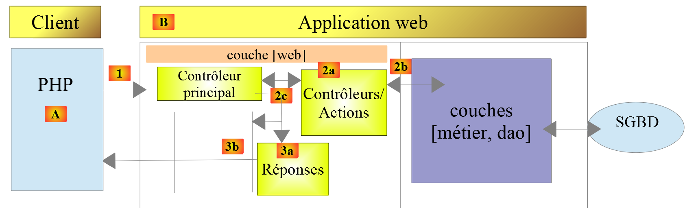
سنركز الآن على عميل JSON [A] لخدمة الويب [B]. يتمتع العميل [A]، مثل خدمة الويب [B]، بهيكل متعدد الطبقات:

تنعكس هذه البنية في تنظيم الكود التالي:
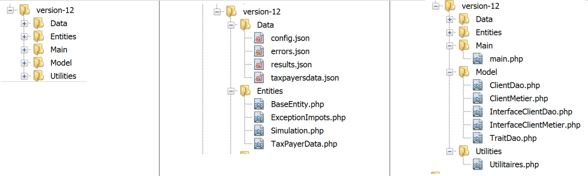
تم بالفعل تقديم وشرح معظم الفئات:
رابط الفقرة. | |
رابط الفقرة. | |
رابط الفقرة. | |
رابط الفقرة. | |
رابط الفقرة. | |
رابط الفقرة. |
23.14.2. طبقة [dao]

23.14.2.1. الواجهة
ستكون واجهة طبقة [dao] كما يلي [InterfaceClientDao.php]:
<?php
// namespace
namespace Application;
interface InterfaceClientDao {
// reading taxpayer data
public function getTaxPayersData(string $taxPayersFilename, string $errorsFilename): array;
// calculating a taxpayer's taxes
public function calculerImpot(string $marié, int $enfants, int $salaire): Simulation;
// recording results
public function saveResults(string $resultsFilename, array $simulations): void;
// authentication
public function authentifierUtilisateur(String $user, string $password): void;
// list of simulations
public function listerSimulations(): array;
// delete a simulation
public function supprimerSimulation(int $numéro): array;
// start of session
public function initSession(string $type = 'json'): void;
// end of session
public function finSession(): void;
}
تعليقات
- السطر 9: تسمح لك طريقة [getTaxPayersData] باستخدام ملف JSON الذي يحتوي على بيانات دافعي الضرائب. يتم تنفيذ هذه الطريقة بواسطة السمة [TraitDao]، التي تمت مناقشتها بالفعل (انظر الفقرة المرتبطة)؛
- السطر 15: تحفظ طريقة [saveResults] نتائج حسابات ضريبية متعددة في ملف JSON. وهنا أيضًا، يتم تنفيذ هذه الطريقة بواسطة السمة [TraitDao] التي تمت مناقشتها سابقًا (انظر الفقرة المرتبطة)؛
- الأسطر 12 و18 و21 و27 و30: تم إنشاء طريقة لكل إجراء تقبله خدمة الويب؛
23.14.2.2. التنفيذ
يتم تنفيذ واجهة [InterfaceClientDao] بواسطة فئة [ClientDao] التالية:
<?php
namespace Application;
// dependencies
use Symfony\Component\HttpClient\HttpClient;
use Symfony\Component\HttpClient\Response\CurlResponse;
class ClientDao implements InterfaceClientDao {
// using a Trait
use TraitDao;
// attributes
private $urlServer;
private $sessionCookie;
private $verbose;
// manufacturer
public function __construct(string $urlServer, bool $verbose = TRUE) {
$this->urlServer = $urlServer;
$this->verbose = $verbose;
}
…
}
تعليقات
- الأسطر 18–21: يتلقى المنشئ معلمتين:
- عنوان URL [$urlServer] لخدمة الويب JSON؛
- قيمة منطقية [$verbose] تشير، عند تعيينها إلى TRUE، إلى أن الفئة يجب أن تعرض استجابات الخادم على وحدة التحكم؛
- السطر 14: ملف تعريف الارتباط الخاص بالجلسة. تم وصف دوره في الإصدار 09 من العميل (الفقرة التي تحتوي على الرابط)؛
- السطر 11: تستخدم الفئة السمة [TraitDao]، التي تنفذ طريقتين من واجهة:
- [getTaxPayersData(string $taxPayersFilename, string $errorsFilename): array];
- [function calculateTax(string $married, int $children, int $salary): Simulation];
23.14.2.2.1. طريقة [initSession]
يتم تنفيذ الطريقة [initSession] على النحو التالي:
public function initSession(string $type = 'json'): void {
// create a HTTP customer
$httpClient = HttpClient::create();
// make the request to the server without authentication
$response = $httpClient->request('GET', $this->urlServer,
["query" => [
"action" => "init-session",
"type" => $type
],
"verify_peer" => false
]);
// the answer is retrieved
$this->getResponse($response);
// retrieve the session cookie
$headers = $response->getHeaders();
if (isset($headers["set-cookie"])) {
// session cookie ?
foreach ($headers["set-cookie"] as $cookie) {
$match = [];
$match = preg_match("/^PHPSESSID=(.+?);/", $cookie, $champs);
if ($match) {
$this->sessionCookie = "PHPSESSID=" . $champs[1];
}
}
}
}
نظرًا لأن الإجراء [init-session] يجب أن يكون أول إجراء يُطلب من خدمة الويب، فإن الطريقة [initSession] ستكون أول طريقة في طبقة [dao] يتم استدعاؤها.
تعليقات
- السطر 1: يتم تمرير نوع الجلسة المطلوب كمعلمة. إذا لم يتم توفير أي معلمة، فسيتم بدء جلسة JSON؛
- الأسطر 5–11: يتم إرسال طلب GET إلى خدمة الويب؛
- السطران 7-8: معلمتا GET؛
- السطر 10: في حالة الاتصال الآمن (HTTPS)، لن يتم التحقق من شهادة الأمان المرسلة من خدمة الويب؛
- السطر 13: تسترد طريقة [getResponse] استجابة الخادم. وتُرجعها في صورة مصفوفة. هنا، لا يتم استخدام نتيجة الطريقة. ترمي طريقة [getResponse] استثناءً إذا لم يكن رمز حالة HTTP لاستجابة خدمة الويب هو 200 OK؛
- السطور 14–25: نظرًا لأن طريقة [initSession] هي أول طريقة يتم تنفيذها في طبقة [dao]، فإننا نسترد ملف تعريف ارتباط الجلسة حتى تتمكن الطرق اللاحقة من إرساله مرة أخرى إلى خدمة الويب. وقد تم التعليق على هذا الرمز بالفعل في الإصدار 09؛
23.14.2.2.2. طريقة [getResponse]
طريقة [getResponse] مسؤولة عن معالجة استجابة خدمة الويب:
private function getResponse(CurlResponse $response) {
// the answer is retrieved
$json = $response->getContent(false);
// logs
if ($this->verbose) {
print "$json\n";
}
// retrieve response status
$statusCode = $response->getStatusCode();
// mistake?
if ($statusCode !== 200) {
// we have an error
throw new ExceptionImpots($json);
}
// we give our answer
$array = json_decode($json, true);
return $array["réponse"];
}
تعليقات
- السطر 1: الطريقة خاصة؛
- السطر 1: معلمة الطريقة هي استجابة خدمة الويب من النوع [Symfony\Component\HttpClient\Response\CurlResponse]، وهو نوع استجابة Symfony، عندما يتم تنفيذ [HttpClient] بواسطة [CurlClient]، أي بواسطة مكتبة [curl]؛
- السطر 3: نسترد استجابة JSON من الخادم. لاحظ أن المعلمة [false] موجودة لمنع Symfony من إلقاء استثناء عندما تكون حالة استجابة HTTP للخادم في النطاق [3xx, 4xx, 5xx]؛
- الأسطر 5–7: إذا كنا في وضع [$verbose]، فإننا نعرض استجابة الخادم على وحدة التحكم؛
- الأسطر 9–14: إذا لم تكن حالة استجابة HTTP للخادم هي 200، يتم إلقاء استثناء مع استجابة JSON للخادم كرسالة خطأ؛
- السطر 16: يتم فك تشفير سلسلة JSON إلى مصفوفة؛
- السطر 17: المعلومات المفيدة موجودة في [$array["response"]]؛
23.14.2.2.3. طريقة [authenticateUser]
طريقة [authenticateUser] هي كما يلي:
public function authentifierUtilisateur(string $user, string $password): void {
// create a HTTP customer
$httpClient = HttpClient::create();
// make a request to the server with authentication
$response = $httpClient->request('POST', $this->urlServer,
["query" => [
"action" => "authentifier-utilisateur"
],
"body" => [
"user" => $user,
"password" => $password
],
"verify_peer" => false,
"headers" => ["Cookie" => $this->sessionCookie]
]);
// the answer is retrieved
$this->getResponse($response);
}
تعليقات
- السطر 5: طلب العميل هو POST؛
- الأسطر 6–8: المعلمات في عنوان URL؛
- الأسطر 9-12: معلمات POST؛
- السطر 14: ملف تعريف ارتباط الجلسة؛
- السطر 17: نقرأ الاستجابة. نعلم أنه في حالة وجود خطأ (رمز حالة HTTP بخلاف 200)، فإن طريقة [getResponse] ترمي استثناءً بنفسها؛
23.14.2.2.4. طريقة [calculateTax]
public function calculerImpot(string $marié, int $enfants, int $salaire): Simulation {
// create a HTTP customer
$httpClient = HttpClient::create();
// make the request to the server without authentication but with the session cookie
$response = $httpClient->request('POST', $this->urlServer,
["query" => [
"action" => "calculer-impot"],
"body" => [
"marié" => $marié,
"enfants" => $enfants,
"salaire" => $salaire
],
"verify_peer" => false,
"headers" => ["Cookie" => $this->sessionCookie]
]);
// the answer is retrieved
$array = $this->getResponse($response);
return (new Simulation())->setFromArrayOfAttributes($array);
}
تعليقات
- السطران 6-7: معلمة URL الوحيدة؛
- الأسطر 8–12: معلمات POST الثلاثة (السطر 5)؛
- السطر 17: تتم معالجة الاستجابة؛
- السطر 18: إذا وصلنا إلى هذه النقطة، فهذا يعني أن طريقة [getResponse] لم ترمي استثناءً. نُرجع كائن [Simulation] مُهيأً بالمصفوفة التي أرجعتها [getResponse]؛
23.14.2.2.5. طريقة [listerSimulations]
public function listerSimulations(): array {
// create a HTTP customer
$httpClient = HttpClient::create();
// make the request to the server without authentication but with the session cookie
$response = $httpClient->request('GET', $this->urlServer,
["query" => [
"action" => "lister-simulations"
],
"verify_peer" => false,
"headers" => ["Cookie" => $this->sessionCookie]
]);
// the answer is retrieved
return $this->getSimulations($response);
}
تعليقات
- السطر 5: طريقة GET؛
- الأسطر 6–8: المعلمة GET الوحيدة؛
- السطر 13: يتم التعامل مع استرداد المحاكاة بواسطة الطريقة الخاصة [getSimulations]؛
23.14.2.2.6. طريقة [getSimulations]
private function getSimulations(CurlResponse $response): array {
// we retrieve the JSON response
$array = $this->getResponse($response);
// we have an array of associative objects
// we'll turn it into an array of Simulation objects
$simulations = [];
foreach ($array as $simulation) {
$simulations [] = (new Simulation())->setFromArrayOfAttributes($simulation);
}
// we render the Simulation object list
return $simulations;
}
تعليقات
- السطر 3: نسترد المصفوفة من الاستجابة. وهي عبارة عن مصفوفة من المصفوفات، يحتوي كل منها على جميع سمات كائن [Simulation]؛
- السطر 6: إذا وصلنا إلى هذه النقطة، فهذا يعني أن طريقة [getResponse] لم تُحدث استثناءً؛
- الأسطر 6–9: نستخدم الاستجابة لإنشاء مصفوفة من كائنات [Simulation]؛
- السطر 11: نُرجع هذه المصفوفة؛
23.14.2.2.7. طريقة [DeleteSimulation]
public function supprimerSimulation(int $numéro): array {
// create a HTTP customer
$httpClient = HttpClient::create();
// make the request to the server without authentication but with the session cookie
$response = $httpClient->request('GET', $this->urlServer,
["query" => [
"action" => "supprimer-simulation",
"numéro" => $numéro
],
"verify_peer" => false,
"headers" => ["Cookie" => $this->sessionCookie]
]);
// the answer is retrieved
return $this->getSimulations($response);
}
تعليقات
- السطر 5: يتم إرسال طلب GET؛
- الأسطر 6–9: معلمتا URL؛
- السطر 14: بعد الحذف، يعرض الخادم المصفوفة الجديدة للمحاكاة. ونحن نعرض هذه المصفوفة؛
23.14.2.2.8. طريقة [endSession]
عادةً ما تنتهي الجلسة مع خدمة الويب باستدعاء طريقة [finSession]:
public function finSession(): void {
// create a HTTP customer
$httpClient = HttpClient::create();
// make the request to the server without authentication but with the session cookie
$response = $httpClient->request('GET', $this->urlServer,
["query" => [
"action" => "fin-session"
],
"verify_peer" => false,
"headers" => ["Cookie" => $this->sessionCookie]
]);
// the answer is retrieved
$this->getResponse($response);
}
تعليقات
- السطر 5: نرسل طلب GET؛
- الأسطر 6–8: معلمة URL الوحيدة؛
- السطر 13: نقرأ الاستجابة. سيتم إلقاء استثناء إذا لم يكن رمز حالة HTTP للاستجابة هو 200؛
23.14.3. طبقة [الأعمال]

23.14.3.1. الواجهة
الواجهة الخاصة بطبقة [الأعمال] هي كما يلي [InterfaceClientMetier.php]:
<?php
// namespace
namespace Application;
interface InterfaceClientMetier {
// calculating a taxpayer's taxes
public function calculerImpot(string $marié, int $enfants, int $salaire): Simulation;
// batch mode tax calculation
public function executeBatchImpots(string $taxPayersFileName, string $resultsFilename, string $errorsFileName): void;
// authentication
public function authentifierUtilisateur(String $user, string $password): void;
// list of simulations
public function listerSimulations(): array;
// recording results
public function saveResults(string $resultsFilename, array $simulations): void;
// delete a simulation
public function supprimerSimulation(int $numéro): array;
// start of session
public function initSession(string $type = 'json'): void;
// end of session
public function finSession(): void;
}
تعليقات
- فقط الطريقة [executeBatchImports] في السطر 12 هي الخاصة بطبقة [business]. أما الباقي فينتمي إلى طبقة [DAO]، التي تقوم بتنفيذها؛
23.14.3.2. فئة [ClientMetier]
الفئة التي تنفذ طبقة [business] هي كما يلي:
<?php
namespace Application;
class ClientMetier implements InterfaceClientMetier {
// attribute
private $clientDao;
// manufacturer
public function __construct(InterfaceClientDao $clientDao) {
$this->clientDao = $clientDao;
}
// tAX CALCULATION
public function calculerImpot(string $marié, int $enfants, int $salaire): Simulation {
return $this->clientDao->calculerImpot($marié, $enfants, $salaire);
}
// batch mode tax calculation
public function executeBatchImpots(string $taxPayersFileName, string $resultsFileName, string $errorsFileName): void {
// we let the exceptions coming from the [dao] layer flow upwards
// retrieve taxpayer data
$taxPayersData = $this->clientDao->getTaxPayersData($taxPayersFileName, $errorsFileName);
// results table
$simulations = [];
// we exploit them
foreach ($taxPayersData as $taxPayerData) {
// tax calculation
$simulations [] = $this->calculerImpot(
$taxPayerData->getMarié(),
$taxPayerData->getEnfants(),
$taxPayerData->getSalaire());
}
// recording results
if ($resultsFileName !== NULL) {
$this->clientDao->saveResults($resultsFileName, $simulations);
}
}
public function authentifierUtilisateur(String $user, string $password): void {
$this->clientDao->authentifierUtilisateur($user, $password);
}
public function listerSimulations(): array {
return $this->clientDao->listerSimulations();
}
public function saveResults(string $resultsFilename, array $simulations): void {
$this->clientDao->saveResults($resultsFilename, $simulations);
}
public function supprimerSimulation(int $numéro): array {
return $this->clientDao->supprimerSimulation($numéro);
}
public function finSession(): void {
$this->clientDao->finSession();
}
public function initSession(string $type = 'json'): void {
$this->clientDao->initSession($type);
}
}
تعليقات
- الأسطر 10–12: لكي يتم إنشاؤها، تحتاج طبقة [business] إلى مرجع إلى طبقة [DAO]؛
- الأسطر 20–38: طريقة [executeBatchImports] هي الوحيدة الخاصة بطبقة [business]. تنفيذ الطرق الأخرى يفوض العمل إلى طرق تحمل نفس الأسماء في طبقة [DAO]؛
- السطر 23: نستدعي طبقة [dao] لاسترداد بيانات دافعي الضرائب في مصفوفة من كائنات [TaxPayerData]؛
- السطر 25: يتم تجميع المحاكاة المختلفة المحسوبة في مصفوفة [$simulations]؛
- الأسطر 27-33: نحسب الضريبة لكل دافع ضرائب في مصفوفة [$taxPayersData]؛
- الأسطر 35-37: يتم حفظ النتائج التي تم الحصول عليها في مصفوفة [$simulations] في ملف JSON؛
ملاحظة: لا تقوم طبقة [business] بأي شيء تقريبًا. يمكننا أن نقرر إزالتها ودمج كل شيء في طبقة [DAO].
23.14.4. النص البرمجي الرئيسي

يتم تكوين البرنامج النصي الرئيسي بواسطة ملف [config.json] التالي:
{
"taxPayersDataFileName": "Data/taxpayersdata.json",
"resultsFileName": "Data/results.json",
"errorsFileName": "Data/errors.json",
"rootDirectory": "C:/Data/st-2019/dev/php7/poly/scripts-console/impots/version-12",
"dependencies": [
"/Entities/BaseEntity.php",
"/Entities/TaxPayerData.php",
"/Entities/Simulation.php",
"/Entities/ExceptionImpots.php",
"/Utilities/Utilitaires.php",
"/Model/InterfaceClientDao.php",
"/Model/TraitDao.php",
"/Model/ClientDao.php",
"/Model/InterfaceClientMetier.php",
"/Model/ClientMetier.php"
],
"absoluteDependencies": [
"C:/myprograms/laragon-lite/www/vendor/autoload.php"
],
"user": {
"login": "admin",
"passwd": "admin"
},
"urlServer": "https://localhost:443/php7/scripts-web/impots/version-12/main.php"
}
النص البرمجي الرئيسي [main.php] هو كما يلي:
<?php
// strict adherence to declared types of function parameters
declare(strict_types = 1);
// namespace
namespace Application;
// error handling by PHP
// ini_set("display_errors", "0");
//
// configuration file path
define("CONFIG_FILENAME", "../Data/config.json");
// we retrieve the configuration
$config = \json_decode(file_get_contents(CONFIG_FILENAME), true);
// include the necessary script dependencies
$rootDirectory = $config["rootDirectory"];
foreach ($config["dependencies"] as $dependency) {
require "$rootDirectory/$dependency";
}
// absolute dependencies (third-party libraries)
foreach ($config["absoluteDependencies"] as $dependency) {
require "$dependency";
}
// definition of constants
define("TAXPAYERSDATA_FILENAME", "$rootDirectory/{$config["taxPayersDataFileName"]}");
define("RESULTS_FILENAME", "$rootDirectory/{$config["resultsFileName"]}");
define("ERRORS_FILENAME", "$rootDirectory/{$config["errorsFileName"]}");
//
// symfony dependencies
use Symfony\Component\HttpClient\HttpClient;
// creation of the [dao] layer
$clientDao = new ClientDao($config["urlServer"]);
// creation of the [business] layer
$clientMetier = new ClientMetier($clientDao);
// tax calculation in batch mode
try {
// session initialization
$clientMetier->initSession('json');
// authentication
$clientMetier->authentifierUtilisateur($config["user"]["login"], $config["user"]["passwd"]);
// tax calculation without saving results
$clientMetier->executeBatchImpots(TAXPAYERSDATA_FILENAME, NULL, ERRORS_FILENAME);
// list of simulations
$clientMetier->listerSimulations();
// deleting a simulation
$simulations = $clientMetier->supprimerSimulation(1);
// saving results
$clientMetier->saveResults(RESULTS_FILENAME, $simulations);
// end of session
$clientMetier->finSession();
// action without being authenticated - must crash
$clientMetier->listerSimulations();
} catch (ExceptionImpots $ex) {
// error is displayed
print "Une erreur s'est produite : " . $ex->getMessage() . "\n";
}
// end
print "Terminé\n";
exit();
تعليقات
- الأسطر 12-16: معالجة ملف التكوين [config.json]؛
- الأسطر 18–26: تحميل جميع التبعيات؛
- الأسطر 28-34: تعريف الثوابت والأسماء المستعارة؛
- الأسطر 36-39: إنشاء طبقات [dao] و[business]؛
- السطر 44: تهيئة جلسة JSON؛
- السطر 46: المصادقة مع الخادم؛
- السطر 48: حساب الضريبة لمجموعة من دافعي الضرائب. لا يتم حفظ النتائج (المعلمة الثانية مضبوطة على NULL)؛
- السطر 50: استرداد نتائج جميع هذه الحسابات؛
- السطر 52: حذف المحاكاة رقم 1 (الثانية في القائمة)؛
- السطر 54: حفظ المحاكاة المتبقية؛
- السطر 56: انتهت الجلسة. وهذا يعني حذف ملف تعريف ارتباط الجلسة؛
- السطر 58: نطلب قائمة المحاكاة. نظرًا لحذف ملف تعريف ارتباط الجلسة، يجب إجراء المصادقة مرة أخرى. لذلك، يجب أن نحصل على استثناء يفيد بأننا غير مصدقين؛
ملف [taxpayersdata.json] كما يلي:
[
{
"marié": "oui",
"enfants": 2,
"salaire": 55555
},
{
"marié": "ouix",
"enfants": "2x",
"salaire": "55555x"
},
{
"marié": "oui",
"enfants": "2",
"salaire": 50000
},
{
"marié": "oui",
"enfants": 3,
"salaire": 50000
},
{
"marié": "non",
"enfants": 2,
"salaire": 100000
},
{
"marié": "non",
"enfants": 3,
"salaire": 100000
},
{
"marié": "oui",
"enfants": 3,
"salaire": 100000
},
{
"marié": "oui",
"enfants": 5,
"salaire": 100000
},
{
"marié": "non",
"enfants": 0,
"salaire": 100000
},
{
"marié": "oui",
"enfants": 2,
"salaire": 30000
},
{
"marié": "non",
"enfants": 0,
"salaire": 200000
},
{
"marié": "oui",
"enfants": 3,
"salaire": 20000
}
]
هناك 12 دافع ضرائب، أحدهم غير صحيح. وهذا يجعل المجموع 11 محاكاة. سيتم حذف واحدة منها. ومن المفترض أن يتبقى 10.
بعد تشغيل البرنامج النصي الرئيسي، يبدو ملف JSON [results.json] كما يلي:
[
{
"marié": "oui",
"enfants": "2",
"salaire": "55555",
"impôt": 2814,
"surcôte": 0,
"décôte": 0,
"réduction": 0,
"taux": 0.14
},
{
"marié": "oui",
"enfants": "3",
"salaire": "50000",
"impôt": 0,
"surcôte": 0,
"décôte": 720,
"réduction": 0,
"taux": 0.14
},
{
"marié": "non",
"enfants": "2",
"salaire": "100000",
"impôt": 19884,
"surcôte": 4480,
"décôte": 0,
"réduction": 0,
"taux": 0.41
},
{
"marié": "non",
"enfants": "3",
"salaire": "100000",
"impôt": 16782,
"surcôte": 7176,
"décôte": 0,
"réduction": 0,
"taux": 0.41
},
{
"marié": "oui",
"enfants": "3",
"salaire": "100000",
"impôt": 9200,
"surcôte": 2180,
"décôte": 0,
"réduction": 0,
"taux": 0.3
},
{
"marié": "oui",
"enfants": "5",
"salaire": "100000",
"impôt": 4230,
"surcôte": 0,
"décôte": 0,
"réduction": 0,
"taux": 0.14
},
{
"marié": "non",
"enfants": "0",
"salaire": "100000",
"impôt": 22986,
"surcôte": 0,
"décôte": 0,
"réduction": 0,
"taux": 0.41
},
{
"marié": "oui",
"enfants": "2",
"salaire": "30000",
"impôt": 0,
"surcôte": 0,
"décôte": 0,
"réduction": 0,
"taux": 0
},
{
"marié": "non",
"enfants": "0",
"salaire": "200000",
"impôt": 64210,
"surcôte": 7498,
"décôte": 0,
"réduction": 0,
"taux": 0.45
},
{
"marié": "oui",
"enfants": "3",
"salaire": "20000",
"impôt": 0,
"surcôte": 0,
"décôte": 0,
"réduction": 0,
"taux": 0
}
]
هناك بالفعل 10 محاكاة.
يحتوي ملف JSON [errors.json] على المحتوى التالي:
{
"numéro": 1,
"erreurs": [
{
"marié": "ouix"
},
{
"enfants": "2x"
},
{
"salaire": "55555x"
}
]
}
إخراج وحدة التحكم كما يلي (في الوضع التفصيلي، يتم عرض استجابات JSON الخاصة بالخادم على وحدة التحكم):
{"action":"init-session","état":700,"réponse":"session démarrée avec type [json]"}
{"action":"authentifier-utilisateur","état":200,"réponse":"Authentification réussie [admin, admin]"}
{"action":"calculer-impot","état":300,"réponse":{"marié":"oui","enfants":"2","salaire":"55555","impôt":2814,"surcôte":0,"décôte":0,"réduction":0,"taux":0.14}}
{"action":"calculer-impot","état":300,"réponse":{"marié":"oui","enfants":"2","salaire":"50000","impôt":1384,"surcôte":0,"décôte":384,"réduction":347,"taux":0.14}}
{"action":"calculer-impot","état":300,"réponse":{"marié":"oui","enfants":"3","salaire":"50000","impôt":0,"surcôte":0,"décôte":720,"réduction":0,"taux":0.14}}
{"action":"calculer-impot","état":300,"réponse":{"marié":"non","enfants":"2","salaire":"100000","impôt":19884,"surcôte":4480,"décôte":0,"réduction":0,"taux":0.41}}
{"action":"calculer-impot","état":300,"réponse":{"marié":"non","enfants":"3","salaire":"100000","impôt":16782,"surcôte":7176,"décôte":0,"réduction":0,"taux":0.41}}
{"action":"calculer-impot","état":300,"réponse":{"marié":"oui","enfants":"3","salaire":"100000","impôt":9200,"surcôte":2180,"décôte":0,"réduction":0,"taux":0.3}}
{"action":"calculer-impot","état":300,"réponse":{"marié":"oui","enfants":"5","salaire":"100000","impôt":4230,"surcôte":0,"décôte":0,"réduction":0,"taux":0.14}}
{"action":"calculer-impot","état":300,"réponse":{"marié":"non","enfants":"0","salaire":"100000","impôt":22986,"surcôte":0,"décôte":0,"réduction":0,"taux":0.41}}
{"action":"calculer-impot","état":300,"réponse":{"marié":"oui","enfants":"2","salaire":"30000","impôt":0,"surcôte":0,"décôte":0,"réduction":0,"taux":0}}
{"action":"calculer-impot","état":300,"réponse":{"marié":"non","enfants":"0","salaire":"200000","impôt":64210,"surcôte":7498,"décôte":0,"réduction":0,"taux":0.45}}
{"action":"calculer-impot","état":300,"réponse":{"marié":"oui","enfants":"3","salaire":"20000","impôt":0,"surcôte":0,"décôte":0,"réduction":0,"taux":0}}
{"action":"lister-simulations","état":500,"réponse":[{"marié":"oui","enfants":"2","salaire":"55555","impôt":2814,"surcôte":0,"décôte":0,"réduction":0,"taux":0.14,"arrayOfAttributes":null},{"marié":"oui","enfants":"2","salaire":"50000","impôt":1384,"surcôte":0,"décôte":384,"réduction":347,"taux":0.14,"arrayOfAttributes":null},{"marié":"oui","enfants":"3","salaire":"50000","impôt":0,"surcôte":0,"décôte":720,"réduction":0,"taux":0.14,"arrayOfAttributes":null},{"marié":"non","enfants":"2","salaire":"100000","impôt":19884,"surcôte":4480,"décôte":0,"réduction":0,"taux":0.41,"arrayOfAttributes":null},{"marié":"non","enfants":"3","salaire":"100000","impôt":16782,"surcôte":7176,"décôte":0,"réduction":0,"taux":0.41,"arrayOfAttributes":null},{"marié":"oui","enfants":"3","salaire":"100000","impôt":9200,"surcôte":2180,"décôte":0,"réduction":0,"taux":0.3,"arrayOfAttributes":null},{"marié":"oui","enfants":"5","salaire":"100000","impôt":4230,"surcôte":0,"décôte":0,"réduction":0,"taux":0.14,"arrayOfAttributes":null},{"marié":"non","enfants":"0","salaire":"100000","impôt":22986,"surcôte":0,"décôte":0,"réduction":0,"taux":0.41,"arrayOfAttributes":null},{"marié":"oui","enfants":"2","salaire":"30000","impôt":0,"surcôte":0,"décôte":0,"réduction":0,"taux":0,"arrayOfAttributes":null},{"marié":"non","enfants":"0","salaire":"200000","impôt":64210,"surcôte":7498,"décôte":0,"réduction":0,"taux":0.45,"arrayOfAttributes":null},{"marié":"oui","enfants":"3","salaire":"20000","impôt":0,"surcôte":0,"décôte":0,"réduction":0,"taux":0,"arrayOfAttributes":null}]}
{"action":"supprimer-simulation","état":600,"réponse":[{"marié":"oui","enfants":"2","salaire":"55555","impôt":2814,"surcôte":0,"décôte":0,"réduction":0,"taux":0.14,"arrayOfAttributes":null},{"marié":"oui","enfants":"3","salaire":"50000","impôt":0,"surcôte":0,"décôte":720,"réduction":0,"taux":0.14,"arrayOfAttributes":null},{"marié":"non","enfants":"2","salaire":"100000","impôt":19884,"surcôte":4480,"décôte":0,"réduction":0,"taux":0.41,"arrayOfAttributes":null},{"marié":"non","enfants":"3","salaire":"100000","impôt":16782,"surcôte":7176,"décôte":0,"réduction":0,"taux":0.41,"arrayOfAttributes":null},{"marié":"oui","enfants":"3","salaire":"100000","impôt":9200,"surcôte":2180,"décôte":0,"réduction":0,"taux":0.3,"arrayOfAttributes":null},{"marié":"oui","enfants":"5","salaire":"100000","impôt":4230,"surcôte":0,"décôte":0,"réduction":0,"taux":0.14,"arrayOfAttributes":null},{"marié":"non","enfants":"0","salaire":"100000","impôt":22986,"surcôte":0,"décôte":0,"réduction":0,"taux":0.41,"arrayOfAttributes":null},{"marié":"oui","enfants":"2","salaire":"30000","impôt":0,"surcôte":0,"décôte":0,"réduction":0,"taux":0,"arrayOfAttributes":null},{"marié":"non","enfants":"0","salaire":"200000","impôt":64210,"surcôte":7498,"décôte":0,"réduction":0,"taux":0.45,"arrayOfAttributes":null},{"marié":"oui","enfants":"3","salaire":"20000","impôt":0,"surcôte":0,"décôte":0,"réduction":0,"taux":0,"arrayOfAttributes":null}]}
{"action":"fin-session","état":400,"réponse":"session supprimée"}
{"action":"lister-simulations","état":103,"réponse":["pas de session en cours. Commencer par action [init-session]"]}
Une erreur s'est produite : {"action":"lister-simulations","état":103,"réponse":["pas de session en cours. Commencer par action [init-session]"]}
Terminé
23.14.5. الاختبارات [Codeception]
كما هو الحال مع العملاء السابقين، يمكن اختبار العميل الإصدار 12 باستخدام [Codeception]:

يشبه كود فئة الاختبار لطبقة [الأعمال] في العميل كود فئات الاختبار للعملاء السابقين:
<?php
// strict adherence to declared types of function parameters
declare (strict_types=1);
// namespace
namespace Application;
// definition of constants
define("ROOT", "C:/Data/st-2019/dev/php7/poly/scripts-console/impots/version-12");
// configuration file path
define("CONFIG_FILENAME", ROOT . "/Data/config.json");
// we retrieve the configuration
$config = \json_decode(\file_get_contents(CONFIG_FILENAME), true);
// include the necessary script dependencies
$rootDirectory = $config["rootDirectory"];
foreach ($config["dependencies"] as $dependency) {
require "$rootDirectory$dependency";
}
// absolute dependencies (third-party libraries)
foreach ($config["absoluteDependencies"] as $dependency) {
require "$dependency";
}
// symfony dependencies
use Symfony\Component\HttpClient\HttpClient;
// test class
class ClientDaoTest extends \Codeception\Test\Unit {
// dao layer
private $clientDao;
public function __construct() {
parent::__construct();
// we retrieve the configuration
$config = \json_decode(\file_get_contents(CONFIG_FILENAME), true);
// creation of the [dao] layer
$clientDao = new ClientDao($config["urlServer"]);
// creation of the [business] layer
$this->métier = new ClientMetier($clientDao);
// session initialization
$this->métier->initSession("json");
// authentication
$this->métier->authentifierUtilisateur("admin", "admin");
}
// tests
public function test1() {
$simulation = $this->métier->calculerImpot("oui", 2, 55555);
$this->assertEqualsWithDelta(2815, $simulation->getImpôt(), 1);
$this->assertEqualsWithDelta(0, $simulation->getSurcôte(), 1);
$this->assertEqualsWithDelta(0, $simulation->getDécôte(), 1);
$this->assertEqualsWithDelta(0, $simulation->getRéduction(), 1);
$this->assertEquals(0.14, $simulation->getTaux());
}
public function test2() {
….
}
…
public function test11() {
…
}
}
تعليقات
- الأسطر 34–46: لاحظ أن منشئ فئة الاختبار يتم تنفيذه قبل كل اختبار؛
- الأسطر 38–41: إنشاء طبقتي [dao] و[business]؛
- الأسطر 42–45: تختبر طرق الاختبار [test1…، test11] طريقة [calculateTax]. ولتحقيق ذلك، يجب أولاً تهيئة جلسة JSON وإجراء المصادقة؛
نتائج الاختبار هي كما يلي:

يجب إجراء العديد من الاختبارات الأخرى:
- اختبار الطرق المختلفة لطبقة [dao]؛
- اختبار الحالات التي يعرضها خادم الويب. هذه الحالات مهمة لأن قيمتها تحدد صفحة HTML التي سيتم عرضها؛